Penggambaran mitologis yang mengikuti sumber
141/141 revisi selesai. Jumlah ilustrasi aktif tetap 1000.
Varian, peristiwa, skala, dan peran yang tercatat dalam riset memperjelas identitas makhluk. Pakaian serta komposisi artistik dibedakan dari ciri yang didukung sumber.
Catatan keputusan, sumber, dan prompt
Aatxe
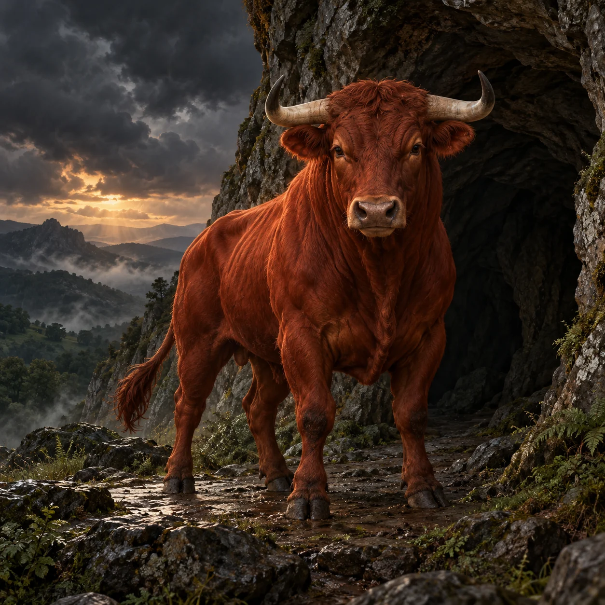
Sebelum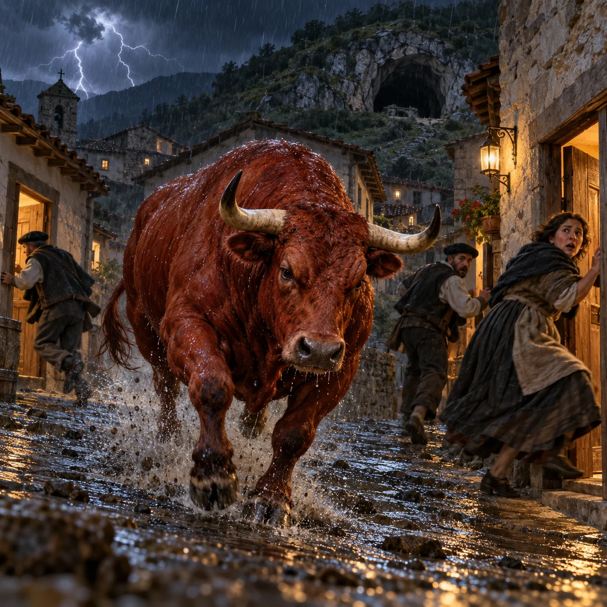
SetelahStorm-night red bull drives adult villagers indoors
Aatxe in red bull form driving villagers indoors on a storm night
Dasar sumber dan prompt
aatxe-c02, aatxe-c03, aatxe-c06
- Ia roh penghuni gua yang berwujud banteng muda merah, tetapi sebagai pengubah wujud kadang menjadi manusia, sapi, atau anak sapi. Aatxe (en)
- Pada malam hari, terutama saat badai, ia keluar dari lubang sarangnya dan menyerang penjahat serta orang jahat lain. Aatxe (en)
- Menurut artikel bahasa Jerman, Aatxe adalah roh gua yang pada malam badai keluar dari gua Leze dekat Sara dan menggiring penduduk desa masuk ke rumah. Aatxe (de)
Pilihan artistik:
- Painterly square composition
- Clothing, weather and exact setting details are editorial unless identified in claims
Red bull coherently charges past adults seeking indoor shelter during storm.
Create one square premium painterly mythological catalogue illustration. A fierce RED BULL with normal four-legged bull anatomy, wet russet coat and two natural horns, charging down a small Basque village lane at night while THREE fully clothed adult villagers hurry through nearby house doorways. Its muscular body is central and large in the composition, doors visible. Cave mouth on hillside behind village hints at its origin. Physical rain and lightning far in sky, terrified villagers, bull has no wings or invented horns. This is documented punishment and warning storm episode. No wounds. Refined detailed naturalistic painting with strong readable composition and complete relevant silhouettes. No text, watermark, borders. No generic glow, luminous eyes, floating ribbons, magical mist, sparkles or added supernatural powers. Lighting physical and restrained; creature presence comes from documented form or episode.
Asena
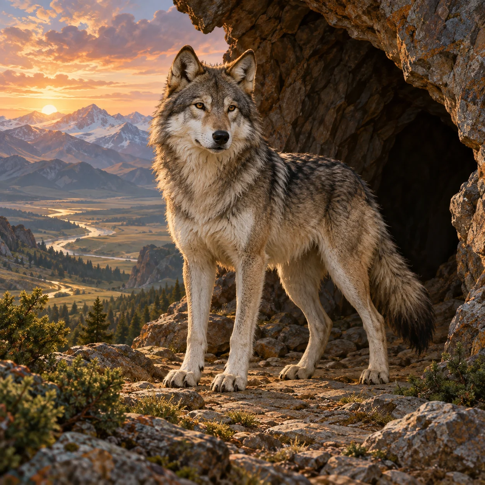
Sebelum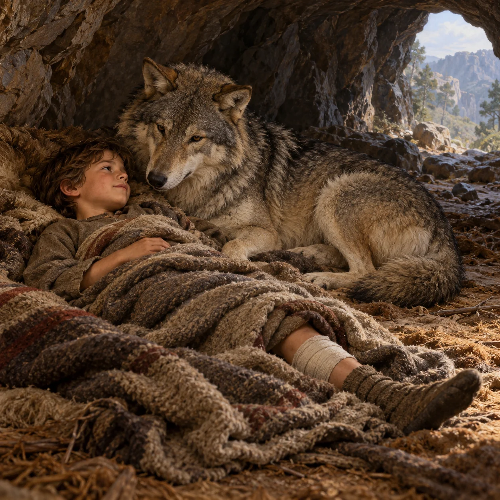
SetelahShe-wolf caring for recovering fully clothed young boy in cave
Asena she-wolf caring for a recovering child in a cave
Dasar sumber dan prompt
asena-c02
- Legenda Asena berkisah tentang seorang anak yang selamat dari pertempuran; seekor serigala betina menemukan dan merawatnya hingga sembuh. Asena (en)
Pilihan artistik:
- Painterly square composition
- Clothing, weather and exact setting details are editorial unless identified in claims
Protective wolf and safe bandaged clothed child show cave recovery scene.
Create one square premium painterly mythological catalogue illustration. A protective female GREY WOLF caring for a fully clothed young boy resting wrapped in opaque rough wool blankets on a dry cave floor. The boy is awake, safe and recovering, with a simple bandage over one shin but NO visible injury or blood; wolf gently rests beside his shoulder with attentive maternal posture. Wide enough to show child's full blanket-covered body and cave refuge. Source says she-wolf nursed injured boy back to health; illustrate the tender recovery episode, not literal suckling or birth. No adult or child nudity. Natural wolf anatomy. Refined detailed naturalistic painting with strong readable composition and complete relevant silhouettes. No text, watermark, borders. No generic glow, luminous eyes, floating ribbons, magical mist, sparkles or added supernatural powers. Lighting physical and restrained; creature presence comes from documented form or episode.
Bashe
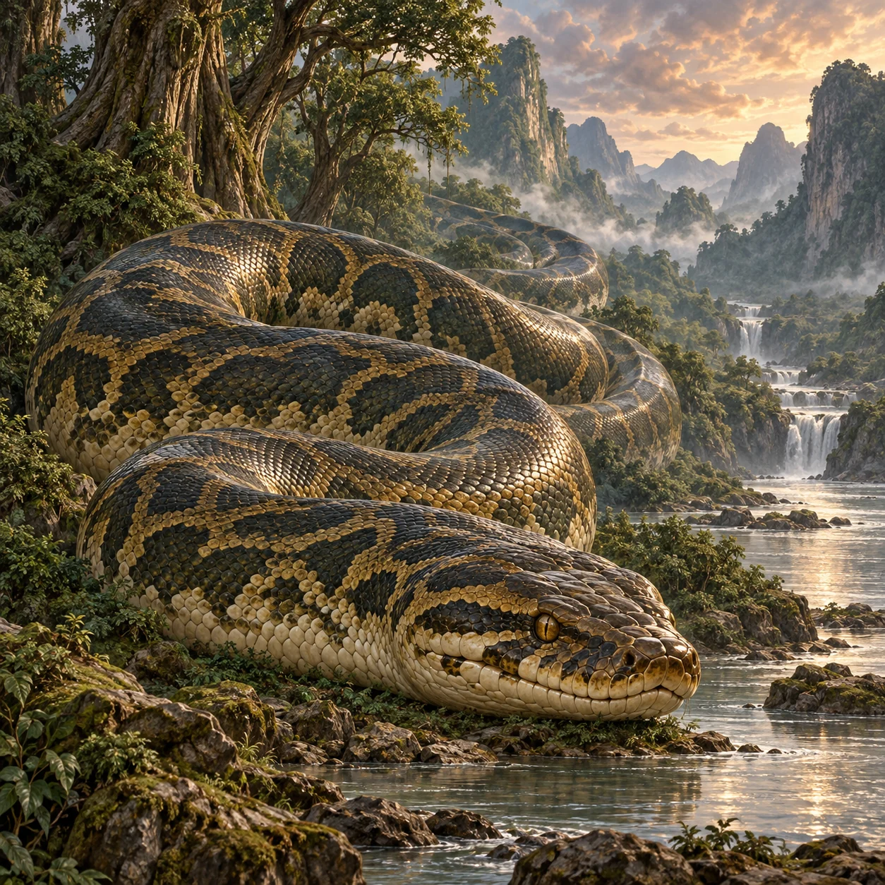
Sebelum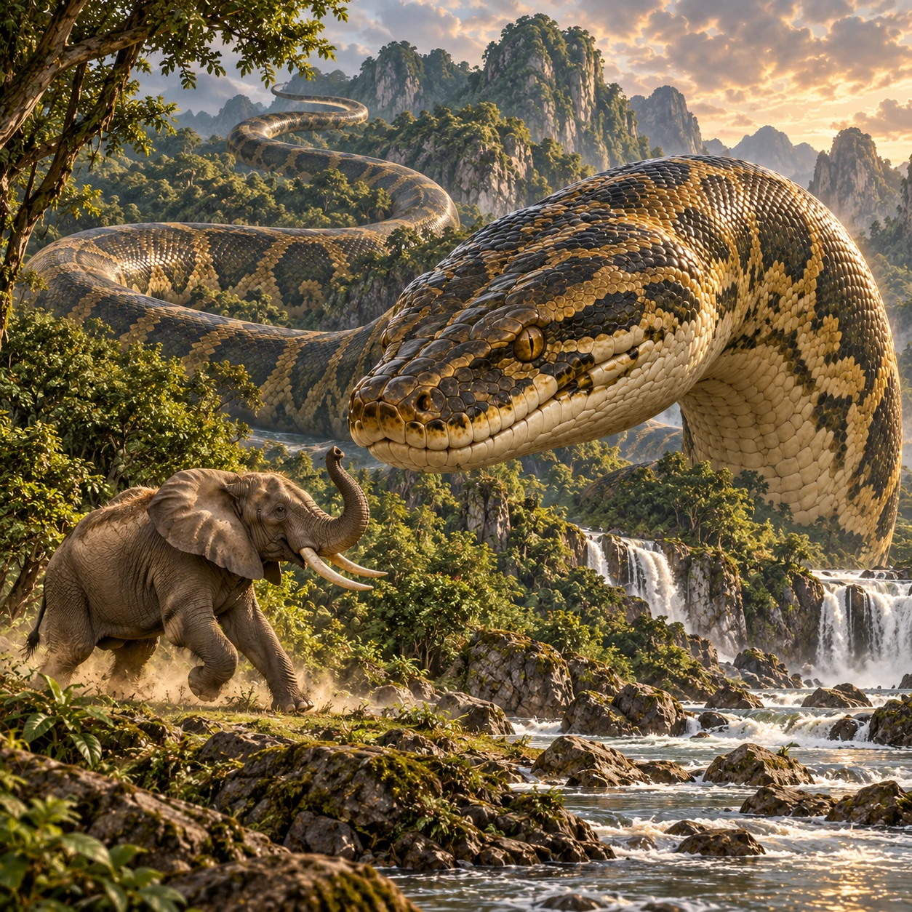
SetelahActive depiction reads as an ordinary animal or understates the documented mythical identity.
Bashe the Chinese python-like giant elephant-eating serpent. A colossal limbless python coils across a forest valley, lifting its enormous head beside a full-grown elephant, whose whole body is smaller than the snake's head. The unharmed elephant retreats from the looming serpent; show the myth's impossible predator scale, no actual eating or injuries. Exactly one snake head, one continuous enormous body tapering to a tail, no wings or horns. Make both elephant and snake readable in the same physical depth so the scale is unmistakable.
Dasar sumber dan prompt
bashe-c01
- Bashe adalah ular raksasa mitologi Tiongkok yang menyerupai piton dan memakan gajah. Bashe (en)
Pilihan artistik:
- Composition, illustrative colors, goddess clothing and harness are editorial.
Colossal one-headed limbless python dwarfs nearby full-grown elephant, making elephant-eating scale unmistakable without injury. Old source tier valid explicitly accepted by root for c01.
Bashe the Chinese python-like giant elephant-eating serpent. A colossal limbless python coils across a forest valley, lifting its enormous head beside a full-grown elephant, whose whole body is smaller than the snake's head. The unharmed elephant retreats from the looming serpent; show the myth's impossible predator scale, no actual eating or injuries. Exactly one snake head, one continuous enormous body tapering to a tail, no wings or horns. Make both elephant and snake readable in the same physical depth so the scale is unmistakable. Edit the reference into a full square mythological narrative illustration, restrained painterly realism, strong readable main subject, correct coherent anatomy. No text, watermark, frame, neon, generic aura, magical ribbons, generic mist or smoke. Use only explicitly described source supernatural action. Keep all people fully clothed and all creatures unharmed. Scene staging and clothes are editorial choices.
Boiuna
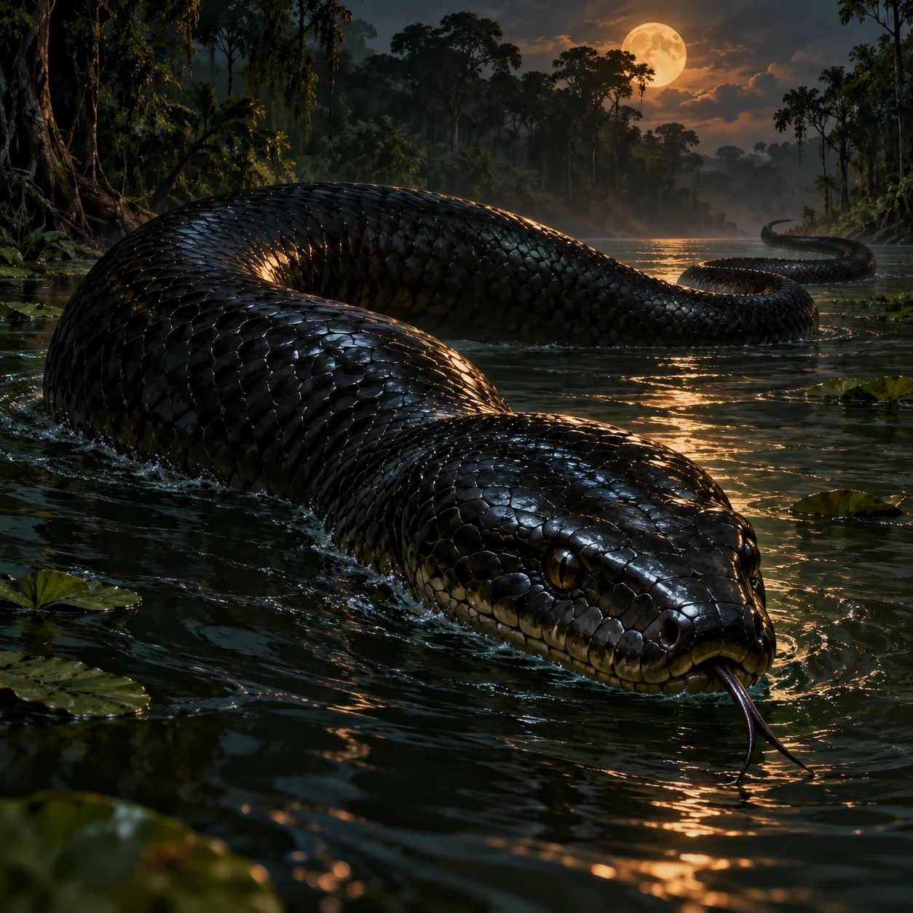
Sebelum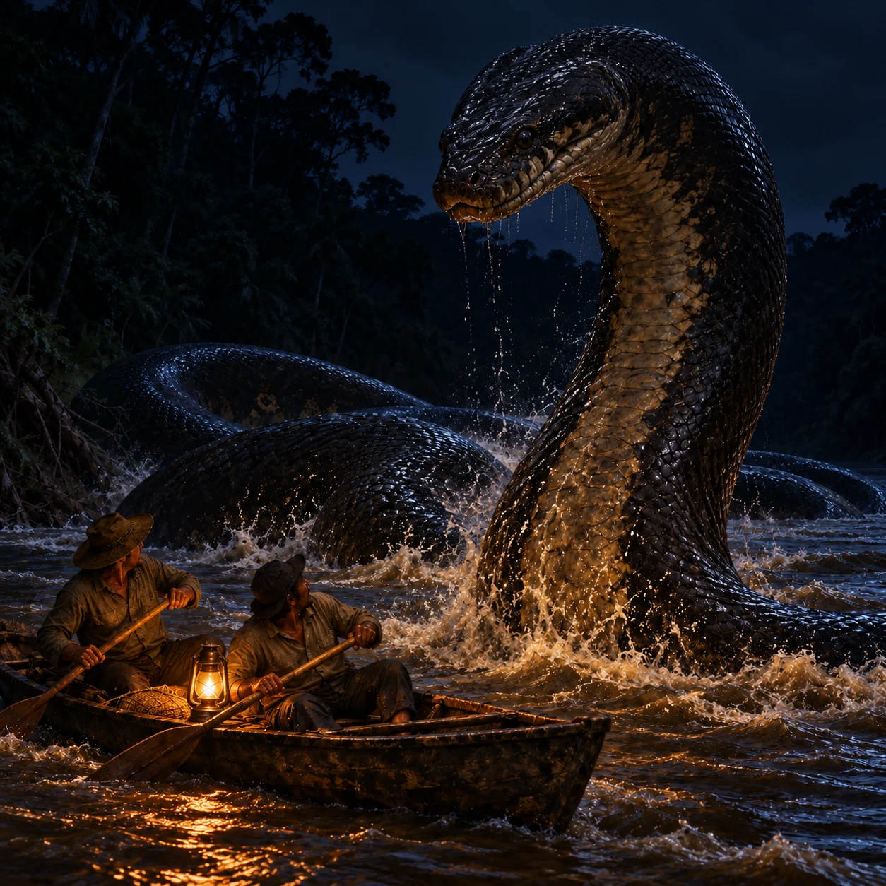
SetelahImmense black river serpent confronting frightened fishermen in small canoe
Boiuna giant black river serpent frightening fishermen
Dasar sumber dan prompt
boiuna-c01, boiuna-c02, boiuna-c03
- Boiuna ("ular hitam") adalah makhluk mitologi Brasil, juga disebut Cobra-Grande ("ular besar") dan Mboiaçu. Boiuna (en)
- Boiuna adalah ular hitam yang aktif malam hari dan makhluk terkuat di sungai-sungai hutan Amazon. Boiuna (en)
- Ia dapat berubah wujud menjadi kano, perahu layar, atau perempuan untuk menakuti nelayan yang memasuki wilayahnya. Boiuna (en)
Pilihan artistik:
- Painterly square composition
- Clothing, weather and exact setting details are editorial unless identified in claims
Moonless nocturnal Amazon setting with physical canoe lantern; giant black serpent, adult fishermen and anatomy preserved. Source nocturnal requirement corrected.
Edit this Boiuna illustration only to correct the selected source's NOCTURNAL activity. Preserve the immense black river serpent, single snake head, all coils, two adult fishermen, canoe, coherent anatomy and overall composition. Change the scene to a MOONLESS NIGHT on the Amazon: very dark blue-black sky and jungle silhouette, readable soft ambient night light, one small ordinary physical oil lantern inside the canoe casting warm light on fishermen, nearby water and the lower scales. No moon/sun/daylight. Do not add glowing eyes, magical mist, aura or particles. Keep river disturbance physical. Premium painterly square illustration.
Cheval Gauvin
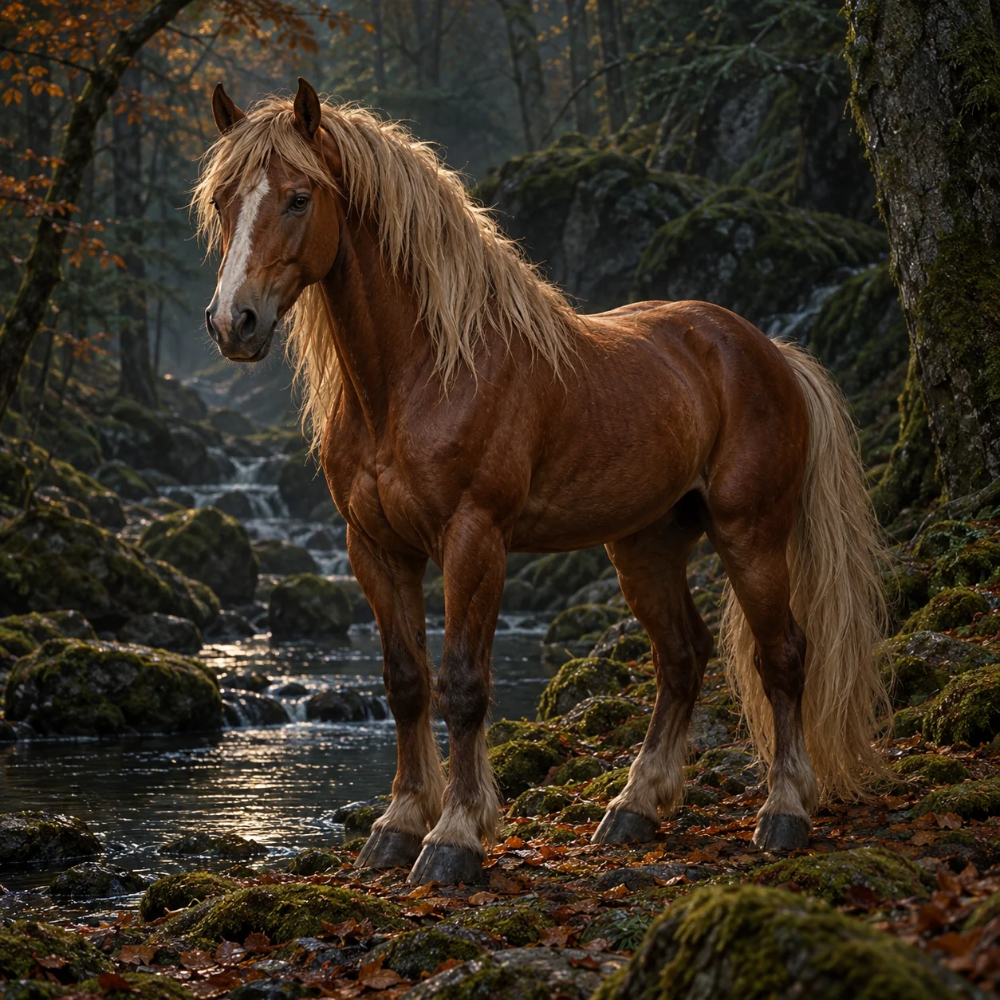
Sebelum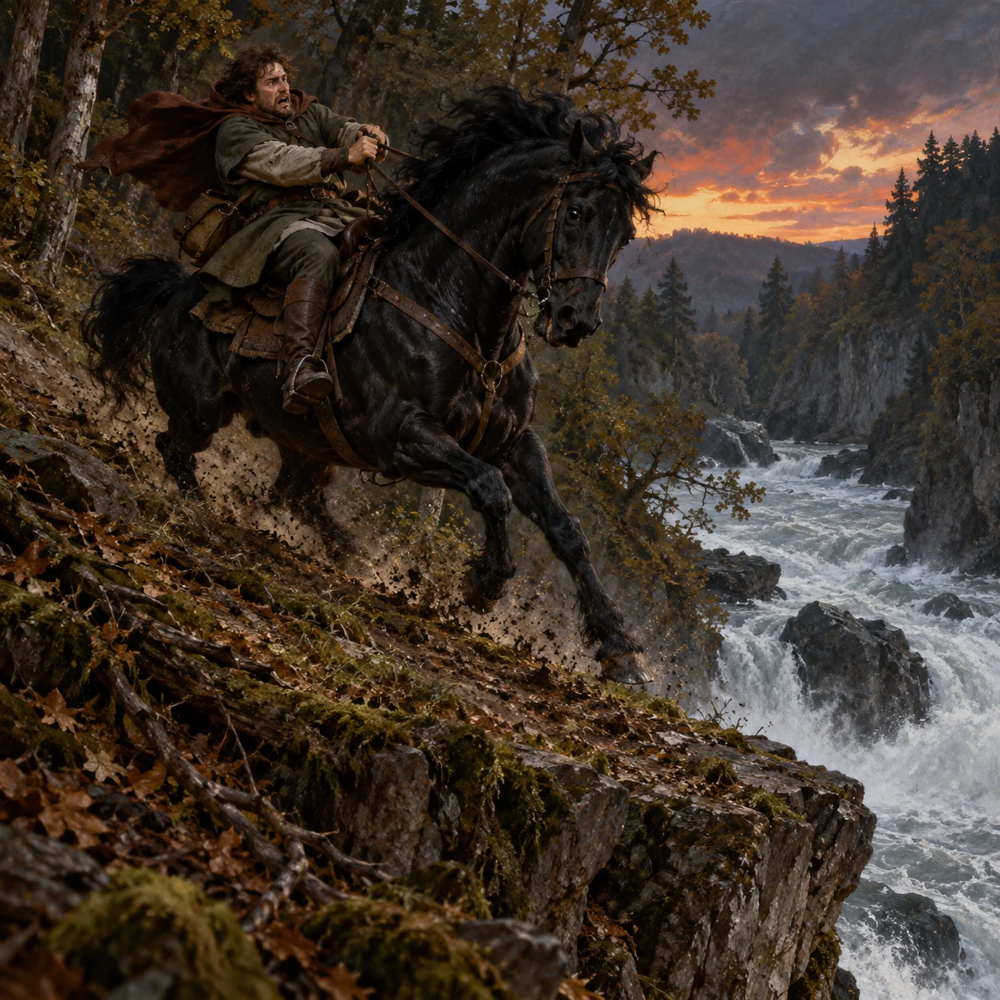
SetelahEvil horse with adult rider rushing toward a perilous river bank
Cheval Gauvin carrying a rider toward a perilous riverbank
Dasar sumber dan prompt
cheval-gauvin-c01, cheval-gauvin-c02
- Cheval Gauvin ("kuda Gauvin") adalah kuda jahat legendaris dari Franche-Comté, Prancis, dan Pegunungan Jura di Swiss, yang berkeliaran di sepanjang sungai, hutan, dan kuburan serta berusaha membunuh penunggangnya dengan menenggelamkan atau melemparkannya ke jurang. Cheval Gauvin (en)
- Legenda tentang kuda ini pertama dikumpulkan di Chamblay oleh Désiré Monnier dan diterbitkan pada 1854. Cheval Gauvin (en)
Pilihan artistik:
- Painterly square composition
- Clothing, weather and exact setting details are editorial unless identified in claims
Horse and adult rider race toward steep turbulent riverbank, no injury.
Create one square premium painterly mythological catalogue illustration. A sinister black HORSE with coherent four legs gallops downhill toward the lip of a steep rushing riverbank, carrying a fully clothed ADULT medieval traveller pulling desperately on reins. French wooded ravine at dusk, edge and roaring water clearly visible ahead, horse and rider central at the moment BEFORE any fall, no injury/death. Source evil horse lures riders and takes them toward drowning or abyss; this dangerous journey gives it mythic identity. Natural horse anatomy, no wings/horns/hybrid features. Physical movement and fearful rider, not emitted magic. Refined detailed naturalistic painting with strong readable composition and complete relevant silhouettes. No text, watermark, borders. No generic glow, luminous eyes, floating ribbons, magical mist, sparkles or added supernatural powers. Lighting physical and restrained; creature presence comes from documented form or episode.
Cheval Mallet
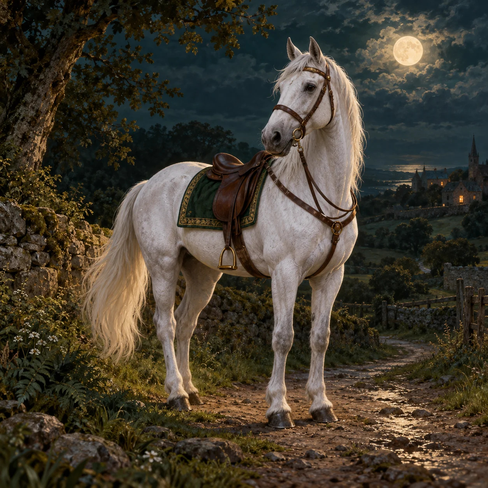
Sebelum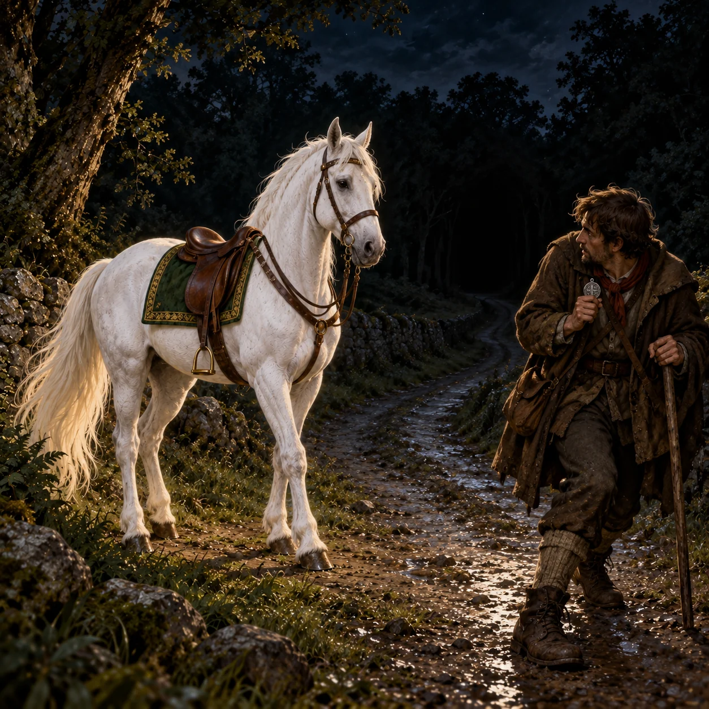
SetelahActive depiction reads as an ordinary animal or understates the documented mythical identity.
Keep natural white saddled horse. At night the malevolent Cheval Mallet offers its saddle to an exhausted traveler on a deserted road; traveler hesitates holding the recorded protective St Benedict medal. Show ominous disappearance narrative by road leading into black darkness, without invented magic body. Human-horse interaction is central, not passive horse portrait.
Dasar sumber dan prompt
cheval-mallet-c02
- Ia muncul pada malam hari sebagai kuda putih atau hitam yang indah, lengkap dengan pelana dan tali kekang, menggoda pelancong yang kelelahan; yang naik tidak pernah terlihat lagi kecuali membawa ongkos perjalanan atau jimat seperti medali Santo Benediktus. Cheval Mallet (en)
Pilihan artistik:
- Colours, human age/appearance, clothing, supporting props and scene arrangement are editorial staging rather than unique attested iconography.
Coherent saddled white horse tempts weary traveler holding a protective medal; ominous nightroad narrative clear.
Cheval Mallet: Keep natural white saddled horse. At night the malevolent Cheval Mallet offers its saddle to an exhausted traveler on a deserted road; traveler hesitates holding the recorded protective St Benedict medal. Show ominous disappearance narrative by road leading into black darkness, without invented magic body. Human-horse interaction is central, not passive horse portrait. Separate revised catalogue folklore illustration, painterly naturalistic detailed dramatic scene. Use only specified documented variant, don't combine alternatives. Clothing,colours,age and supporting layout editorial. Coherent anatomy and clear mythic identity at small viewing scale. No text/watermark/neon/aura/energy ribbons/generic mist or smoke; only source-specific restrained effect when explicitly requested.
Cressie
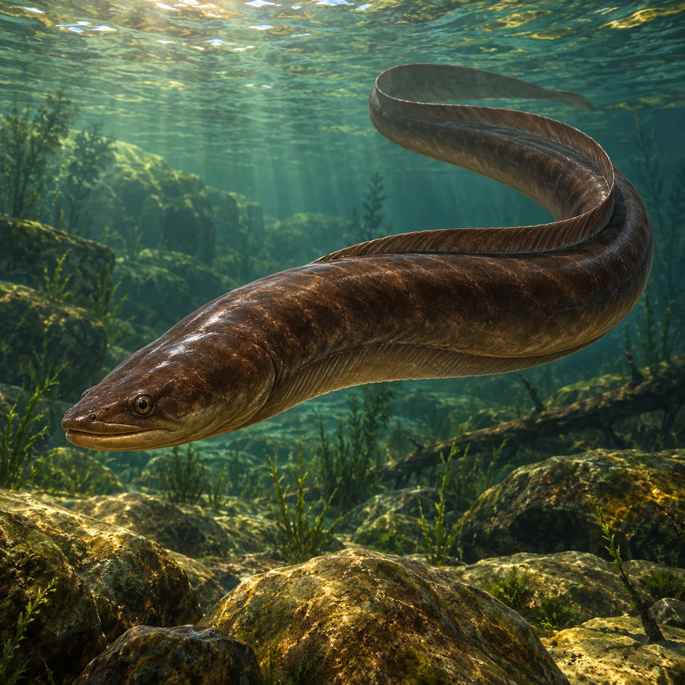
Sebelum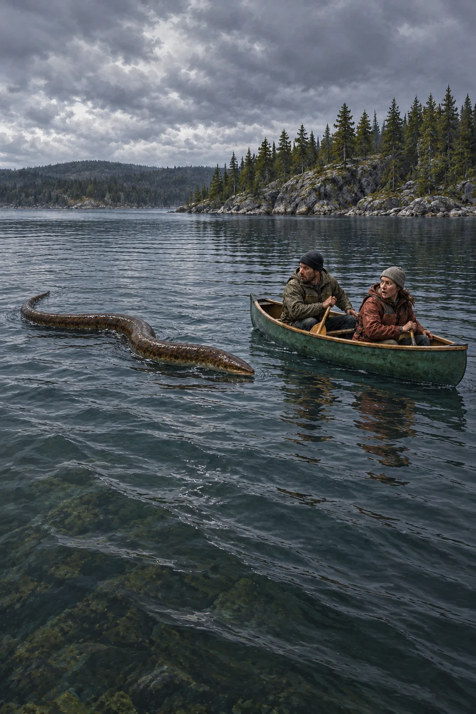
SetelahActive animal portrait is weak or lacks accepted specific-form support. Selected source-supported revision: Cressie sighting at Crescent Lake: one approximately fifteen-foot dark brown sleek eel-like lake monster swims immediately beside a small canoe with two startled adult witnesses. Eel fully visible just beneath surface and long sinuous back breaking water, whole length clearly longer than the canoe. No dinosaur head, horns, legs or glowing eyes. Newfoundland forest shore and cold overcast daylight. Canoe is editorial scale reference, not asserted detail of historical sighting.
Approximately15-foot sleek dark-brown eel beside canoe with two adult witnesses at Crescent Lake.
Dasar sumber dan prompt
cressie-c01, cressie-c03, cressie-c08
- Dalam cerita rakyat Kanada, Cressie adalah julukan monster danau mirip belut yang konon hidup di Crescent Lake, Robert's Arm, Newfoundland and Labrador. Cressie (en)
- Monster ini digambarkan mirip belut besar cokelat tua sepanjang sekitar 15 kaki dengan tubuh panjang dan licin. Cressie (en)
- Pada 9 Juli 1991, Fred Parsons dan istrinya melaporkan melihat makhluk besar mirip ular berenang di Crescent Lake. Cressie (en)
Pilihan artistik:
- Canoe editorial scale device
- Painterly cold lake composition
Corrected native individually viewed: whole eel and canoe side by side on same water plane, eel approximately1.5x canoe by curved body length, narrow head and fully visible tail; witnesses intact, no invented anatomy.
Use case: illustration-story. Asset: mythological creature education catalogue. Create one painterly realistic portrait 2:3, coherent rich brushwork and dramatic readable storytelling. No text or watermark. Cressie sighting at Crescent Lake: one approximately fifteen-foot dark brown sleek eel-like lake monster swims immediately beside a small canoe with two startled adult witnesses. Eel fully visible just beneath surface and long sinuous back breaking water, whole length clearly longer than the canoe. No dinosaur head, horns, legs or glowing eyes. Newfoundland forest shore and cold overcast daylight. Canoe is editorial scale reference, not asserted detail of historical sighting. No arbitrary glowing effects, colored mist, glyphs or ribbons.
Edit1: Edit this image to correct ONLY eel-like lake monster size and body. Whole eel length approximately4.6 metres (fifteen feet), about1.5 times the three-metre canoe length. Make whole sleek dark-brown eel clearly visible curled beside canoe on the same water plane, fairly narrow eel head/body rather than huge crocodile head. Keep both startled clothed adult witnesses, lake forest shore and natural daylight. No legs or horns. Preserve painterly portrait2:3; no glow.
Edit2: Edit this image: ERASE THE ENTIRE EXISTING EEL including every part of its very long distant tail. Replace it with ONE MUCH SHORTER eel, whole length4.6metres, slim head only twenty centimetres long. Make the canoe3metres long and place BOTH canoe and eel fully visible SIDE BY SIDE horizontally at exactly the SAME DISTANCE in the centre of the scene. Eel length visually1.5x canoe length, no tail extending into distance, tail ends immediately beside canoe stern aboutone metre beyond it. Head narrow eel face, natural dark brown sleek eel body. Zoom out if needed. Keep two clothed startled adults, natural lake forest and painterly portrait2:3. Main correction must reduce actual whole eel length radically, not just shrink its head. No extra creatures, no text or magical effects.
Dawon
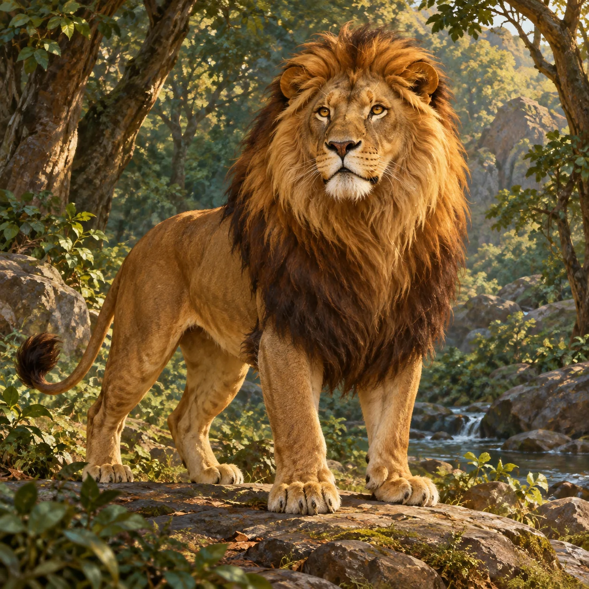
Sebelum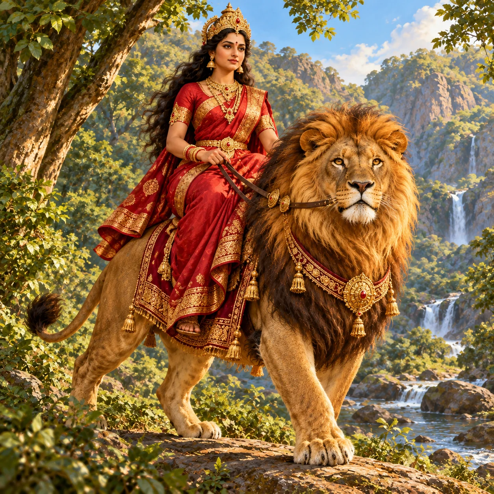
SetelahActive depiction reads as an ordinary animal or understates the documented mythical identity.
Dawon in the lion variant as the goddess Durga's mount. Keep a mighty four-legged lion dominant in the foreground, now visibly carrying Durga, a fully clothed Indian human goddess seated upon its back in red-and-gold sari. She has a calm regal human face; depict a simple restrained representational human figure with two visible arms holding the reins and resting on her lap. No invented hybrid lion anatomy, no rays, halo or glowing eyes. Sacred partnership and purposeful mount action make the lion's identity obvious. Goddess clothing and pose are artistic staging, no extra iconographic claim.
Dasar sumber dan prompt
dawon-c01
- Dawon adalah singa atau harimau yang menjadi tunggangan Durga dalam tradisi Hindu. Dawon (en)
Pilihan artistik:
- Composition, illustrative colors, goddess clothing and harness are editorial.
Anatomically normal lion clearly carries Durga in fully clothed regal sari; source lion-mount identity now explicit. Two visible human arms, costume/crown/harness are artistic simplification, not new anatomical claims. Valid research c01 case explicitly accepted by root.
Dawon in the lion variant as the goddess Durga's mount. Keep a mighty four-legged lion dominant in the foreground, now visibly carrying Durga, a fully clothed Indian human goddess seated upon its back in red-and-gold sari. She has a calm regal human face; depict a simple restrained representational human figure with two visible arms holding the reins and resting on her lap. No invented hybrid lion anatomy, no rays, halo or glowing eyes. Sacred partnership and purposeful mount action make the lion's identity obvious. Goddess clothing and pose are artistic staging, no extra iconographic claim. Edit the reference into a full square mythological narrative illustration, restrained painterly realism, strong readable main subject, correct coherent anatomy. No text, watermark, frame, neon, generic aura, magical ribbons, generic mist or smoke. Use only explicitly described source supernatural action. Keep all people fully clothed and all creatures unharmed. Scene staging and clothes are editorial choices.
Delphyne
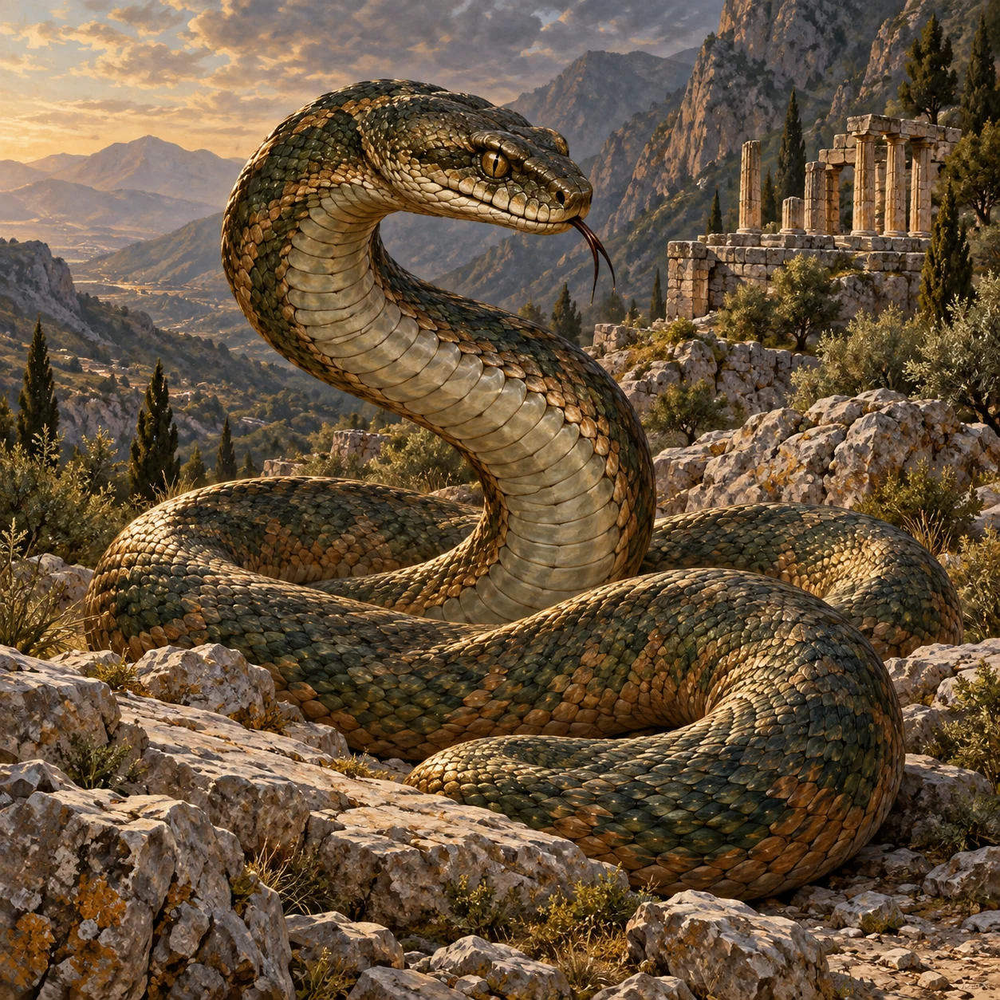
Sebelum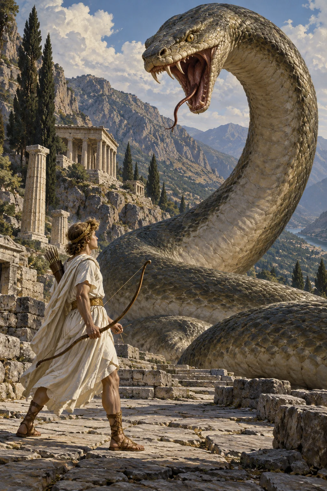
SetelahActive animal portrait is weak or lacks accepted specific-form support. Selected source-supported revision: Delphyne, monstrous she-serpent of Delphi, coils across a massive stone path and rears many times taller than the opposing youthful human god Apollo. Greek mountains and ancient Delphi stone sanctuary, tense confrontation before the documented defeat. Enormous single natural serpent head and continuous legless body, no horns or wings or invented human torso. Fully covered pale Greek tunic on Apollo, posture resolute. Strong size and narrative, no aura, no gore.
Delphyne, monstrous she-serpent of Delphi, coils across a massive stone path and rears many times taller than the opposing youthful human god Apollo. Greek mountains and ancient Delphi stone sanctuary, tense confrontation before the documented defeat. Enormous single natural serpent head and continuous legless body, no horns or wings or invented human torso. Fully covered pale Greek tunic on Apollo, posture resolute. Strong size and narrative, no aura, no gore.
Dasar sumber dan prompt
delphyne-c01, delphyne-c02
- Delphyne adalah nama, menurut sebagian kisah, bagi ular raksasa yang dibunuh Apollo di Delphi. Delphyne (en)
- Dalam kisah tertua, Himne Homeros untuk Apollo (abad ke-6 SM), sang dewa membunuh ular betina tanpa nama yang kemudian disebut Delphyne. Delphyne (en)
Pilihan artistik:
- Painterly composition
- Clothes, exact colors and scenery details editorial
Native individually viewed: Immense single-headed legless she-serpent confronts clothed Apollo at Delphi sanctuary; no horns/wings, physical scene without gore.
Use case: illustration-story. Asset: mythological creature education catalogue. Create one painterly realistic portrait 2:3, coherent rich brushwork and dramatic readable storytelling. No text or watermark. Delphyne, monstrous she-serpent of Delphi, coils across a massive stone path and rears many times taller than the opposing youthful human god Apollo. Greek mountains and ancient Delphi stone sanctuary, tense confrontation before the documented defeat. Enormous single natural serpent head and continuous legless body, no horns or wings or invented human torso. Fully covered pale Greek tunic on Apollo, posture resolute. Strong size and narrative, no aura, no gore. No arbitrary glowing effects, colored mist, glyphs or ribbons.
Demon Cat
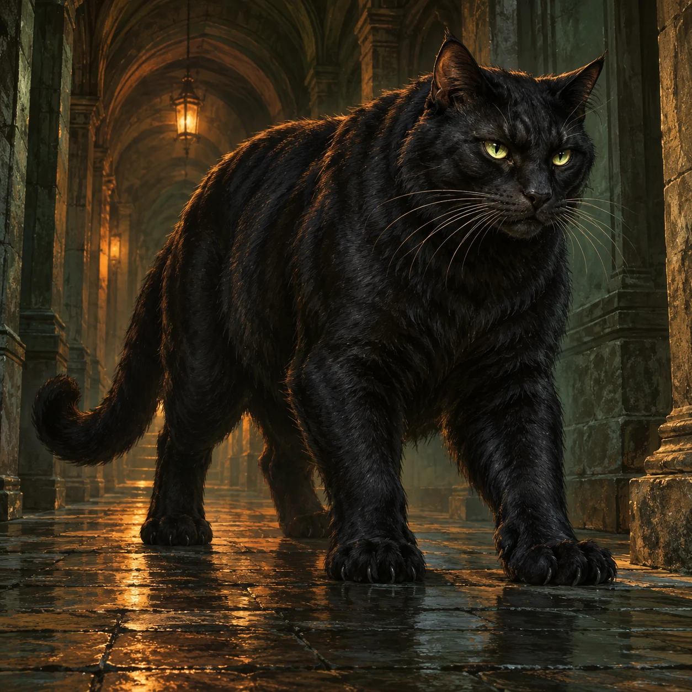
Sebelum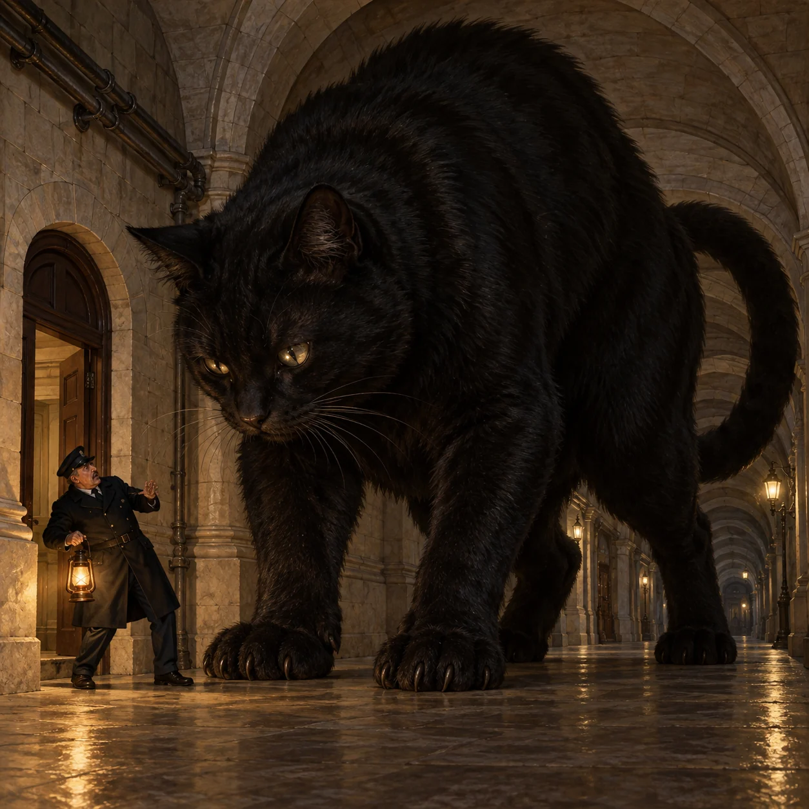
SetelahElephant-sized black cat in Capitol tunnel with adult guard for scale
Elephant-sized Demon Cat confronting a Capitol guard
Dasar sumber dan prompt
demon-cat-c05, demon-cat-c06, demon-cat-c07
- Menurut legenda, kucing ini terlihat menjelang pemilihan presiden dan tragedi di Washington, D.C. Demon Cat (en)
- Ia digambarkan sebagai kucing hitam atau kucing belang seukuran kucing rumah biasa. Demon Cat (en)
- Saksi melaporkan kucing itu membesar hingga "seukuran harimau raksasa" atau gajah. Demon Cat (en)
Pilihan artistik:
- Painterly square composition
- Clothing, weather and exact setting details are editorial unless identified in claims
Elephant-sized cat towers above full adult guard; natural reflected eyes.
Create one square premium painterly mythological catalogue illustration. An enormous BLACK CAT grown to ELEPHANT SIZE fills a vaulted old US Capitol basement tunnel, directly beside a single fully clothed adult night guard holding a lantern. Make explicit scale: guard only knee-high beside cat's foreleg, normal-sized arched doorway behind guard. Cat crouches with back arched and coherent four paws, single feline head and one tail, dense black fur and eyes reflecting lantern only. Guard recoils uninjured. Source ordinary blackcat swells as large as tiger or elephant in government corridors. No wings, no fire, no spectral smoke. Refined detailed naturalistic painting with strong readable composition and complete relevant silhouettes. No text, watermark, borders. No generic glow, luminous eyes, floating ribbons, magical mist, sparkles or added supernatural powers. Lighting physical and restrained; creature presence comes from documented form or episode.
Gaueko
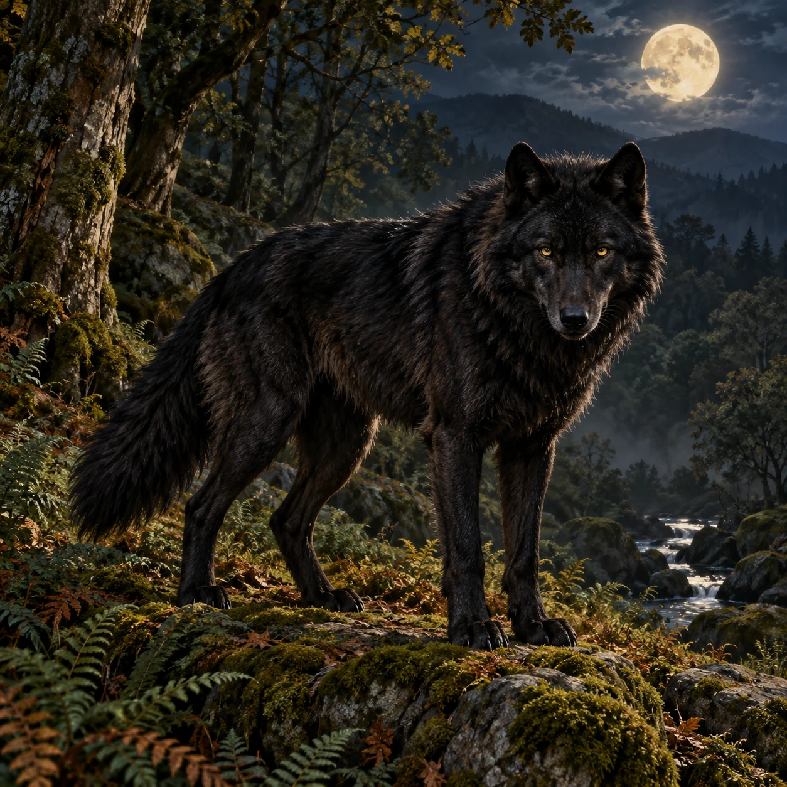
Sebelum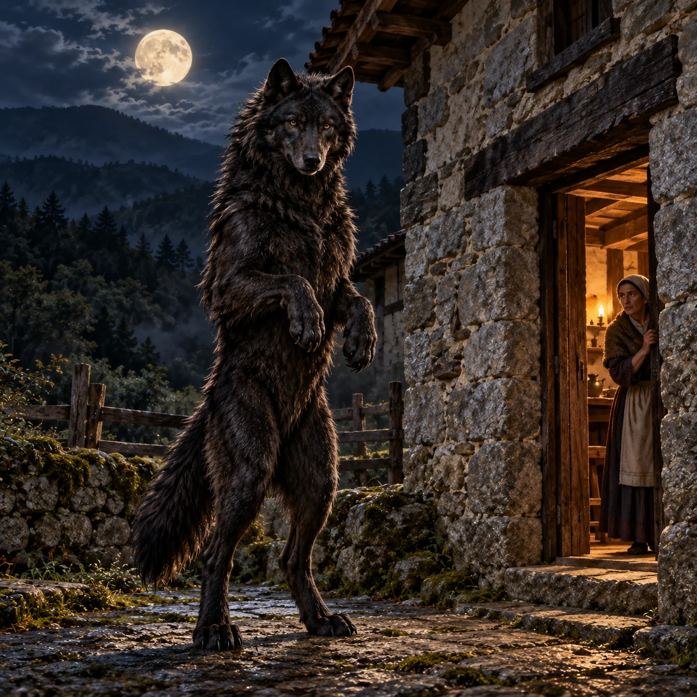
SetelahActive depiction reads as an ordinary animal or understates the documented mythical identity.
Gaueko in the explicitly recorded black-wolf manifestation sometimes standing on two legs. A dark wolf STANDS UPRIGHT ON ITS TWO HIND LEGS, front paws held forward, full body clearly visible outside a Basque stone farmhouse at midnight. A person remains within the doorway under household protection. One wolf head, two front paws, two hind legs, tail; retain black fur, wolf snout and paws, do not invent horns or human hands. Make the upright posture obvious at thumbnail scale.
Dasar sumber dan prompt
gaueko-c08, gaueko-c07
- Kekuasaannya disertai larangan bagi manusia meninggalkan perlindungan rumah, yang dijaga roh-roh keluarga; pelanggarnya berisiko diculik atau hilang secara misterius. Gaueko (fr)
- Menurut artikel bahasa Spanyol, ia digambarkan sebagai kehadiran tak terlihat, serigala hitam (otsobeltza) yang kadang berdiri dengan dua kaki, atau hewan lain seperti sapi, burung hantu, atau domba. Gaueko (es)
Pilihan artistik:
- Clothing, coat colours, human age/appearance, material ornament and environmental arrangement are editorial staging.
Black wolf clearly upright on two hind legs, forepaws held forward and human sheltered in farmhouse doorway; no added hybrid organs.
Gaueko in the explicitly recorded black-wolf manifestation sometimes standing on two legs. A dark wolf STANDS UPRIGHT ON ITS TWO HIND LEGS, front paws held forward, full body clearly visible outside a Basque stone farmhouse at midnight. A person remains within the doorway under household protection. One wolf head, two front paws, two hind legs, tail; retain black fur, wolf snout and paws, do not invent horns or human hands. Make the upright posture obvious at thumbnail scale. Separate revised illustration for a scholarly mythology catalogue. Detailed naturalistic painterly mythic scene, coherent anatomy, portrait or square composition. Identity must be visible through the cited documented variant/episode; no invented creature anatomy beyond the specified variant. No lettering, watermark, generic neon/aura/energy ribbons/magic smoke or glowing eyes. Clothing, colours and minor environmental staging are editorial choices.
Akugyo
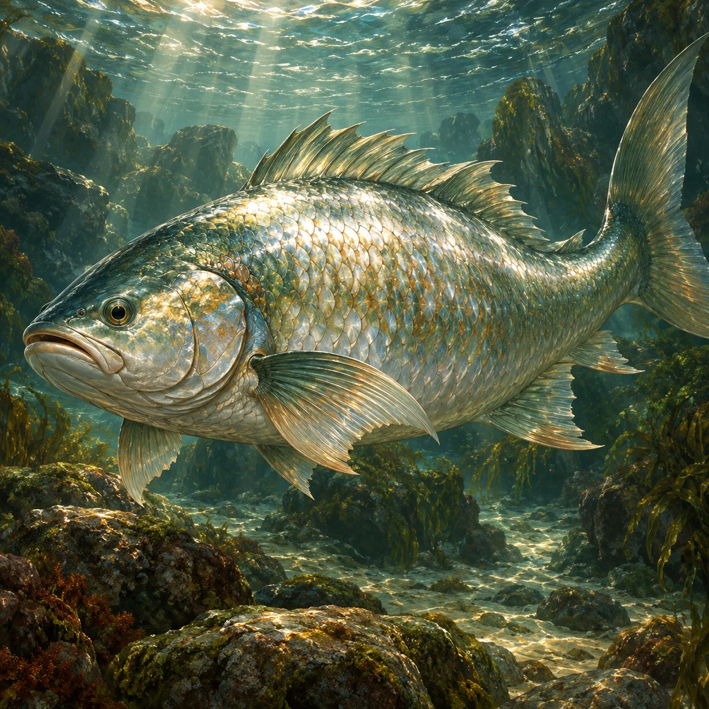
Sebelum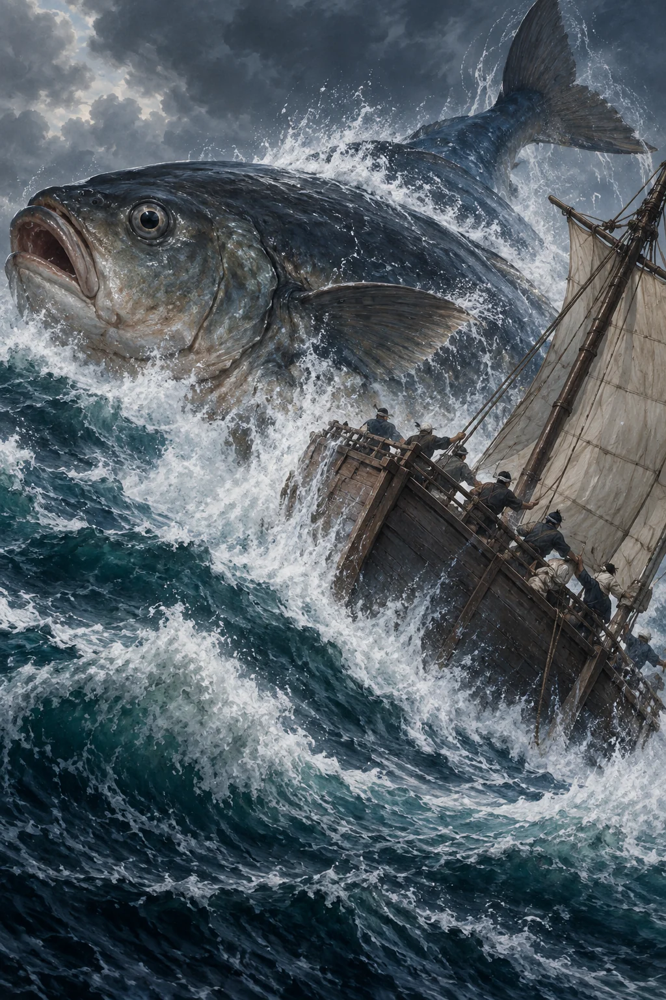
SetelahActive animal portrait is weak or lacks accepted specific-form support. Selected source-supported revision: Akugyo the immense sea fish overturns an entire wooden sailing ship off Kibi: gigantic ordinary fish anatomy erupts across the wave, massive back rolls the ship toward its side, tiny intact sailors cling to rails. Fish much larger than ship, one fish head, fins and tail, no humanoid face or dragon limbs. Dramatic Japanese maritime legend, storm wind and real sea spray, no glowing scales or invented magic, non-gory.
Akugyo the immense sea fish overturns an entire wooden sailing ship off Kibi: gigantic ordinary fish anatomy erupts across the wave, massive back rolls the ship toward its side, tiny intact sailors cling to rails. Fish much larger than ship, one fish head, fins and tail, no humanoid face or dragon limbs. Dramatic Japanese maritime legend, storm wind and real sea spray, no glowing scales or invented magic, non-gory.
Dasar sumber dan prompt
akugyo-c01, akugyo-c02, akugyo-c03
- Akugyo adalah monster laut dalam legenda Jepang. Akugyo (en)
- Kisah-kisah menempatkan ikan raksasa ini dekat bekas Provinsi Kibi. Akugyo (en)
- Konon mereka membalikkan kapal dan memangsa pelaut. Akugyo (en)
Pilihan artistik:
- Painterly composition
- Clothes, exact colors and scenery details editorial
Native individually viewed: Gigantic fish rolls sailing ship in storm off Kibi, coherent fins/tail, tiny sailors make sourced immense scale clear.
Use case: illustration-story. Asset: mythological creature education catalogue. Create one painterly realistic portrait 2:3, coherent rich brushwork and dramatic readable storytelling. No text or watermark. Akugyo the immense sea fish overturns an entire wooden sailing ship off Kibi: gigantic ordinary fish anatomy erupts across the wave, massive back rolls the ship toward its side, tiny intact sailors cling to rails. Fish much larger than ship, one fish head, fins and tail, no humanoid face or dragon limbs. Dramatic Japanese maritime legend, storm wind and real sea spray, no glowing scales or invented magic, non-gory. No arbitrary glowing effects, colored mist, glyphs or ribbons.
Ahriman
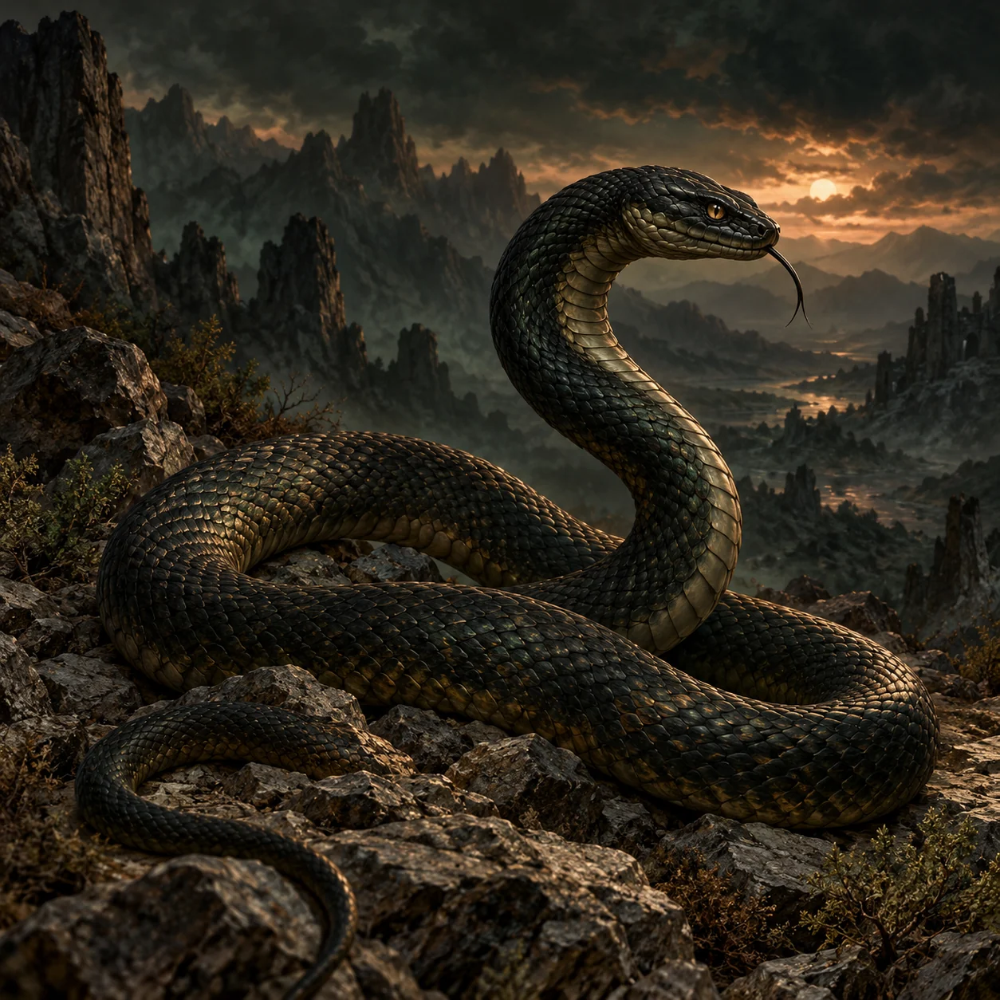
Sebelum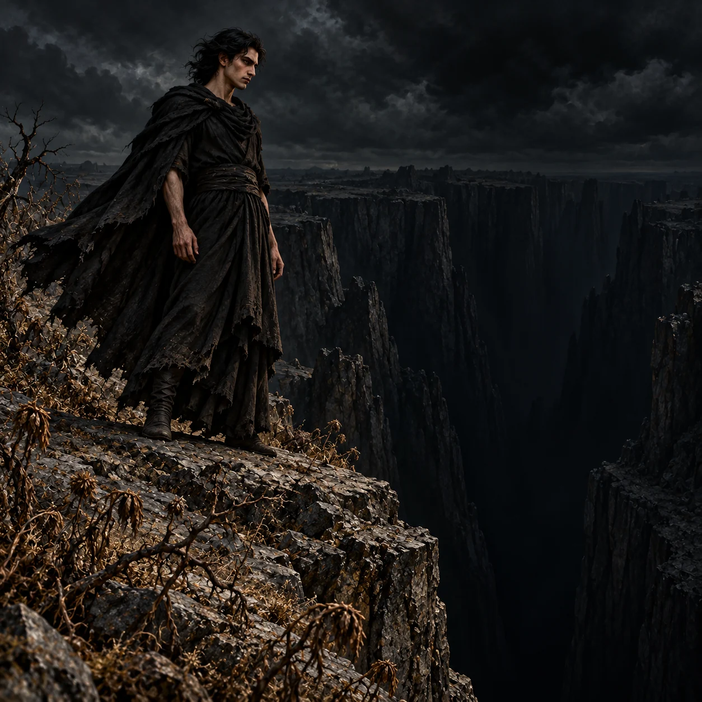
SetelahActive depiction reads as an ordinary animal or understates the documented mythical identity.
Replace snake with the explicitly documented young-man manifestation of Ahriman, evil Iranian spirit, inhabiting an abyss of endless northern darkness. Human-shaped young man in simple dark cloth stands at vast cliff above bottomless shadowed chasm; dying plants mark creation's decay, his expression cold. One head, two arms, two legs, no invented horns, fangs or serpent limbs. Avoid cheerful ordinary man portrait.
Dasar sumber dan prompt
ahriman-c05, ahriman-c06, ahriman-c07
Pilihan artistik:
- Colours, human age/appearance, clothing, supporting props and scene arrangement are editorial staging rather than unique attested iconography.
Documented young-man form at immense abyss of darkness, dying plants; coherent human anatomy without invented demon organs.
Ahriman: Replace snake with the explicitly documented young-man manifestation of Ahriman, evil Iranian spirit, inhabiting an abyss of endless northern darkness. Human-shaped young man in simple dark cloth stands at vast cliff above bottomless shadowed chasm; dying plants mark creation's decay, his expression cold. One head, two arms, two legs, no invented horns, fangs or serpent limbs. Avoid cheerful ordinary man portrait. Separate revised catalogue folklore illustration, painterly naturalistic detailed dramatic scene. Use only specified documented variant, don't combine alternatives. Clothing,colours,age and supporting layout editorial. Coherent anatomy and clear mythic identity at small viewing scale. No text/watermark/neon/aura/energy ribbons/generic mist or smoke; only source-specific restrained effect when explicitly requested.
Ama no Fuchigoma
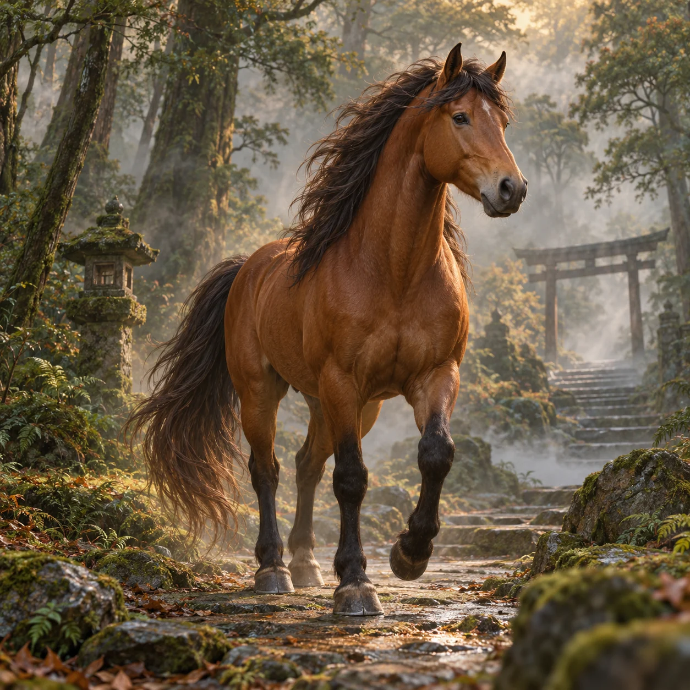
Sebelum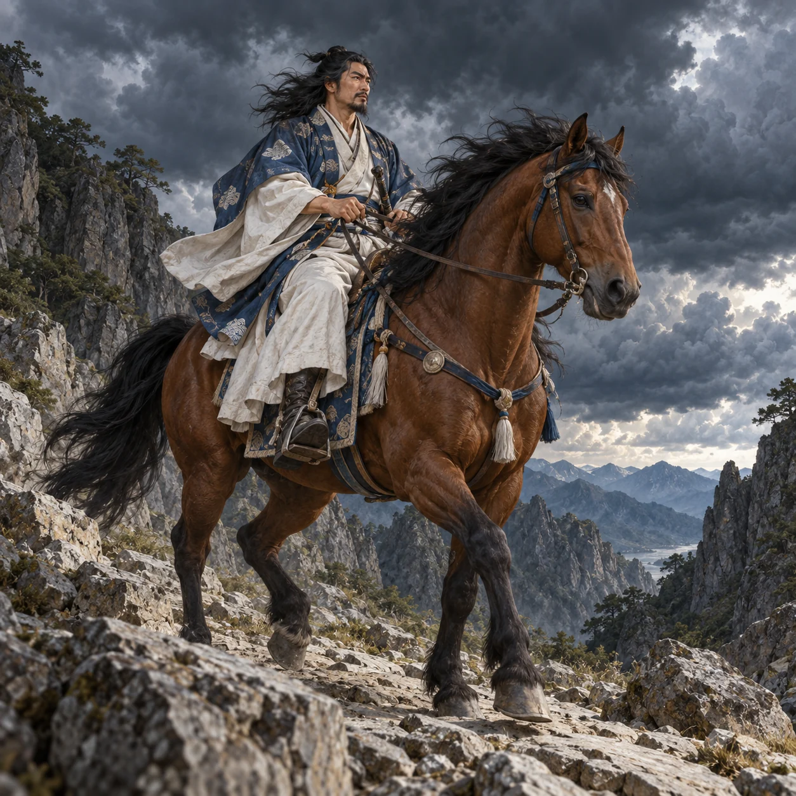
SetelahSusanoo riding the heavenly horse
Susanoo riding Ama-no-Fuchigoma
Dasar sumber dan prompt
ama-no-fuchigoma-c01, ama-no-fuchigoma-c02
Pilihan artistik:
- Painterly square composition
- Clothing, weather and exact setting details are editorial unless identified in claims
Coherent horse carries adult Susanoo; costumes and bay coat editorial.
Create one square premium painterly mythological catalogue illustration. The heavenly Japanese myth horse AMA-NO-FUCHIGOMA carries the ADULT MALE deity Susanoo through a dramatic mountain passage beneath storm clouds. Horse is full-body focal subject with normal four horse legs, one head, flowing dark mane and tail. Rider is a dignified human-faced adult in layered opaque ancient Japanese robes, riding naturally with two hands and two legs. Myth source identifies Susanoo's mount but gives no exact horse color or costume: bay coat, blue-white robe, simple tack and rocky scenery are editorial interpretation only. No wings/horns, no invented dragon form. Documented divine rider establishes identity. Refined detailed naturalistic painting with strong readable composition and complete relevant silhouettes. No text, watermark, borders. No generic glow, luminous eyes, floating ribbons, magical mist, sparkles or added supernatural powers. Lighting physical and restrained; creature presence comes from documented form or episode.
Akerbeltz
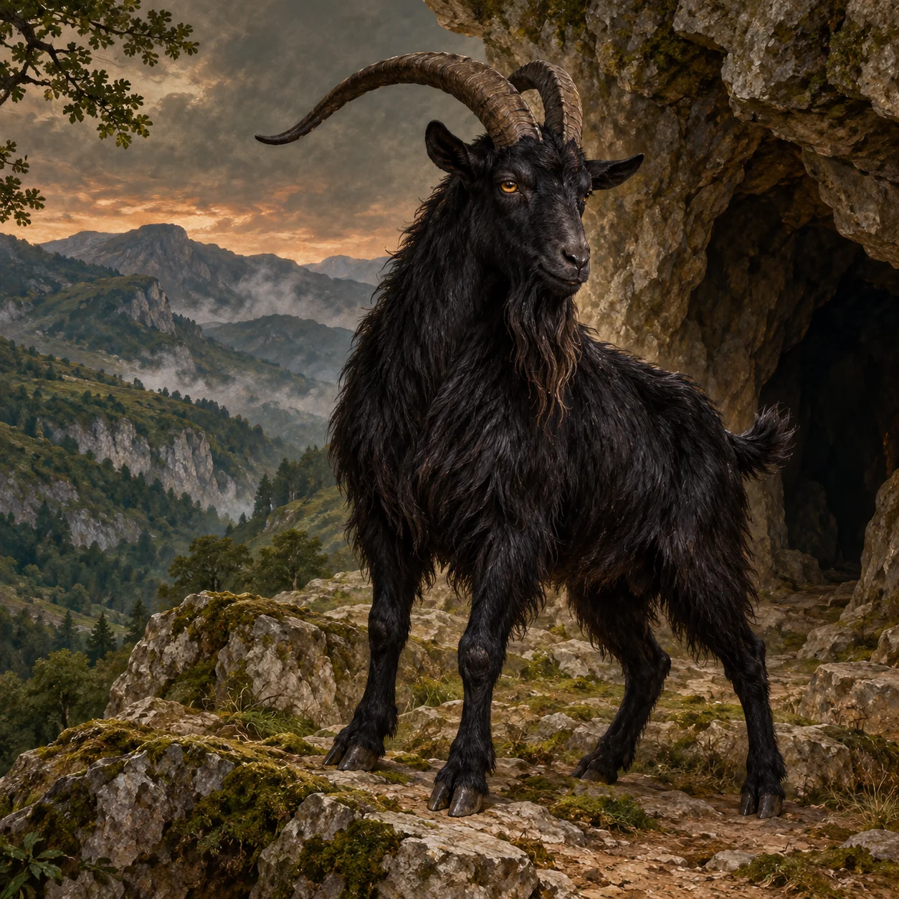
Sebelum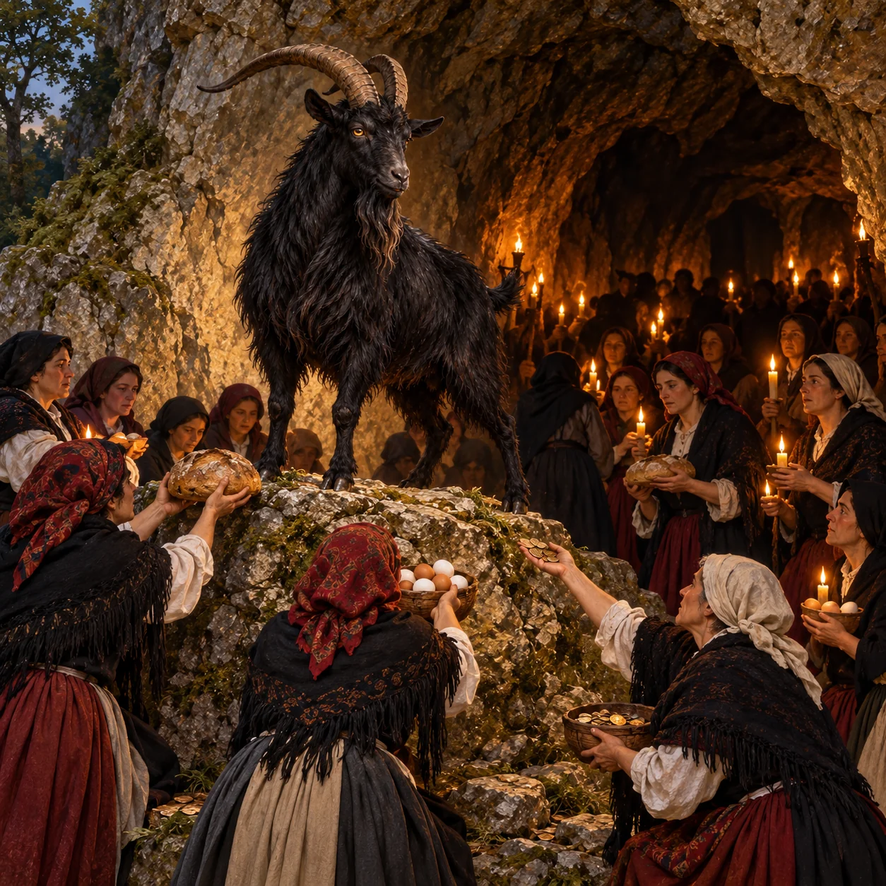
SetelahActive depiction reads as an ordinary animal or understates the documented mythical identity.
Preserve natural black billy goat. Akerbeltz presides on a raised stone at the mouth of Zugarramurdi cave, surrounded by gathering Basque witches with bread, eggs and coins offered, dark subterranean gathering seen clearly. Four goat legs, normal horns/beard, no human arms or devilhybrid. This source-recorded gathering conveys mythical identity.
Dasar sumber dan prompt
akerbeltz-c05, akerbeltz-c08, akerbeltz-c12
- Menurut para pemburu penyihir, Aker memimpin parodi misa Katolik bagi pengikutnya, yang mempersembahkan telur, roti, dan uang. Akerbeltz (en)
- Ia konon berada di mulut gua Zugarramurdi, tempat peri, lamia, dan penyihir berkumpul. Akerbeltz (en)
- Akelarre atau Akerlanda ("padang kambing") adalah tempat sabat, dan Aker memimpin pesta-pesta itu bersama para penyihir (sorginak). Aker (mythologie basque) (fr)
Pilihan artistik:
- Colours, human age/appearance, clothing, supporting props and scene arrangement are editorial staging rather than unique attested iconography.
Black billy goat presides at cave mouth over witches offering eggs/bread/coins, four coherent legs and normal horns.
Akerbeltz: Preserve natural black billy goat. Akerbeltz presides on a raised stone at the mouth of Zugarramurdi cave, surrounded by gathering Basque witches with bread, eggs and coins offered, dark subterranean gathering seen clearly. Four goat legs, normal horns/beard, no human arms or devilhybrid. This source-recorded gathering conveys mythical identity. Separate revised catalogue folklore illustration, painterly naturalistic detailed dramatic scene. Use only specified documented variant, don't combine alternatives. Clothing,colours,age and supporting layout editorial. Coherent anatomy and clear mythic identity at small viewing scale. No text/watermark/neon/aura/energy ribbons/generic mist or smoke; only source-specific restrained effect when explicitly requested.
Moddey Dhoo
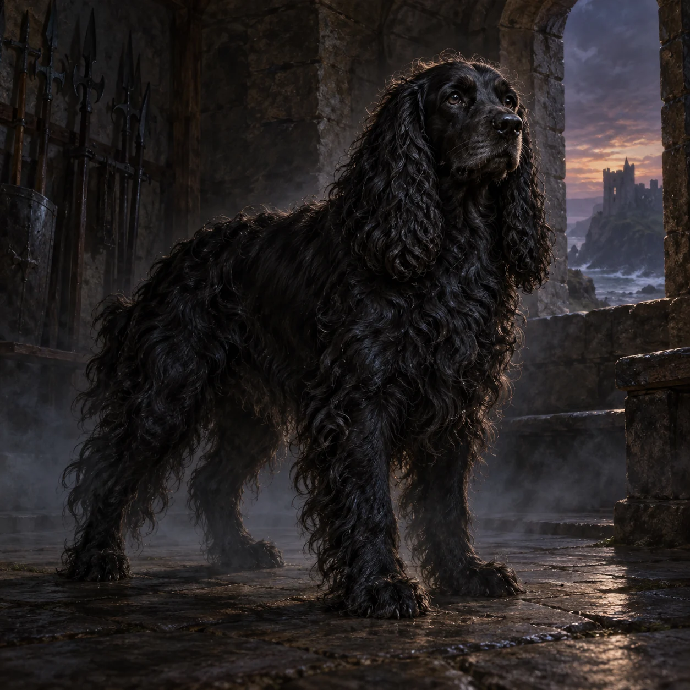
Sebelum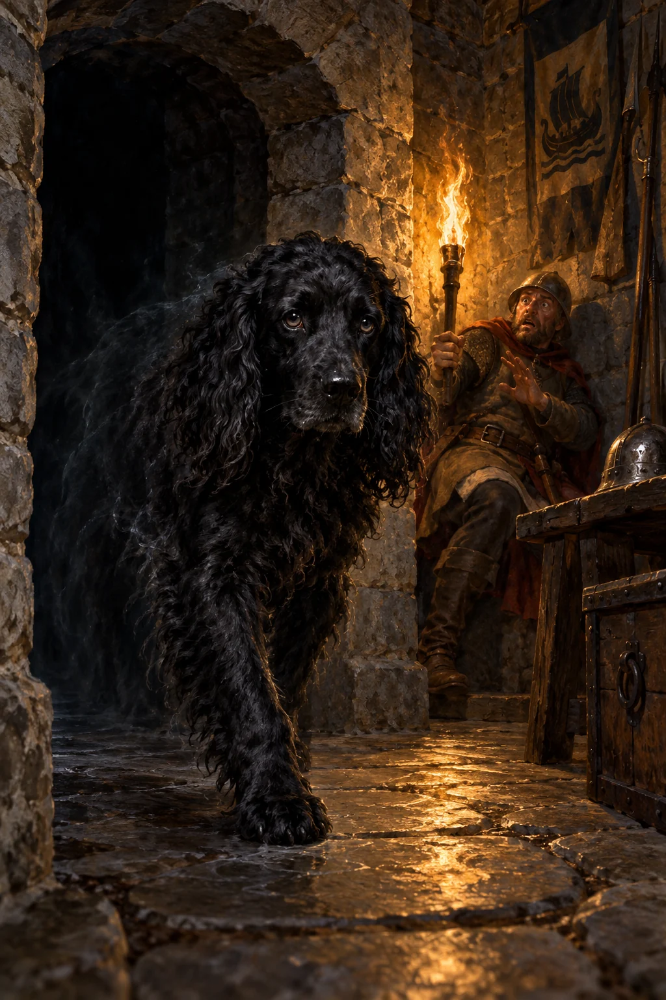
SetelahActive animal portrait is weak or lacks accepted specific-form support. Selected source-supported revision: Moddey Dhoo phantom black curly spaniel emerging from Peel Castle's narrow dark passage into the guard chamber. One black dog looms in foreground while a lone terrified watchman recoils beside a real torch at passage end. Its unnaturally still gaze and slightly transparent edge in deep shadows suggest documented phantom nature, no colored glow or extra monster anatomy. Natural dog legs, medieval watchman costume editorial.
Moddey Dhoo phantom black curly spaniel emerging from Peel Castle's narrow dark passage into the guard chamber. One black dog looms in foreground while a lone terrified watchman recoils beside a real torch at passage end. Its unnaturally still gaze and slightly transparent edge in deep shadows suggest documented phantom nature, no colored glow or extra monster anatomy. Natural dog legs, medieval watchman costume editorial.
Dasar sumber dan prompt
moddey-dhoo-c01, moddey-dhoo-c03, moddey-dhoo-c04, moddey-dhoo-c05
- Moddey Dhoo, anjing hitam (black dog) hantu folklor Manx, menghantui Kastel Peel (Peel Castle) di Pulau Man (Isle of Man). Moddey Dhoo (en)
- Menurut George Waldron, penyair dan topografer Inggris (English): spaniel hitam besar berbulu keriting di ruang jaga Kastel Peel. Moddey Dhoo (en)
- Datang dari lorong saat senja, kembali saat fajar. Moddey Dhoo (en)
- Penjaga mabuk kembali ketakutan dan mati tiga hari kemudian; lorong ditutup. Moddey Dhoo (en)
Pilihan artistik:
- Painterly composition
- Clothes, exact colors and scenery details editorial
Native individually viewed: Curly black spaniel emerges passage toward frightened watchman; translucent shadow edge reads phantom, no colored aura.
Use case: illustration-story. Asset: mythological creature education catalogue. Create one painterly realistic portrait 2:3, coherent rich brushwork and dramatic readable storytelling. No text or watermark. Moddey Dhoo phantom black curly spaniel emerging from Peel Castle's narrow dark passage into the guard chamber. One black dog looms in foreground while a lone terrified watchman recoils beside a real torch at passage end. Its unnaturally still gaze and slightly transparent edge in deep shadows suggest documented phantom nature, no colored glow or extra monster anatomy. Natural dog legs, medieval watchman costume editorial. No arbitrary glowing effects, colored mist, glyphs or ribbons.
Boobrie
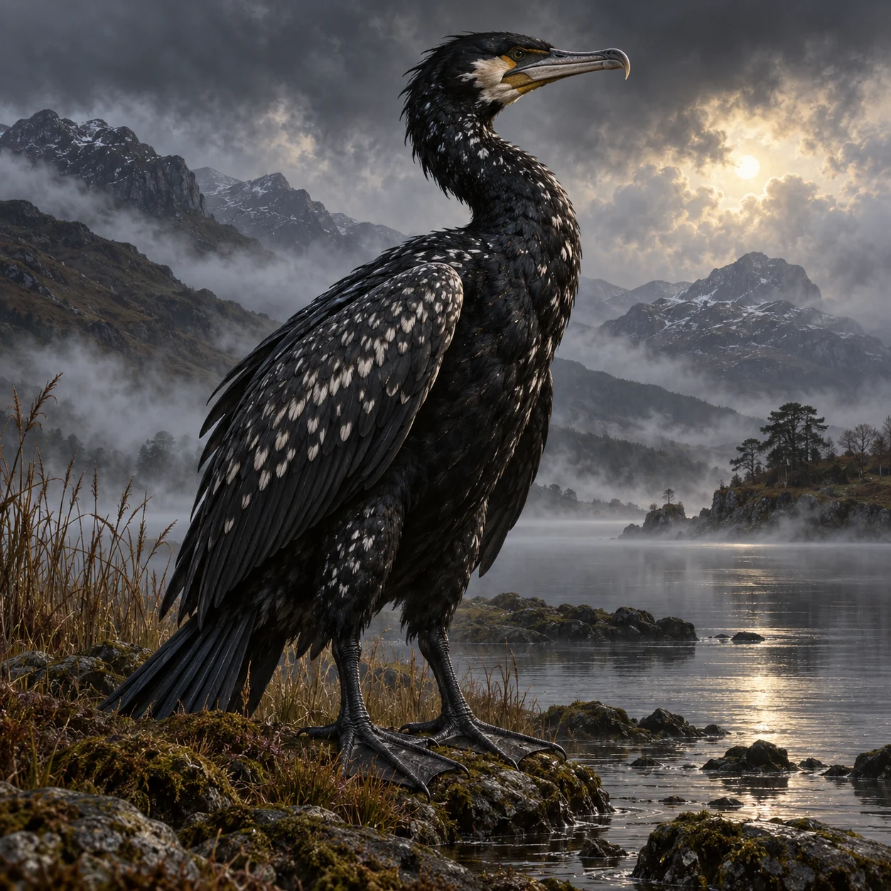
Sebelum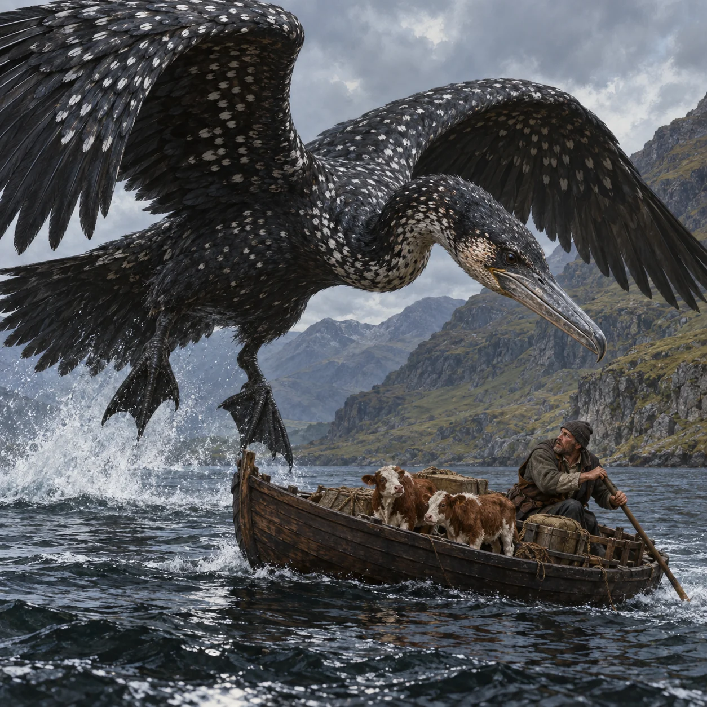
SetelahGiant white-spotted diving bird looms over cattle transported on boat
Giant white-spotted Boobrie confronting livestock on a boat
Dasar sumber dan prompt
boobrie-c01, boobrie-c06, boobrie-c08
- Boobrie pengubah wujud di danau (lochs) pantai barat Skotlandia (Scotland), burung air raksasa mirip kormoran atau great northern diver, juga banteng air; di Britania Raya. Boobrie (en)
- Burung laut raksasa mirip kormoran atau Plongeon huard, berbintik putih, melenguh, melahap domba dan sapi. Boobrie (fr)
- Memangsa ternak di kapal, terutama anak sapi; sangat gemar berang-berang. Boobrie (en)
Pilihan artistik:
- Painterly square composition
- Clothing, weather and exact setting details are editorial unless identified in claims
White-spotted giant diving bird dwarfs calves and boat; wing outer tips cropped but signature anatomy clear.
Create one square premium painterly mythological catalogue illustration. A GIANT BLACK DIVING BIRD shaped like a cormorant with WHITE SPOTS across its dark plumage looms above a small wooden cargo boat on a Scottish loch. Source-supported huge scale explicit: bird's long thick bill and head as long as a whole calf; wings arched broad over boat containing TWO calves and one fully clothed adult boatman. Calves alive, no attack contact or gore, boatman paddles urgently. Two bird legs, two wings, one head, normal diving-bird structure enlarged. Steep Highland shore. Myth episode of preying on livestock transported in ships shown as ominous encounter. Refined detailed naturalistic painting with strong readable composition and complete relevant silhouettes. No text, watermark, borders. No generic glow, luminous eyes, floating ribbons, magical mist, sparkles or added supernatural powers. Lighting physical and restrained; creature presence comes from documented form or episode.
Ceffyl Dŵr
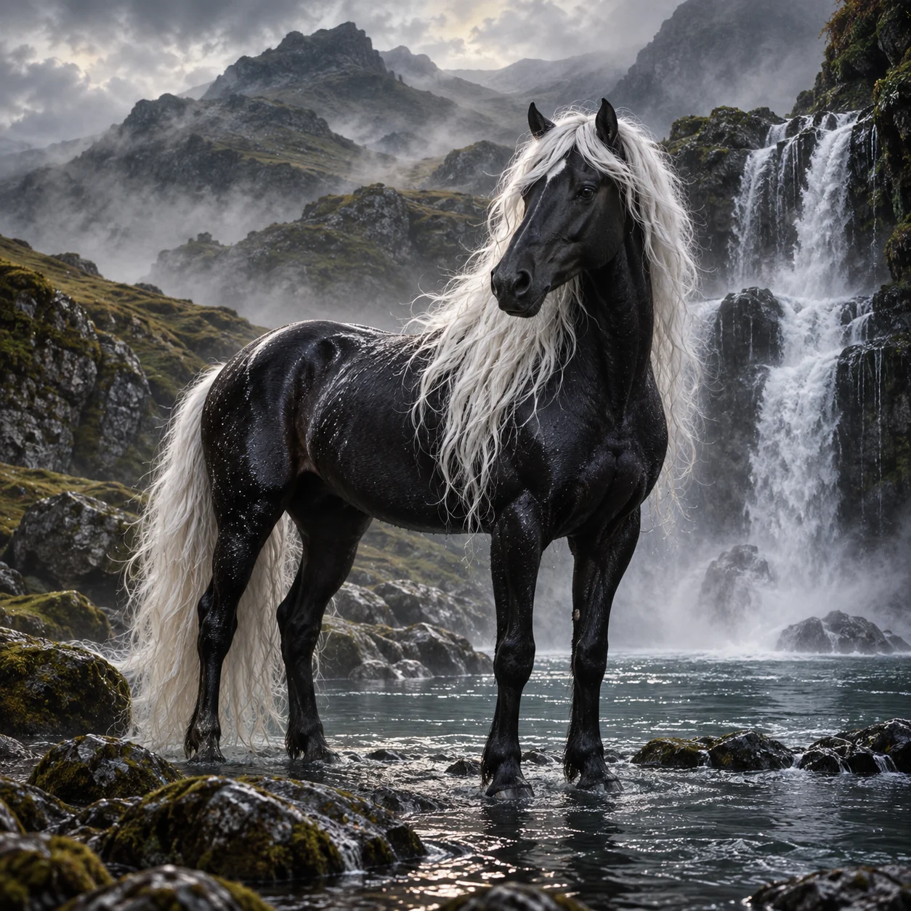
Sebelum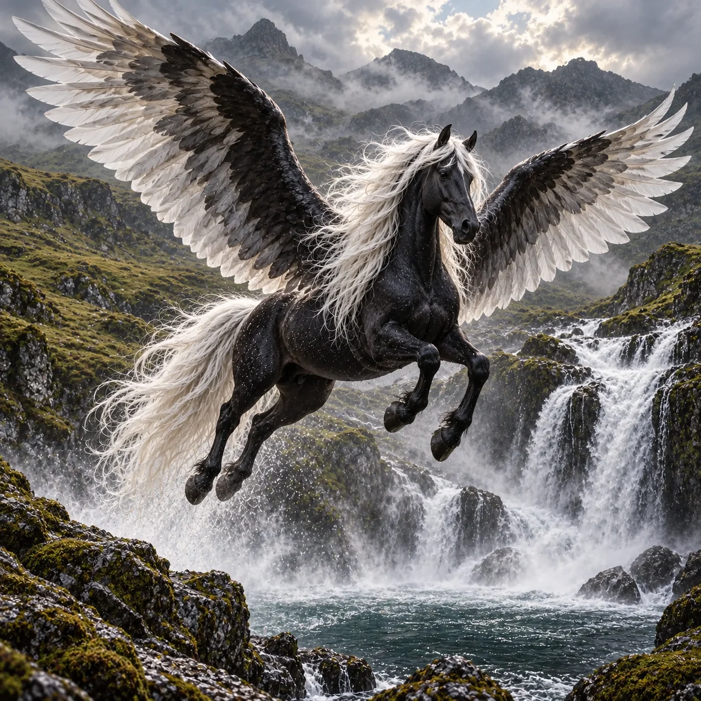
SetelahActive depiction reads as an ordinary animal or understates the documented mythical identity.
Ceffyl Dŵr in its explicitly recorded WINGED Welsh water-horse variant: a black horse with white mane, four natural horse legs and two broad feathered wings connected to shoulders, airborne above a mountain waterfall and deep pool. Use naturalistic feathers as artistic implementation of the source's wings, not a separate claim. Full silhouette with both wings clearly spread; horse has one head and one tail. No Pegasus borrowing except recorded wings; no glowing eyes or vaporbody.
Dasar sumber dan prompt
ceffyl-dwr-c02
- Menghuni kolam gunung dan air terjun; roh berwujud kuda kelabu atau hitam bersurai putih, kadang bersayap. Ceffyl Dŵr (en)
Pilihan artistik:
- Clothing, coat colours, human age/appearance, material ornament and environmental arrangement are editorial staging.
Winged black white-maned horse with four coherent legs flies over waterfall; source variant strong.
Ceffyl Dŵr in its explicitly recorded WINGED Welsh water-horse variant: a black horse with white mane, four natural horse legs and two broad feathered wings connected to shoulders, airborne above a mountain waterfall and deep pool. Use naturalistic feathers as artistic implementation of the source's wings, not a separate claim. Full silhouette with both wings clearly spread; horse has one head and one tail. No Pegasus borrowing except recorded wings; no glowing eyes or vaporbody. Separate revised illustration for a scholarly mythology catalogue. Detailed naturalistic painterly mythic scene, coherent anatomy, portrait or square composition. Identity must be visible through the cited documented variant/episode; no invented creature anatomy beyond the specified variant. No lettering, watermark, generic neon/aura/energy ribbons/magic smoke or glowing eyes. Clothing, colours and minor environmental staging are editorial choices.
Arkan sonney
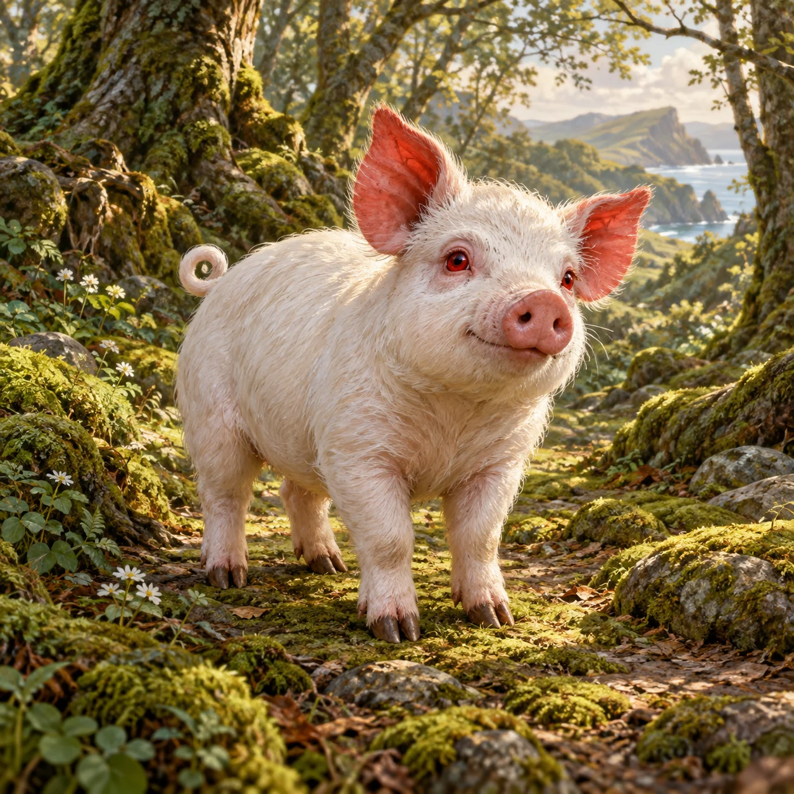
Sebelum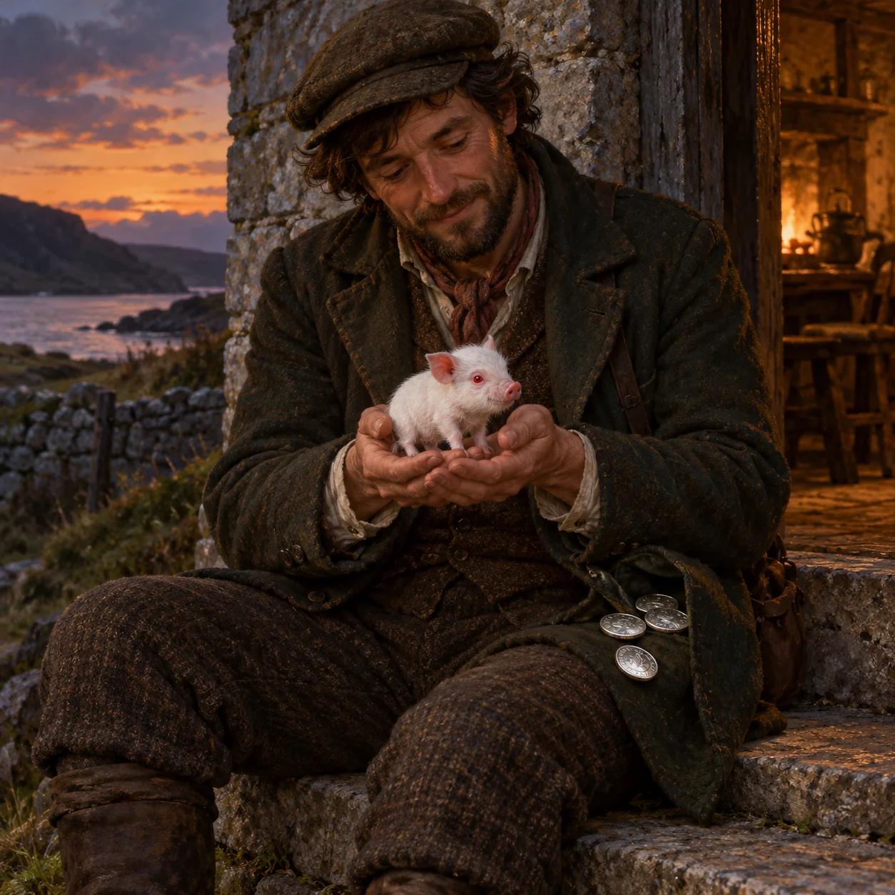
SetelahTiny white red-eared pig captured in adult hands beside silver coins
Small lucky Arkan Sonney captured beside silver coins
Dasar sumber dan prompt
arkan-sonney-c02, arkan-sonney-c03, arkan-sonney-c04
- Hewan peri berwujud babi putih pembawa keberuntungan; melihat lucky piggy pertanda baik. Arkan sonney (en)
- Menangkapnya: selalu ada koin perak di saku; menahan terlalu lama membawa sial. Arkan sonney (en)
- Fairy Tales From the Isle of Man (1951), Dora Broome: mata dan telinga merah, ubah ukuran bukan wujud. Arkan sonney (en)
Pilihan artistik:
- Painterly square composition
- Clothing, weather and exact setting details are editorial unless identified in claims
Tiny white pig with red eyes and ears in adult hands beside physical silver coins.
Create one square premium painterly mythological catalogue illustration. A VERY SMALL WHITE PIG with clearly RED EYES and small reddish ears is gently held in two cupped hands of a fully clothed ADULT Manx traveller, who sits at a stone cottage threshold. The traveller has THREE physical SILVER COINS spilling from an open coat pocket onto lap, emphasizing documented fortune from catching this lucky fairy pig. Pig coherent four tiny legs and one snout, no human face; source it can change size but not shape, so this tiny form supported. Natural dusk, coins reflect light only, no money materializing or glitter beam. Compose pig and hands central, adult face and pocket visible. Refined detailed naturalistic painting with strong readable composition and complete relevant silhouettes. No text, watermark, borders. No generic glow, luminous eyes, floating ribbons, magical mist, sparkles or added supernatural powers. Lighting physical and restrained; creature presence comes from documented form or episode.
Beast of Gévaudan
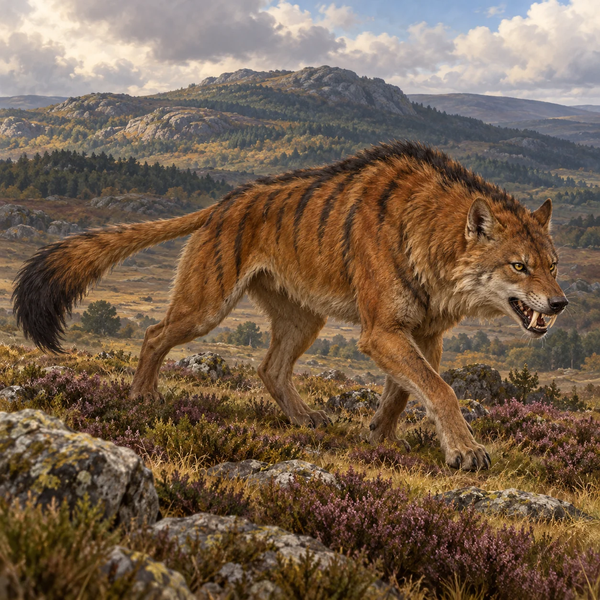
Sebelum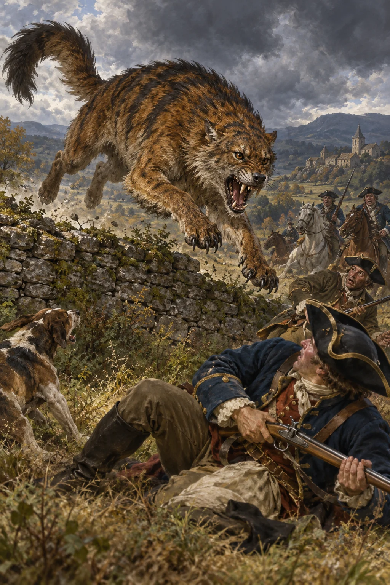
SetelahActive animal portrait is weak or lacks accepted specific-form support. Selected source-supported revision: Beast of Gevaudan, tawny russet dark-striped calf-sized beast with long tufted tail, bounds over a low stone wall toward terrified royal hunters. Clearly huge compared with men and horses farther back, emphasize high monstrous leap and historical hunt. Four coherent canid-like legs, one head and long tail, no invented horns or wings. French countryside, editorial eighteenth-century hunter garments, natural storm light, no gore or glow.
Beast of Gevaudan, tawny russet dark-striped calf-sized beast with long tufted tail, bounds over a low stone wall toward terrified royal hunters. Clearly huge compared with men and horses farther back, emphasize high monstrous leap and historical hunt. Four coherent canid-like legs, one head and long tail, no invented horns or wings. French countryside, editorial eighteenth-century hunter garments, natural storm light, no gore or glow.
Dasar sumber dan prompt
beast-of-gevaudan-c02, beast-of-gevaudan-c03, beast-of-gevaudan-c05
- Menurut saksi mata masa itu, serangan dilakukan satu atau lebih binatang berwarna cokelat kemerahan dengan belang gelap dan garis gelap di punggung, berekor lebih panjang daripada serigala dengan jumbai di ujungnya. Beast of Gévaudan (en)
- Ia menyerang dengan gigi dan cakar yang mengerikan, tampak sebesar anak sapi atau sapi, dan seolah terbang atau melompat melintasi ladang ke arah korbannya. Beast of Gévaudan (en)
- Kerajaan Prancis mengerahkan banyak dana dan tenaga untuk memburunya, termasuk bangsawan, tentara, pemburu kerajaan, dan warga. Beast of Gévaudan (en)
Pilihan artistik:
- Painterly composition
- Clothes, exact colors and scenery details editorial
Native individually viewed: Tawny russet dark-striped beast with long tufted tail bounds over wall at royal hunters, four legs and clawed paws; calf/cow scale reads in human comparison.
Use case: illustration-story. Asset: mythological creature education catalogue. Create one painterly realistic portrait 2:3, coherent rich brushwork and dramatic readable storytelling. No text or watermark. Beast of Gevaudan, tawny russet dark-striped calf-sized beast with long tufted tail, bounds over a low stone wall toward terrified royal hunters. Clearly huge compared with men and horses farther back, emphasize high monstrous leap and historical hunt. Four coherent canid-like legs, one head and long tail, no invented horns or wings. French countryside, editorial eighteenth-century hunter garments, natural storm light, no gore or glow. No arbitrary glowing effects, colored mist, glyphs or ribbons.
Erdhenne
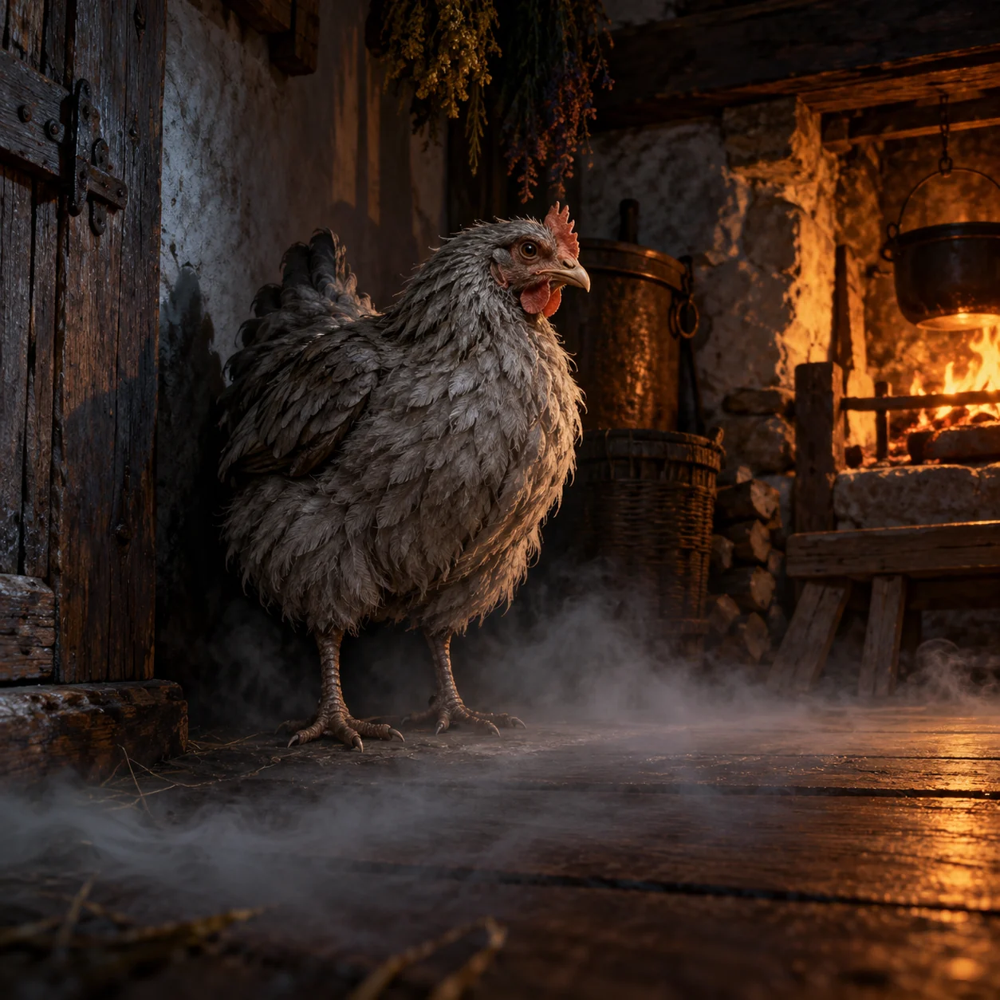
Sebelum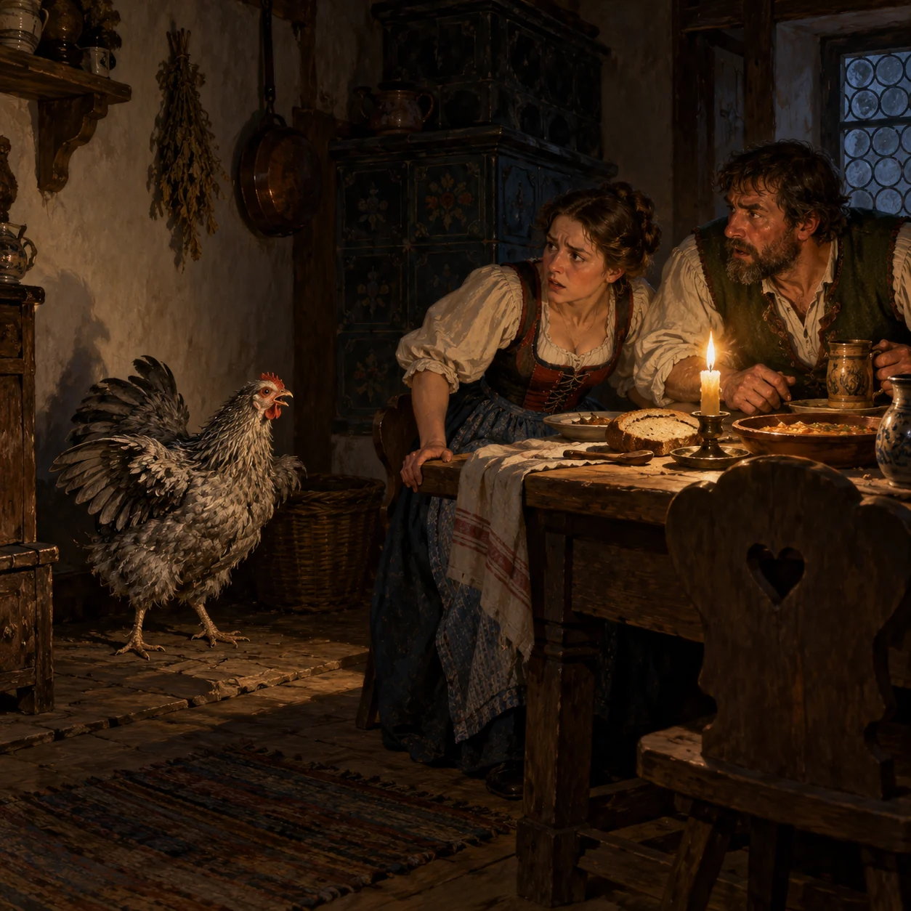
SetelahShaggy ash-grey hen clucks a warning while adults anxiously listen in room
Visible warning Erdhenne listened to by anxious household
Dasar sumber dan prompt
erdhenne-c02, erdhenne-c03, erdhenne-c04
- Erdhenne biasanya tak terlihat dan hanya berkotek keras seperti memanggil anak ayam untuk memperingatkan penghuni akan bahaya bagi mereka atau rumah; beberapa legenda menyebut ia menjawab pertanyaan tentang bahaya itu bila ditanya langsung. Erdhenne (en)
- Roh itu tampil sebagai ayam betina tua kelabu abu berbulu kusut berleher pendek; penampakannya meramalkan kematian dalam setahun, biasanya orang yang melihatnya; menurut legenda lain, bila ia berkotek dan mengepakkan sayap sembilan kali, kepala rumah tangga jatuh sakit parah. Erdhenne (en)
- Suara roh ini konon keluar dari tanah atau sudut gelap ruangan, terdengar seperti kotek induk ayam yang menuntun anak-anaknya, sehingga ia dinamai demikian; seperti Unke atau Hausotter (ular rumah), Erdhenne dianggap roh pelindung yang baik. Erdhenne (de)
Pilihan artistik:
- Painterly square composition
- Clothing, weather and exact setting details are editorial unless identified in claims
Ash-grey shaggy hen clucking with adults listening anxiously, warning episode.
Create one square premium painterly mythological catalogue illustration. An old ASH-GREY SHAGGY SHORT-NECKED HEN stands in a dark corner of a Bavarian cottage room, wings partly spread and beak open in ominous CLUCKING. TWO clothed ADULT householders abruptly stop supper and lean toward the hen with fearful attentive faces. Hen lit dimly by one physical candle, adults and their table clearly visible. Its documented visible appearance and warning call omen establish myth context. Normal hen anatomy, do not invent glowing eyes or magical body. No illness injuries or funeral. Detailed naturalistic painting with powerful readable mythic identity, complete relevant anatomy, physical restrained light. No text, logos or borders. No generic glow, luminous eyes, floating ribbons, magical mist, sparkles or unsupported powers.
Each-uisge
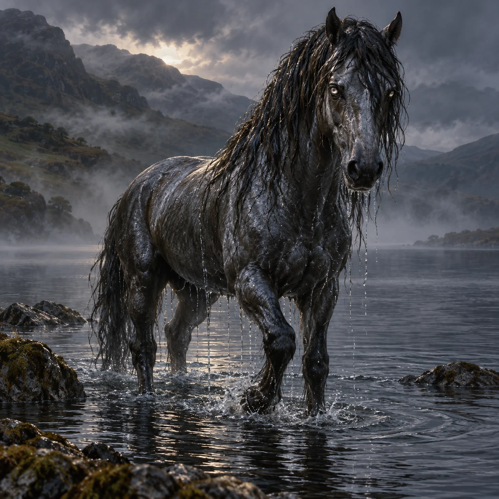
Sebelum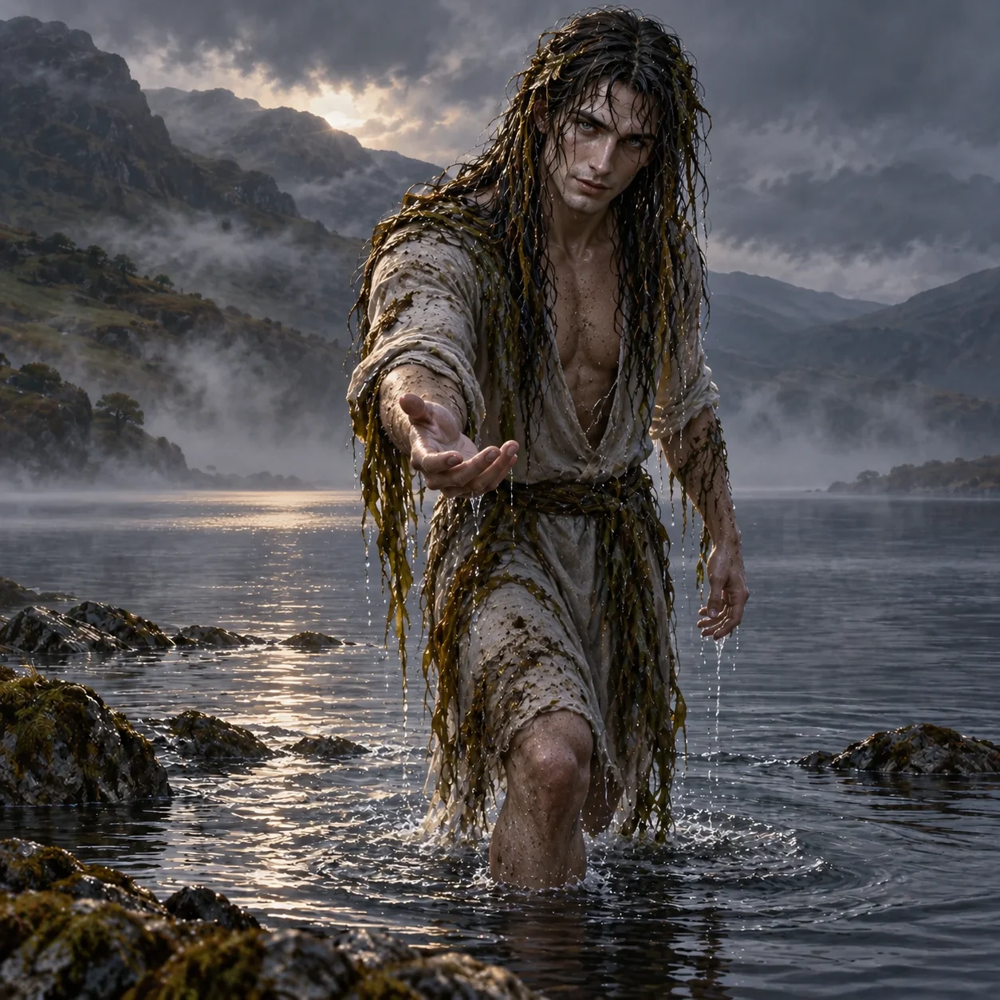
SetelahActive depiction reads as an ordinary animal or understates the documented mythical identity.
Replace horse with documented handsome HUMAN manifestation, visibly dripping waterweed, sand and mud caught in hair, beside Scottish loch. Human head/torso/twoarms/twolegs, human feet (do not borrow Kelpie hooves). He beckons to a wary traveler with source clue waterweeds clearly noticeable. Simple wet tunic editorial; no borrowed animal organs.
Dasar sumber dan prompt
each-uisge-c03, each-uisge-c05
- Each-uisge tinggal di laut dan loch air asin dan tawar di Dataran Tinggi Skotlandia (Scottish Highlands), dan berubah wujud jadi kuda, poni, lelaki tampan, atau burung raksasa. Each-uisge (en)
- Dalam wujud manusia dikenali dari rumput air atau pasir dan lumpur di rambutnya. Each-uisge (en)
Pilihan artistik:
- Colours, human age/appearance, clothing, supporting props and scene arrangement are editorial staging rather than unique attested iconography.
Human manifestation with conspicuous waterweeds and mud tangled in hair emerges from loch; two human arms, no borrowed animal parts.
Each-uisge: Replace horse with documented handsome HUMAN manifestation, visibly dripping waterweed, sand and mud caught in hair, beside Scottish loch. Human head/torso/twoarms/twolegs, human feet (do not borrow Kelpie hooves). He beckons to a wary traveler with source clue waterweeds clearly noticeable. Simple wet tunic editorial; no borrowed animal organs. Separate revised catalogue folklore illustration, painterly naturalistic detailed dramatic scene. Use only specified documented variant, don't combine alternatives. Clothing,colours,age and supporting layout editorial. Coherent anatomy and clear mythic identity at small viewing scale. No text/watermark/neon/aura/energy ribbons/generic mist or smoke; only source-specific restrained effect when explicitly requested.
Zouyu
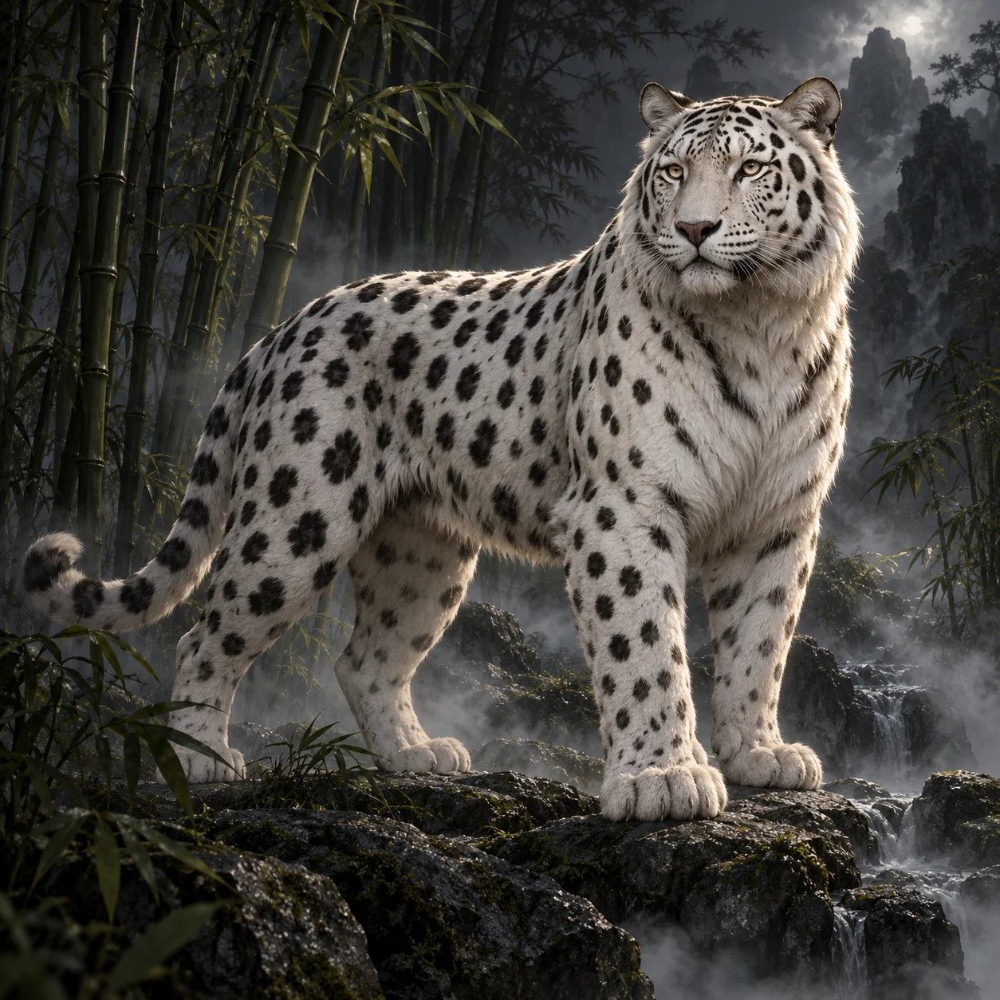
Sebelum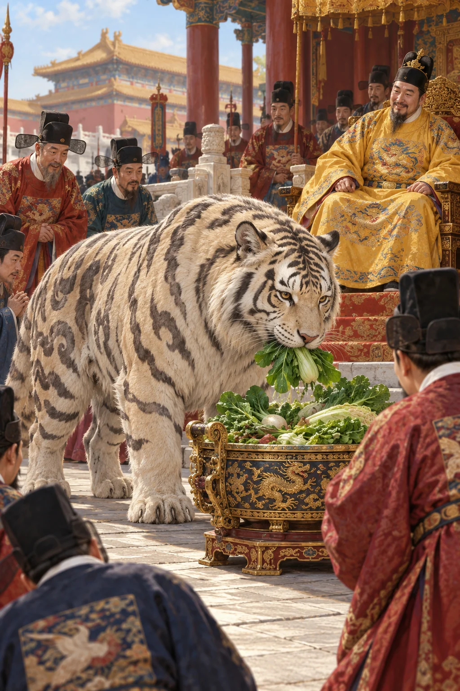
SetelahActive animal portrait is weak or lacks accepted specific-form support. Selected source-supported revision: Zouyu, gentle vegetarian tiger-like auspicious animal presented before the Yongle imperial court: powerful tiger-like creature calmly chews leafy vegetables from a ceremonial basket while richly clothed Chinese courtiers and benevolent ruler watch in wonder, the animal's harmless vegetarian act is unmistakable. Natural tiger anatomy without extra limbs, editorial pale coat and dark pattern, courtyard architecture and robes editorial. No glow, no ordinary wildlife background.
Zouyu, gentle vegetarian tiger-like auspicious animal presented before the Yongle imperial court: powerful tiger-like creature calmly chews leafy vegetables from a ceremonial basket while richly clothed Chinese courtiers and benevolent ruler watch in wonder, the animal's harmless vegetarian act is unmistakable. Natural tiger anatomy without extra limbs, editorial pale coat and dark pattern, courtyard architecture and robes editorial. No glow, no ordinary wildlife background.
Dasar sumber dan prompt
zouyu-c03, zouyu-c04, zouyu-c05
- Kisah menggambarkannya sebagai hewan baik yang muncul pada pemerintahan penguasa berbudi. Zouyu (en)
- Zouyu berwajah garang seperti harimau, tetapi lembut dan hanya memakan tumbuhan. Zouyu (en)
- Pada 1404, Zhu Su mengirim makhluk yang disebut Zouyu kepada Kaisar Yongle. Zouyu (en)
Pilihan artistik:
- Painterly composition
- Clothes, exact colors and scenery details editorial
Native individually viewed: Tiger-like animal calmly eats vegetables presented before Chinese emperor/courtiers; vegetarian auspicious role clear.
Use case: illustration-story. Asset: mythological creature education catalogue. Create one painterly realistic portrait 2:3, coherent rich brushwork and dramatic readable storytelling. No text or watermark. Zouyu, gentle vegetarian tiger-like auspicious animal presented before the Yongle imperial court: powerful tiger-like creature calmly chews leafy vegetables from a ceremonial basket while richly clothed Chinese courtiers and benevolent ruler watch in wonder, the animal's harmless vegetarian act is unmistakable. Natural tiger anatomy without extra limbs, editorial pale coat and dark pattern, courtyard architecture and robes editorial. No glow, no ordinary wildlife background. No arbitrary glowing effects, colored mist, glyphs or ribbons.
Otso
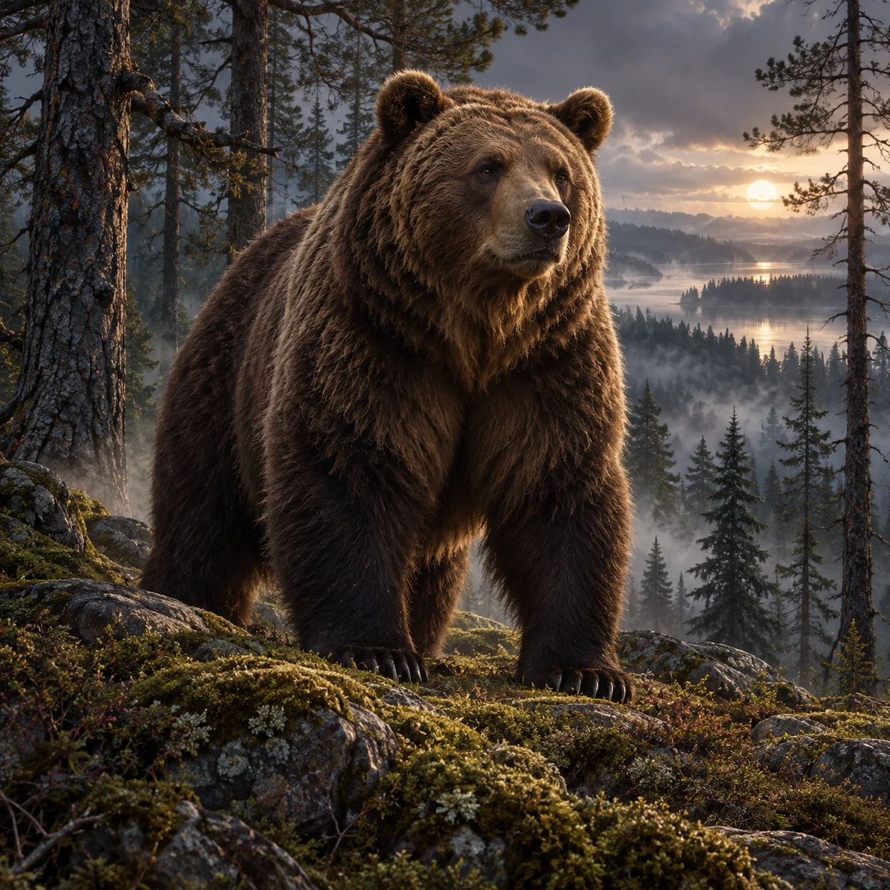
Sebelum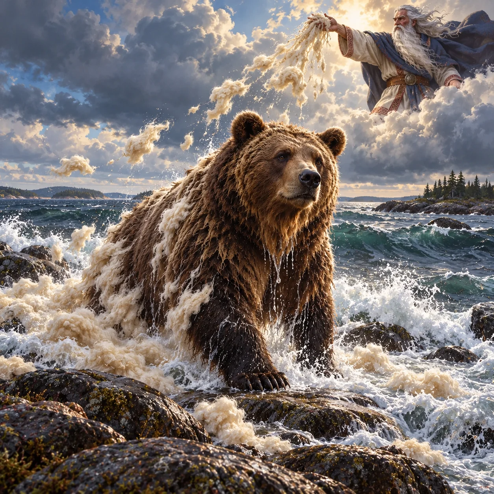
SetelahActive depiction reads as an ordinary animal or understates the documented mythical identity.
Otso sacred Finnish bear in the recorded creation episode: Ukko has thrown wool into sea and the bear comes into being from bits of wool reaching shore. Show natural bear rising on rocky surf shore, its damp fur transitioning from floating tufts of pale wool clustered below; high above a distant human-shaped weather god tosses wool into waves. This is mythic creation, not wildlifephoto. Ukko's age/clothes editorial. No starlight variantmixed, no antlers, wings, aura.
Dasar sumber dan prompt
otso-c03
- Sebagian kisah menyebut Ukko, dewa cuaca, melemparkan wol ke laut dan Otso lahir dari serpihan wol yang terdampar di pantai; kisah lain menyebut Otso lahir dari rasi bintang Biduk (Ursa Major). Otso (en)
Pilihan artistik:
- Colours, human age/appearance, clothing, supporting props and scene arrangement are editorial staging rather than unique attested iconography.
Natural bear emerges amid wool at sea shore while Ukko throws wool above; recorded creation episode rendered withoutgeneric aura.
Otso: Otso sacred Finnish bear in the recorded creation episode: Ukko has thrown wool into sea and the bear comes into being from bits of wool reaching shore. Show natural bear rising on rocky surf shore, its damp fur transitioning from floating tufts of pale wool clustered below; high above a distant human-shaped weather god tosses wool into waves. This is mythic creation, not wildlifephoto. Ukko's age/clothes editorial. No starlight variantmixed, no antlers, wings, aura. Separate revised catalogue folklore illustration, painterly naturalistic detailed dramatic scene. Use only specified documented variant, don't combine alternatives. Clothing,colours,age and supporting layout editorial. Coherent anatomy and clear mythic identity at small viewing scale. No text/watermark/neon/aura/energy ribbons/generic mist or smoke; only source-specific restrained effect when explicitly requested.
Henwen
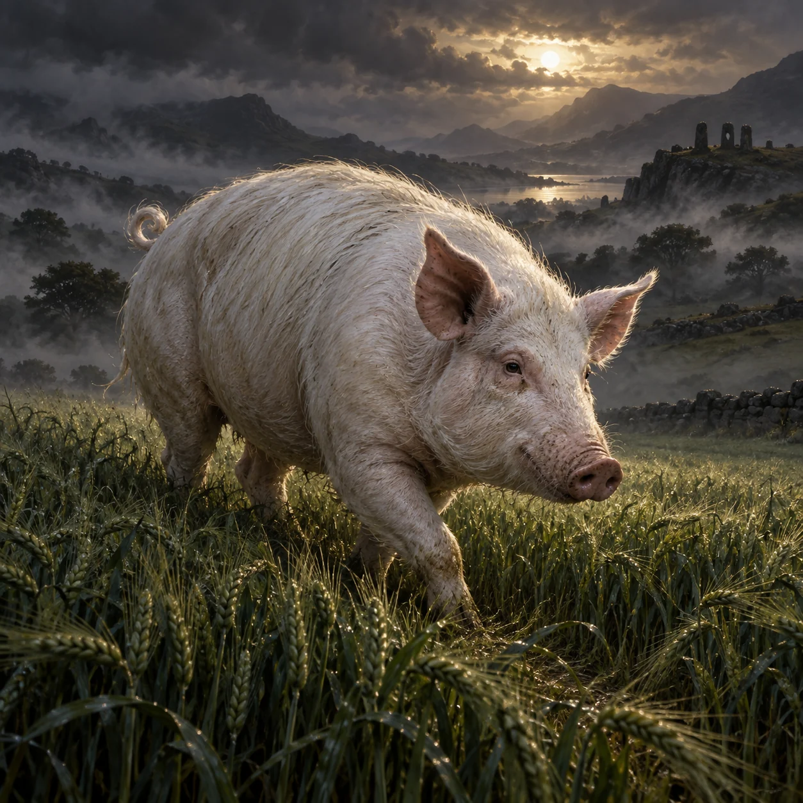
Sebelum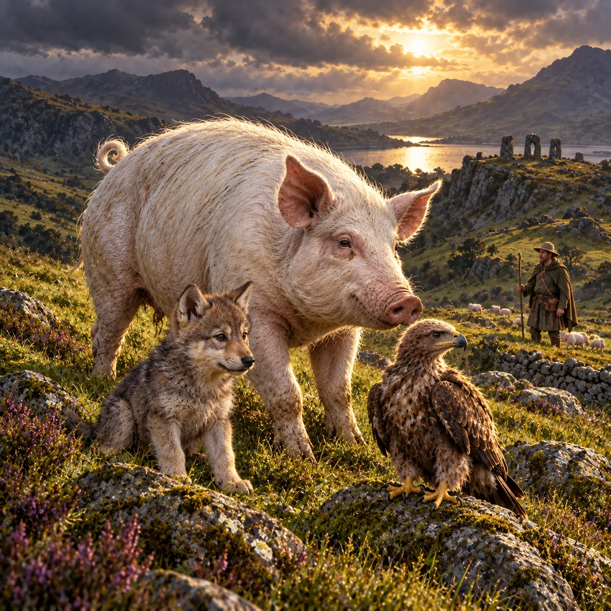
SetelahActive depiction reads as an ordinary animal or understates the documented mythical identity.
Natural white sow Henwen on Snowdonia Hill of Cyferthwch with the distinctly non-porcine progeny recorded there: tiny wolf cub and eaglet just beside her, alert peaceful family after miraculous birth; no birthprocess or gore. Dominant sow, cub and eaglet clearly separated and distinct. Swineherd distant contextual human. Four normal piglegs/nohybrid.
Dasar sumber dan prompt
henwen-c02, henwen-c07
- Three Powerful Swineherds of the Isle of Britain: dipelihara Coll putra Collfrewy untuk Dallwyr Dallben; Lembah Dallwyr (Glen of Dallwyr), Cornwall. Henwen (en)
- Di bukit Cyferthwch, Snowdonia: anak serigala dan anak elang; di Llanfair, Arfon, di bawah Batu Hitam: anak kucing. Henwen (en)
Pilihan artistik:
- Colours, human age/appearance, clothing, supporting props and scene arrangement are editorial staging rather than unique attested iconography.
Natural white sow with distinct wolf cub and eaglet, source-recorded miraculous progeny; no birthing gore.
Henwen: Natural white sow Henwen on Snowdonia Hill of Cyferthwch with the distinctly non-porcine progeny recorded there: tiny wolf cub and eaglet just beside her, alert peaceful family after miraculous birth; no birthprocess or gore. Dominant sow, cub and eaglet clearly separated and distinct. Swineherd distant contextual human. Four normal piglegs/nohybrid. Separate revised catalogue folklore illustration, painterly naturalistic detailed dramatic scene. Use only specified documented variant, don't combine alternatives. Clothing,colours,age and supporting layout editorial. Coherent anatomy and clear mythic identity at small viewing scale. No text/watermark/neon/aura/energy ribbons/generic mist or smoke; only source-specific restrained effect when explicitly requested.
Feldgeister
SebelumSetelah
Human Corn Mother beside last wheat stalks and harvest corn doll
Human-shaped Corn Mother among the last harvest stalks
Dasar sumber dan prompt
feldgeister-c01, feldgeister-c03, feldgeister-c07
- Feldgeister (Feldgeist, Korndämonen) adalah roh gandum dalam cerita rakyat Jerman yang sering juga roh angin; saat panen mereka lari makin dalam ke ladang, terperangkap di batang terakhir, lalu dibunuh dengan dipotong atau diirik, atau dibawa ke desa dengan upacara sebagai boneka gandum; sentuhan langsung menyebabkan sakit. Feldgeister (en)
- Roggenwolf ("serigala gandum hitam") adalah roh ladang berwujud serigala yang mencuri dan memakan anak-anak; contoh lain mencakup Roggenmuhme, Hafermann, dan Kornkind yang berwujud manusia. Feldgeister (en)
- Kehadiran setan gandum terlihat pada gandum yang bergelombang dan tercermin dalam ungkapan seperti "Ibu Gandum (Kornmutter) ada di ladang" (Corn Mother). Korndämon (de)
Pilihan artistik:
- Painterly square composition
- Clothing, weather and exact setting details are editorial unless identified in claims
Human CornMother stands in last grain with physical corn doll, no fabricated plant anatomy.
Create one square premium painterly mythological catalogue illustration. A HUMAN-SHAPED FEMALE CORN MOTHER, a German field spirit, stands within the LAST UNCUT CLUSTER of ripe rye stalks in a mostly harvested field. Adult woman with human face, hands and feet, stern timeless expression, opaque simple earth-colored robe. No wolf head or fur. A small woven CORN DOLL rests prominently beside last sheaf, a distant adult harvester watches uneasily holding sickle down safely. Wind bends the stalks around her, source corn spirits retreat to last stalks and grain swaying shows CornMother. Clothing is editorial; no plant-skin or fabricated crown. Detailed naturalistic painting with powerful readable mythic identity, complete relevant anatomy, physical restrained light. No text, logos or borders. No generic glow, luminous eyes, floating ribbons, magical mist, sparkles or unsupported powers.
Nobusuma
SebelumSetelah
Active depiction reads as an ordinary animal or understates the documented mythical identity.
Nobusuma flying-squirrel yōkai in recorded fire-breathing variant: natural gliding squirrel with membranes stretched between four limbs, one bushy tail, emits a SMALL clear orange flame from its mouth over an Edo woodland footpath. Restrained actual flame only supportedmagic; no glowing entirebody, no dragonwings/horns or extralimbs.
Dasar sumber dan prompt
nobusuma-c02, nobusuma-c06
- Kisahnya berbeda antara kelelawar yang berubah dan tupai terbang. Nobusuma (en)
- Satu gambaran memberinya perilaku memakan dan menyemburkan api. Nobusuma (en)
Pilihan artistik:
- Colours, human age/appearance, clothing, supporting props and scene arrangement are editorial staging rather than unique attested iconography.
Coherent flying-squirrel gliding anatomy with small source-supported firebreath; no borrowed dragon organs.
Nobusuma: Nobusuma flying-squirrel yōkai in recorded fire-breathing variant: natural gliding squirrel with membranes stretched between four limbs, one bushy tail, emits a SMALL clear orange flame from its mouth over an Edo woodland footpath. Restrained actual flame only supportedmagic; no glowing entirebody, no dragonwings/horns or extralimbs. Separate revised catalogue folklore illustration, painterly naturalistic detailed dramatic scene. Use only specified documented variant, don't combine alternatives. Clothing,colours,age and supporting layout editorial. Coherent anatomy and clear mythic identity at small viewing scale. No text/watermark/neon/aura/energy ribbons/generic mist or smoke; only source-specific restrained effect when explicitly requested.
Heimchen
SebelumSetelah
Active depiction reads as an ordinary animal or understates the documented mythical identity.
Replace plain cricket with recorded Orlagau finger-tall earth spirit/dwarf living in household mousehole: tiny human-shaped manikin carries a wrapped dawn gift from mouse-hole, visibly smaller than adjacent adult human finger reaching near doorway and sewingthimble. Exactly humanhead/twoarms/twolegs, plain miniature clothes. Scale essential, no insectorgans. House stonefloor at dawn, curious adult hand only.
Dasar sumber dan prompt
heimchen-c10, heimchen-c11
- Di Orlagau, Thuringia, Heimchen, juga disebut Heimele, Butzelmännchen, dan Erdmännele, dianggap roh tanah setinggi jari yang tinggal di lubang tikus rumah. Heimchen (en)
- Mereka memberi tanda lebih dahulu apakah penghuni rumah akan beruntung atau sial, dan bila dirawat baik kadang meninggalkan hadiah. Heimchen (en)
Pilihan artistik:
- Colours, human age/appearance, clothing, supporting props and scene arrangement are editorial staging rather than unique attested iconography.
Human-shaped tiny gift-bearing spirit beside house mousehole, adult finger and thimble establish fingerheight; no cricket organs.
Heimchen: Replace plain cricket with recorded Orlagau finger-tall earth spirit/dwarf living in household mousehole: tiny human-shaped manikin carries a wrapped dawn gift from mouse-hole, visibly smaller than adjacent adult human finger reaching near doorway and sewingthimble. Exactly humanhead/twoarms/twolegs, plain miniature clothes. Scale essential, no insectorgans. House stonefloor at dawn, curious adult hand only. Separate revised catalogue folklore illustration, painterly naturalistic detailed dramatic scene. Use only specified documented variant, don't combine alternatives. Clothing,colours,age and supporting layout editorial. Coherent anatomy and clear mythic identity at small viewing scale. No text/watermark/neon/aura/energy ribbons/generic mist or smoke; only source-specific restrained effect when explicitly requested.
Nāga
SebelumSetelah
Active depiction reads as an ordinary animal or understates the documented mythical identity.
Naga in the recorded mixed human-and-serpent variant, guarding subterranean gems and gold by water: regal human head, two human arms and human upper torso, lower body becoming one long cobra-scaled serpentine tail coiled on stone before treasure-filled cave. Clearly hybrid human torso and serpent coils, no human legs or extra snake heads; no claim of exact unique costume, cloth drape and modest ornaments are artistic staging. Natural warm light reflects from treasure and flowing water. Do not keep a plain cobra portrait.
Dasar sumber dan prompt
naga-c03, naga-c10, naga-c11
- Mereka dapat tampil sebagai manusia, ular, atau makhluk campuran manusia dan ular. Nāga (en)
- Alam Naga-loka digambarkan berisi permata, emas, dan harta bumi. Nāga (en)
- Naga dikaitkan dengan sungai, danau, laut, dan sumur serta peran penjaga harta. Nāga (en)
Pilihan artistik:
- Clothing, coat colours, human age/appearance, material ornament and environmental arrangement are editorial staging.
- Cobra staff, diadem and jewelry are editorial ornaments; serpent head on staff is a carved prop.
Human woman upper torso with two arms and one coiling serpent lower body; treasure guarding mixed form. Cobra staff and ornate diadem are editorial ornament, not added living heads.
Naga in the recorded mixed human-and-serpent variant, guarding subterranean gems and gold by water: regal human head, two human arms and human upper torso, lower body becoming one long cobra-scaled serpentine tail coiled on stone before treasure-filled cave. Clearly hybrid human torso and serpent coils, no human legs or extra snake heads; no claim of exact unique costume, cloth drape and modest ornaments are artistic staging. Natural warm light reflects from treasure and flowing water. Do not keep a plain cobra portrait. Separate revised illustration for a scholarly mythology catalogue. Detailed naturalistic painterly mythic scene, coherent anatomy, portrait or square composition. Identity must be visible through the cited documented variant/episode; no invented creature anatomy beyond the specified variant. No lettering, watermark, generic neon/aura/energy ribbons/magic smoke or glowing eyes. Clothing, colours and minor environmental staging are editorial choices.
Kelpie
SebelumSetelah
Active depiction reads as an ordinary animal or understates the documented mythical identity.
Kelpie in the explicitly recorded human manifestation RETAINING HORSE HOOVES: a handsome pale man with human head, torso and two human arms in a wet simple linen tunic and cloak, standing beside a Scottish loch. His two legs end in unmistakable SINGLE HORSE HOOVES instead of feet, both unobscured by garments, full-body view. Wet dark hair, unsettling intent toward a distant lone traveler; no horse head, no centaur body, no extra legs, no cloven goat hooves. Human guise retaining equine hoof clue is essential.
Dasar sumber dan prompt
kelpie-c02, kelpie-c04
- Kelpie digambarkan seperti kuda kelabu atau putih yang dapat berwujud manusia, tetap berkuku, sehingga dikaitkan dengan Setan (Satan) oleh Robert Burns dalam Address to the Devil (1786). Kelpie (en)
- Kisah kelpie berguna menjauhkan anak dari perairan berbahaya dan memperingatkan perempuan muda terhadap orang asing tampan. Kelpie (en)
Pilihan artistik:
- Clothing, coat colours, human age/appearance, material ornament and environmental arrangement are editorial staging.
Human torso/head/arms with exactly two unmistakable equine hooves, wet clothes beside loch; no goat hooves or horse head.
Kelpie in the explicitly recorded human manifestation RETAINING HORSE HOOVES: a handsome pale man with human head, torso and two human arms in a wet simple linen tunic and cloak, standing beside a Scottish loch. His two legs end in unmistakable SINGLE HORSE HOOVES instead of feet, both unobscured by garments, full-body view. Wet dark hair, unsettling intent toward a distant lone traveler; no horse head, no centaur body, no extra legs, no cloven goat hooves. Human guise retaining equine hoof clue is essential. Separate revised illustration for a scholarly mythology catalogue. Detailed naturalistic painterly mythic scene, coherent anatomy, portrait or square composition. Identity must be visible through the cited documented variant/episode; no invented creature anatomy beyond the specified variant. No lettering, watermark, generic neon/aura/energy ribbons/magic smoke or glowing eyes. Clothing, colours and minor environmental staging are editorial choices.
Familiar
SebelumSetelah
Active depiction reads as an ordinary animal or understates the documented mythical identity.
An animal-form familiar actively helping a witch with divination: the foreground tabby cat places its paw on one chosen wooden divination token while a human woman studies the tokens and consults an open manuscript beside it in a candlelit cottage. Make the purposeful cooperation and witch's attentive response the narrative focus. Natural cat anatomy, one head, four legs and one tail. Neither a simple pet portrait nor generic sinister glowing eyes.
Dasar sumber dan prompt
familiar-c01, familiar-c02, familiar-c04
- Dalam cerita rakyat Eropa (European folklore), familiar (familiar spirits) adalah makhluk gaib yang melindungi atau membantu penyihir dan cunning folk dalam sihir dan ramalan. Familiar (en)
- Familiar dapat muncul dalam banyak wujud, biasanya hewan, kadang manusia. Familiar (en)
- Tujuan utama familiar melayani dan melindungi penyihir. Familiar (en)
Pilihan artistik:
- Composition, physical color, human staging and props are editorial illustration choices.
Natural tabby actively selects a divination token while a witch consults a manuscript; cooperation makes familiar identity readable. Token glyphs and manuscript marks are editorial props, not added lore.
An animal-form familiar actively helping a witch with divination: the foreground tabby cat places its paw on one chosen wooden divination token while a human woman studies the tokens and consults an open manuscript beside it in a candlelit cottage. Make the purposeful cooperation and witch's attentive response the narrative focus. Natural cat anatomy, one head, four legs and one tail. Neither a simple pet portrait nor generic sinister glowing eyes. Edit the reference into a complete mythological narrative illustration. Square composition, detailed restrained painterly realism, clear main creature and readable scene. Preserve correct anatomy unless the documented alternative form is explicitly selected. No text, lettering, watermark, frame, decorative glowing aura, neon, magical ribbons, generic mist or smoke. Natural environmental light only except explicitly described source magic. Secondary people, clothing and staging are artistic choices, not new creature lore.
Hamsa (bird)
SebelumSetelah
Active animal portrait is weak or lacks accepted specific-form support. Selected source-supported revision: Hamsa as the documented sacred swan mount of Saraswati: immense white swan carries one fully clothed seated adult female deity over calm primordial water, clear divine rider riding upon its back, two ordinary wings spread. Seated serene human woman in opaque ivory and warm-gold cloth, no invented extra arms or heads, no instrument because those details are not supplied. Sacred mount relationship is focus. Swan has normal avian anatomy, no glow, editorial deity costume and sunset light.
Hamsa as the documented sacred swan mount of Saraswati: immense white swan carries one fully clothed seated adult female deity over calm primordial water, clear divine rider riding upon its back, two ordinary wings spread. Seated serene human woman in opaque ivory and warm-gold cloth, no invented extra arms or heads, no instrument because those details are not supplied. Sacred mount relationship is focus. Swan has normal avian anatomy, no glow, editorial deity costume and sunset light.
Dasar sumber dan prompt
hamsa-bird-c03, hamsa-bird-c04
- Ia dikaitkan dengan kemampuan mitos memisahkan susu dari campuran susu dan air. Hamsa (bird) (en)
- Dalam ikonografi ia menjadi kendaraan Brahma, Gayatri, Saraswati, dan Vishvakarma. Hamsa (bird) (en)
Pilihan artistik:
- Painterly composition
- Clothes, exact colors and scenery details editorial
Native individually viewed: White swan carries clothed female deity, human hands and ordinary avian wings coherent; mount relationship unmistakable.
Use case: illustration-story. Asset: mythological creature education catalogue. Create one painterly realistic portrait 2:3, coherent rich brushwork and dramatic readable storytelling. No text or watermark. Hamsa as the documented sacred swan mount of Saraswati: immense white swan carries one fully clothed seated adult female deity over calm primordial water, clear divine rider riding upon its back, two ordinary wings spread. Seated serene human woman in opaque ivory and warm-gold cloth, no invented extra arms or heads, no instrument because those details are not supplied. Sacred mount relationship is focus. Swan has normal avian anatomy, no glow, editorial deity costume and sunset light. No arbitrary glowing effects, colored mist, glyphs or ribbons.
Nongshāba
SebelumSetelah
Active depiction reads as an ordinary animal or understates the documented mythical identity.
Nongshaba, the Meitei lion god, producing primordial light and making the sun. A mighty anatomically leonine figure stands at the edge of a vast dark primordial world; immediately above his upturned roaring muzzle a small newly formed sun is emerging, illuminating the untouched earth for the first time. The sun itself supplies the only divine light, clearly linked to the lion's creation gesture; restrained warm physical sunlight, no beam or surrounding aura. No human-headed hybrid or wings.
Dasar sumber dan prompt
nongshaba-c01, nongshaba-c03
- Nongshaba adalah dewa singa dalam Sanamahism dan mitologi Meitei. Nongshāba (en)
- Ia dipercaya menghasilkan cahaya primordial dan membuat matahari. Nongshāba (en)
Pilihan artistik:
- Composition, physical environment and human props are illustration choices.
One new sun above leonine creator; duplicate horizon sun removed. Restrained light from source-recorded creation of sun, no generic aura.
Correct this Nongshaba creation illustration: keep the lion god and the single bright new sun directly above his roaring muzzle. REMOVE the second sun at the right-hand distant horizon and its sunset reflection. That part of the horizon should be dim, empty primordial landscape. Exactly ONE sun anywhere in the image. Source nongshaba-c01 lion god and c03 he produces primordial light and makes the sun. Preserve lion anatomy, stars, and restrained painterly illustration. No text or aura.
Bennu
SebelumSetelah
Active animal portrait is weak or lacks accepted specific-form support. Selected source-supported revision: Bennu grey great heron at the very beginning of creation: one great heron with opened beak in its world-creating cry, wings fully extended over the endless black primordial waters of Nun before any land, the first pale sunrise opens the vast horizon. Monumental close foreground and infinite unformed ocean, creation allegory rather than wetland wildlife. Natural heron anatomy, no firebird plumage or ribbons or light rays from body, no glow.
Bennu grey great heron at the very beginning of creation: one great heron with opened beak in its world-creating cry, wings fully extended over the endless black primordial waters of Nun before any land, the first pale sunrise opens the vast horizon. Monumental close foreground and infinite unformed ocean, creation allegory rather than wetland wildlife. Natural heron anatomy, no firebird plumage or ribbons or light rays from body, no glow.
Dasar sumber dan prompt
bennu-c01, bennu-c03, bennu-c05
- Bennu adalah dewa Mesir berbentuk burung yang berkaitan dengan matahari, penciptaan, dan kelahiran kembali. Bennu (en)
- Ia terbang di atas air Nun dan berseru sehingga menentukan penciptaan. Bennu (en)
- Seni Kerajaan Baru menggambarkannya sebagai bangau abu-abu besar. Bennu (en)
Pilihan artistik:
- Painterly composition
- Clothes, exact colors and scenery details editorial
Native individually viewed: Grey heron cries with extended wings above limitless dark primordial waters and first dawn, no wetland/land or fantasy mutations.
Use case: illustration-story. Asset: mythological creature education catalogue. Create one painterly realistic portrait 2:3, coherent rich brushwork and dramatic readable storytelling. No text or watermark. Bennu grey great heron at the very beginning of creation: one great heron with opened beak in its world-creating cry, wings fully extended over the endless black primordial waters of Nun before any land, the first pale sunrise opens the vast horizon. Monumental close foreground and infinite unformed ocean, creation allegory rather than wetland wildlife. Natural heron anatomy, no firebird plumage or ribbons or light rays from body, no glow. No arbitrary glowing effects, colored mist, glyphs or ribbons.
Devil Bird
SebelumSetelah
Active depiction reads as an ordinary animal or understates the documented mythical identity.
Ulama the Sri Lankan Devil Bird, using the brown wood owl candidate interpretation while keeping its zoological identification uncertain. It opens its beak in a dreadful humanlike night shriek on a branch beside a rural dwelling. Beneath it two adult villagers stop in fear, one raising a hand to their ear, another retreating toward the lamplit door, conveying the death-omen cry. Clearly readable storytelling, natural owl anatomy and no human face or glowing eyes; the omen is conveyed by human response, not invented death magic.
Dasar sumber dan prompt
devil-bird-c01, devil-bird-c02, devil-bird-c04
- Devil Bird atau Ulama adalah burung legenda Sri Lanka dengan jeritan menyerupai suara manusia pada malam hari. Devil Bird (en)
- Tangisannya dipercaya menjadi pertanda kematian. Devil Bird (en)
- Burung kandidat mencakup honey buzzard, brown wood owl, dan berbagai elang. Devil Bird (en)
Pilihan artistik:
- Composition, physical color, human staging and props are editorial illustration choices.
Brown wood owl interpretation explicitly uncertain; open-beak cry and frightened adult villagers convey documented omen. No invented powers or anatomical additions.
Ulama the Sri Lankan Devil Bird, using the brown wood owl candidate interpretation while keeping its zoological identification uncertain. It opens its beak in a dreadful humanlike night shriek on a branch beside a rural dwelling. Beneath it two adult villagers stop in fear, one raising a hand to their ear, another retreating toward the lamplit door, conveying the death-omen cry. Clearly readable storytelling, natural owl anatomy and no human face or glowing eyes; the omen is conveyed by human response, not invented death magic. Edit the reference into a complete mythological narrative illustration. Square composition, detailed restrained painterly realism, clear main creature and readable scene. Preserve correct anatomy unless the documented alternative form is explicitly selected. No text, lettering, watermark, frame, decorative glowing aura, neon, magical ribbons, generic mist or smoke. Natural environmental light only except explicitly described source magic. Secondary people, clothing and staging are artistic choices, not new creature lore.
Mahishi (demoness)
SebelumSetelah
Active animal portrait is weak or lacks accepted specific-form support. Selected source-supported revision: Mahishi buffalo demoness in the documented battle: massive furious dark female buffalo braces four legs while the fully clothed heroic youth Ayyappa grips both horns with two human hands, beginning the act of wrestling her down. Monumental threatening buffalo against small determined hero, rocky battlefield, no blood. Keep full animal buffalo form because humanoid demoness anatomy is not supplied. Editorial heroic cloth garments, natural light, no magic glow.
Mahishi buffalo demoness wrestled by Ayyappa gripping both horns, natural powerful buffalo anatomy.
Dasar sumber dan prompt
mahishi-demoness-c02, mahishi-demoness-c05
Pilihan artistik:
- Painterly framing and editorial garments
Corrected native inspected: dark natural buffalo with two-toed cloven forehooves, no claws; Ayyappa grips both horns with coherent human hands, non-gory wrestling scene.
Use case: illustration-story. Asset: mythological creature education catalogue. Create one painterly realistic portrait 2:3, coherent rich brushwork and dramatic readable storytelling. No text or watermark. Mahishi buffalo demoness in the documented battle: massive furious dark female buffalo braces four legs while the fully clothed heroic youth Ayyappa grips both horns with two human hands, beginning the act of wrestling her down. Monumental threatening buffalo against small determined hero, rocky battlefield, no blood. Keep full animal buffalo form because humanoid demoness anatomy is not supplied. Editorial heroic cloth garments, natural light, no magic glow. No arbitrary glowing effects, colored mist, glyphs or ribbons.
Targeted edit: Edit this image to correct buffalo anatomy and scale. One natural powerful adult female water buffalo, shoulder height1.5metres, larger in mass but not towering over human hero1.8metres, four natural legs all ending in TWO-TOED CLOVEN HOOVES, never claws/paws. Retain the documented battle action: Ayyappa gripping BOTH horns with his TWO hands, strong wrestling tension. Keep dark coat and fully covered heroic cloth clothing, same painterly portrait2:3 natural rocky scene. No invented giant size, extra limbs, aura, wounds or gore.
Sarama
SebelumSetelah
Active depiction reads as an ordinary animal or understates the documented mythical identity.
Sarama the gods' female dog helping recover the divine cows stolen by the Panis. Show her as the foreground tawny female dog stepping out from a rocky enclosure, looking back and decisively leading a small herd of unharmed white and brown cows out toward daylight, with a distant male god-like human rescuer waiting. The recovered herd makes the mythic episode obvious. Natural dog with exactly two eyes, four legs, one tail, no extra eyes borrowed from her offspring. Rocky staging and clothing are editorial choices.
Dasar sumber dan prompt
sarama-c01, sarama-c02
- Sarama atau Devashuni adalah anjing betina para dewa dalam mitologi Hindu. Sarama (en)
- Dalam Rigveda ia membantu Indra menemukan sapi ilahi yang dicuri para Pani. Sarama (en)
Pilihan artistik:
- Composition, physical color, human staging and props are editorial illustration choices.
Female dog clearly leads recovered cattle from rocky enclosure toward a human rescuer. Two eyes only; rescuer costume and spear are editorial staging.
Sarama the gods' female dog helping recover the divine cows stolen by the Panis. Show her as the foreground tawny female dog stepping out from a rocky enclosure, looking back and decisively leading a small herd of unharmed white and brown cows out toward daylight, with a distant male god-like human rescuer waiting. The recovered herd makes the mythic episode obvious. Natural dog with exactly two eyes, four legs, one tail, no extra eyes borrowed from her offspring. Rocky staging and clothing are editorial choices. Edit the reference into a complete mythological narrative illustration. Square composition, detailed restrained painterly realism, clear main creature and readable scene. Preserve correct anatomy unless the documented alternative form is explicitly selected. No text, lettering, watermark, frame, decorative glowing aura, neon, magical ribbons, generic mist or smoke. Natural environmental light only except explicitly described source magic. Secondary people, clothing and staging are artistic choices, not new creature lore.
Water bull
SebelumSetelah
Human-form water bull emerging from Scottish loch
Water Bull in documented human form at a Highland loch
Dasar sumber dan prompt
water-bull-c01, water-bull-c04
- Water bull (tarbh-uisge, Gaelik Skotlandia/Scottish Gaelic) makhluk mitologi Skotlandia (Scottish), mirip tarroo ushtey Manx dan tarbh-uisce Irlandia (Irish); penghuni malam loch; lebih ramah dari kuda air (Water horse); amfibi dan berubah wujud; di Britania Raya. Water bull (en)
- Berubah menjadi manusia; bisa binatang hitam jahat, tak sejahat each-uisge (Each-uisge); bisa ramah. Water bull (en)
Pilihan artistik:
- Painterly square composition
- Clothing, weather and exact setting details are editorial unless identified in claims
Human-form loch spirit in wet tunic with fisherman at night; no mixed bull-human anatomy.
Create one square premium painterly mythological catalogue illustration. A HUMAN MAN form of the Scottish Water Bull emerges silently from a dark Highland loch at NIGHT. Human adult male face and body, exactly two arms and hands, waist-deep in water with wet dark opaque rustic tunic, steady uncanny gaze toward a fully clothed adult fisherman on shore holding lantern. Central spirit torso and hands clear, still water up to waist and rocky loch background. Source explicitly permits human form and nocturnal loch dwelling; human appearance, wet tunic and meeting are editorial depiction. No bull head, horns, bull legs or mixed human-animal anatomy. No magical aura. Detailed naturalistic painting with powerful readable mythic identity, complete relevant anatomy, physical restrained light. No text, logos or borders. No generic glow, luminous eyes, floating ribbons, magical mist, sparkles or unsupported powers.
Valravn
SebelumSetelah
Active animal portrait is weak or lacks accepted specific-form support. Selected source-supported revision: Valravn in documented half-wolf half-raven form. One unmistakable coherent hybrid with wolf head and two furry canine forelegs, raven feathered rear body and two broad raven wings, two avian hind talons, one feathered tail. Four walking limbs total and two wings. On an ancient Danish battlefield with discarded shields, solemn predatory stance, no blood or victims. Hybrid arrangement and costume-free landscape are artistic interpretation of the documented composite; no glowing effects.
Valravn in documented half-wolf half-raven form. One unmistakable coherent hybrid with wolf head and two furry canine forelegs, raven feathered rear body and two broad raven wings, two avian hind talons, one feathered tail. Four walking limbs total and two wings. On an ancient Danish battlefield with discarded shields, solemn predatory stance, no blood or victims. Hybrid arrangement and costume-free landscape are artistic interpretation of the documented composite; no glowing effects.
Dasar sumber dan prompt
valravn-c01, valravn-c04
- Valravn adalah gagak gaib dalam cerita rakyat Denmark masa Renaisans yang terutama muncul dalam balada rakyat "Valravnen" sebagai ksatria yang diubah menjadi gagak, yang kutukannya hanya dapat dipatahkan dengan meminum darah anak lelaki. Valravn (en)
- Dalam cerita rakyat Denmark, valraven atau valravn adalah gagak gaib yang disebut "gagak orang yang gugur"; setelah memakan jantung seorang anak ia berwujud ksatria atau makhluk setengah serigala setengah gagak. Valraven (fr)
Pilihan artistik:
- Painterly composition
- Clothes, exact colors and scenery details editorial
Native individually viewed: Clear half-wolf/half-raven composite: wolf head and forelegs, feathered torso, two raven wings and avian hindfeet; four walking limbs, no glow.
Use case: illustration-story. Asset: mythological creature education catalogue. Create one painterly realistic portrait 2:3, coherent rich brushwork and dramatic readable storytelling. No text or watermark. Valravn in documented half-wolf half-raven form. One unmistakable coherent hybrid with wolf head and two furry canine forelegs, raven feathered rear body and two broad raven wings, two avian hind talons, one feathered tail. Four walking limbs total and two wings. On an ancient Danish battlefield with discarded shields, solemn predatory stance, no blood or victims. Hybrid arrangement and costume-free landscape are artistic interpretation of the documented composite; no glowing effects. No arbitrary glowing effects, colored mist, glyphs or ribbons.
Salmon of Knowledge
SebelumSetelah
Active animal portrait is weak or lacks accepted specific-form support. Selected source-supported revision: The enormous Salmon of Knowledge at the Well of Wisdom, eating hazelnuts that fall from the nine surrounding hazel trees while the poet-fisherman Finegas watches in astonishment from the bank. Fish visibly much larger than the man, seen through shallow clear water, immense head taking a falling hazelnut, nine distinct tree trunks around the well. No humanoid fish parts or glowing effects. Man's Irish rustic clothes and stone well rim editorial.
The enormous Salmon of Knowledge at the Well of Wisdom, eating hazelnuts that fall from the surrounding hazel trees while the poet-fisherman Finegas watches in astonishment from the bank. Fish visibly much larger than the man, seen through shallow clear water, immense head taking a falling hazelnut, hazel branches above the well. No humanoid fish parts or glowing effects. Man's Irish rustic clothes and stone well rim editorial.
Dasar sumber dan prompt
salmon-of-knowledge-c02, salmon-of-knowledge-c03, salmon-of-knowledge-c06
- Dalam The Boyhood Deeds of Fionn, salmon biasa memakan sembilan buah hazel yang jatuh ke Well of Wisdom dan memperoleh seluruh pengetahuan dunia. Salmon of Knowledge (en)
- Finn Eces (Finegas) memancing tujuh tahun, lalu memberi ikan kepada Fionn putra Cumhall untuk dimasak tanpa dimakan. Fionn mac Cumhaill. Salmon of Knowledge (en)
- Saumon de la sagesse memakan sembilan buah hazel yang jatuh ke Sungai Boyne atau Shannon, menjadi sangat besar dan tahu segalanya. Saumon de la sagesse (fr)
Pilihan artistik:
- Painterly composition
- Clothes, exact colors and scenery details editorial
Native individually viewed: Enormous salmon catches hazelnuts beneath hazel branches at stone well; astonished fisherman provides scale; natural fish anatomy.
Use case: illustration-story. Asset: mythological creature education catalogue. Create one painterly realistic portrait 2:3, coherent rich brushwork and dramatic readable storytelling. No text or watermark. The enormous Salmon of Knowledge at the Well of Wisdom, eating hazelnuts that fall from the surrounding hazel trees while the poet-fisherman Finegas watches in astonishment from the bank. Fish visibly much larger than the man, seen through shallow clear water, immense head taking a falling hazelnut, hazel branches above the well. No humanoid fish parts or glowing effects. Man's Irish rustic clothes and stone well rim editorial. No arbitrary glowing effects, colored mist, glyphs or ribbons.
Hamingja
SebelumSetelah
Active animal portrait is weak or lacks accepted specific-form support. Selected source-supported revision: Hamingja in documented gigantic woman form, female guardian of family luck: immense fully clothed adult woman stands protectively behind a small Norse longhouse and its family, her lower hand reaching shelteringly beside the doorway, tiny people look up trusting her. Human head, hands and feet, not bear. Immense scale and protective relationship, no glow. Woven cloak and clothing editorial.
Hamingja in documented gigantic woman form, female guardian of family luck: immense fully clothed adult woman stands protectively behind a small Norse longhouse and its family, her lower hand reaching shelteringly beside the doorway, tiny people look up trusting her. Human head, hands and feet, not bear. Immense scale and protective relationship, no glow. Woven cloak and clothing editorial.
Dasar sumber dan prompt
hamingja-c01, hamingja-c04
- Hamingja adalah jenis roh pelindung perempuan dalam mitologi Nordik yang diyakini menyertai seseorang dan menentukan untung serta kebahagiaannya; karena itu namanya juga berarti kebahagiaan, seperti dalam bahasa Islandia modern, dan saat orang itu meninggal, hamingja beralih kepada anggota keluarga tercinta. Hamingja (en)
- Dalam kepercayaan Nordik, Hamingja adalah kekuatan pelindung sebuah keluarga yang dapat digambarkan sebagai perempuan raksasa. Hamingja (fr)
Pilihan artistik:
- Painterly composition
- Clothes, exact colors and scenery details editorial
Native individually viewed: Gigantic clothed woman protects visibly tiny longhouse family; human anatomy and guardianship clearly read.
Use case: illustration-story. Asset: mythological creature education catalogue. Create one painterly realistic portrait 2:3, coherent rich brushwork and dramatic readable storytelling. No text or watermark. Hamingja in documented gigantic woman form, female guardian of family luck: immense fully clothed adult woman stands protectively behind a small Norse longhouse and its family, her lower hand reaching shelteringly beside the doorway, tiny people look up trusting her. Human head, hands and feet, not bear. Immense scale and protective relationship, no glow. Woven cloak and clothing editorial. No arbitrary glowing effects, colored mist, glyphs or ribbons.
Night raven
SebelumSetelah
Active depiction reads as an ordinary animal or understates the documented mythical identity.
Nachtkrapp raven-like nocturnal bedtime-warning folklore figure.
Dasar sumber dan prompt
night-raven-c01, night-raven-c07
- Gagak malam (Denmark/Norwegia: nattravn; Swedia: nattramn, nattkorp; Jerman: Nachtkrapp, Nachtrabe) adalah makhluk cerita rakyat Eropa yang umumnya digambarkan mirip gagak dan muncul di malam hari; ceritanya berbeda menurut daerah, gagak malam bisa juga makhluk lain seperti mayat hidup yang berubah menjadi gagak, dan kadang dipakai sebagai momok dalam kisah peringatan. Night raven (en)
- Gagak malam kadang dipakai sebagai momok dalam kisah peringatan untuk menakuti anak-anak agar mau tidur. Night raven (en)
Pilihan artistik:
- Composition, physical environment and human props are illustration choices.
Enormous raven looms at window while parent closes shutters and sends child to bed; nonviolent cautionary folklore scene, natural raven anatomy.
Create a square restrained painterly illustration of Nachtkrapp, the night raven of European bedtime cautionary folklore. The enormous black raven perches outside a village window at night, looking in. Inside the warmly lamplit room a fully clothed parent gently pulls the wooden shutters closed and points toward a bed, illustrating a bedtime warning. No attack or injury. Raven dominates foreground with one head, two folded wings, two feet and ordinary black eyes. Mythic immense scale relative to adult and window makes this a folklore scene. No lettering, text, watermark, frame, generic magic, aura, ribbons or smoke. Source night-raven-c01 raven-like nocturnal folklore being and c07 tales scare children into going to bed. Clothing, village architecture and bedtime staging are artistic illustration choices, not creature facts.
Drude
SebelumSetelah
Witch-hag pressing the chest of adult sleeper
Human witch-hag nightmare spirit pressing a sleeping adult
Dasar sumber dan prompt
drude-c01, drude-c04, drude-c05
- Dalam cerita rakyat Jerman, drude adalah sejenis roh malam perempuan yang jahat dalam mitologi Jermanik, semacam Alp atau nenek sihir yang dikaitkan dengan mimpi buruk, terutama di Jerman selatan, dan juga disebut trude. Drude (en)
- Drude dianggap penyebab mimpi buruk Alpdruck ("tekanan elf") sehingga dalam cara menyerang dipandang subtipe Alp; menurut sebagian cerita ia penyihir yang bisa berukuran kecil atau besar, dan konon hanya rohnya yang keluar dari tubuh untuk menyiksa orang yang tidur. Drude (en)
- Drude (juga Drute, Trude, Trute; lelaki Druder atau dalam bahasa Bayern Truderer) adalah makhluk kepercayaan rakyat yang pada malam hari duduk di dada orang tidur dan menimbulkan mimpi buruk, rasa tertekan, dan sesak napas; di Oldenburg ia disebut Walrider atau Walriderske. Drude (de)
Pilihan artistik:
- Painterly square composition
- Clothing, weather and exact setting details are editorial unless identified in claims
Witch-hag physically presses sleeper's covered chest; holed stone visible.
Create one square premium painterly mythological catalogue illustration. A stern aged HUMAN WITCH-HAG spirit DRUDE sits heavily on the blanket-covered UPPER CHEST of a sleeping fully clothed ADULT in a rustic German bedroom at night. Dark opaque long gown, gaunt human face and hands; two arms and two legs coherent, bedding visibly depressed under weight. Sleeper has strained dreaming expression without wound or injury, torso covered. Tiny natural-holed stone hangs by cord from rafter as documented protection. Source witch-hag presses sleepers causes nightmares. No cat anatomy, no wings/horns, no luminous vapor. Detailed naturalistic painting with powerful readable mythic identity, complete relevant anatomy, physical restrained light. No text, logos or borders. No generic glow, luminous eyes, floating ribbons, magical mist, sparkles or unsupported powers.
Cat-sìth
SebelumSetelah
Dog-sized black white-chested fairy cat walking upright on hind legs
Upright fairy cat with dog-sized scale
Dasar sumber dan prompt
cat-sith-c01, cat-sith-c03, cat-sith-c05
- Cat-sìth (Gaelik Skotlandia, Scottish Gaelic; Irlandia, Irish cat sí) peri mitologi Kelt (Celtic), kucing hitam besar berbercak putih, berjalan dengan kaki belakang, di Dataran Tinggi Skotlandia (Scottish Highlands); di Inggris Raya dan Irlandia. Lebih umum di Skotlandia (Scotland) daripada Irlandia (Ireland). Cat-sìth (en)
- Sebesar anjing, punggung melengkung dan bulu tegak; mungkin terinspirasi kucing Kellas. Cat-sìth (en)
- Saat Samhain diberi susu untuk keberuntungan; jika tidak, susu sapi dikeringkan; di Skotlandia. Cat-sìth (en)
Pilihan artistik:
- Painterly square composition
- Clothing, weather and exact setting details are editorial unless identified in claims
Cat upright on hindpaws with white chest and milk bowl, human scale.
Create one square premium painterly mythological catalogue illustration. A LARGE BLACK CAT with a distinct WHITE SPOT ON CHEST walks UPRIGHT ON ITS TWO HIND LEGS outside a Scottish Highland cottage during Samhain. It has a wholly CAT HEAD AND CAT BODY, not a human cat hybrid, its two forepaws held bent naturally forward, bristling arched back, bushy tail. Height of medium-sized dog when crouched; show normal-sized bowl of MILK on cottage step and a fully clothed adult in doorway for reliable scale. Frame entire creature from ears to two grounded hindpaws, unmistakable upright stance. Physical moonlight and lantern. No crown or clothes invented for cat. Detailed naturalistic painting with powerful readable mythic identity, complete relevant anatomy, physical restrained light. No text, logos or borders. No generic glow, luminous eyes, floating ribbons, magical mist, sparkles or unsupported powers.
Twrch Trwyth
SebelumSetelah
Boar driven toward Cornwall sea by Arthur and Cavall
Arthur and Cavall driving Twrch Trwyth toward Cornwall sea
Dasar sumber dan prompt
twrch-trwyth-c01, twrch-trwyth-c02
- Twrch Trwyth (Trwyd, Wales/Welsh) babi hutan legenda Arthurian; dalam Culhwch and Olwen (sekitar 1100) diburu Raja Arthur (King Arthur) dan anjing Cafall (Cavall); tugas raksasa Ysbaddaden. Twrch Trwyth (en)
- Babi dibawa dari Irlandia (Ireland) ke Britania (Britain), didorong ke laut di Cornwall. Twrch Trwyth (en)
Pilihan artistik:
- Painterly square composition
- Clothing, weather and exact setting details are editorial unless identified in claims
Boar driven into foamy coastal shallows by Arthur and Cavall.
Create one square premium painterly mythological catalogue illustration. The Welsh myth BOAR TWRCH TRWYTH is the central massive fierce wild boar galloping toward rough sea at Cornwall coast, pursued by ADULT KING ARTHUR on foot and his hunting hound CAVALL a few paces behind. Four boar legs, bristly coat, natural two tusks; no invented extra horns. Armor and cloak on Arthur editorial medieval setting, no sword contact or injuries. Boar approaches shallow foamy shoreline, coastline clearly readable, pursuit documents Arthur's hunt and driving boar into sea. Full silhouettes, dramatic evening ordinary light. Detailed naturalistic painting with powerful readable mythic identity, complete relevant anatomy, physical restrained light. No text, logos or borders. No generic glow, luminous eyes, floating ribbons, magical mist, sparkles or unsupported powers.
Adar Llwch Gwin
SebelumSetelah
Active animal portrait is weak or lacks accepted specific-form support. Selected source-supported revision: Adar Llwch Gwin, very large intelligent Welsh birds gifted to Drudwas by his fairy wife: two immense eagle-like birds stand at the edges of a Welsh castle courtyard, each several times taller than the clothed human lord and his wife who gesture to them. Intelligent attention toward lord establishes obedience and origin. Birds use natural avian bodies since no lion anatomy is supplied, no glow or fairy wings on wife, medieval garments editorial.
Adar Llwch Gwin, very large intelligent Welsh birds gifted to Drudwas by his fairy wife: two immense eagle-like birds stand at the edges of a Welsh castle courtyard, each several times taller than the clothed human lord and his wife who gesture to them. Intelligent attention toward lord establishes obedience and origin. Birds use natural avian bodies since no lion anatomy is supplied, no glow or fairy wings on wife, medieval garments editorial.
Dasar sumber dan prompt
adar-llwch-gwin-c01, adar-llwch-gwin-c02, adar-llwch-gwin-c06
Pilihan artistik:
- Painterly composition
- Clothes, exact colors and scenery details editorial
Native individually viewed: Two very large birds attend Drudwas and fairy wife at courtyard; documented gift/obedience relation clear, no invented griffin lion-body.
Use case: illustration-story. Asset: mythological creature education catalogue. Create one painterly realistic portrait 2:3, coherent rich brushwork and dramatic readable storytelling. No text or watermark. Adar Llwch Gwin, very large intelligent Welsh birds gifted to Drudwas by his fairy wife: two immense eagle-like birds stand at the edges of a Welsh castle courtyard, each several times taller than the clothed human lord and his wife who gesture to them. Intelligent attention toward lord establishes obedience and origin. Birds use natural avian bodies since no lion anatomy is supplied, no glow or fairy wings on wife, medieval garments editorial. No arbitrary glowing effects, colored mist, glyphs or ribbons.
Hiiden hirvi
SebelumSetelah
Active animal portrait is weak or lacks accepted specific-form support. Selected source-supported revision: Hiiden Hirvi the supernatural swift elk escaping a skiing hero: monumental moose races and leaps away across Finnish snow while the pursuing human skier falls beside his clearly broken ski in foreground. Powerful wild long stride, four natural moose legs and coherent antlers, no extra anatomy. Strong documented broken-ski escape episode, rustic clothes editorial, natural snow light and wind, no glow.
Hiiden Hirvi the supernatural swift elk escaping a skiing hero: monumental moose races and leaps away across Finnish snow while the pursuing human skier falls beside his clearly broken ski in foreground. Powerful wild long stride, four natural moose legs and coherent antlers, no extra anatomy. Strong documented broken-ski escape episode, rustic clothes editorial, natural snow light and wind, no glow.
Dasar sumber dan prompt
hiiden-hirvi-c01, hiiden-hirvi-c03, hiiden-hirvi-c05
- Hiiden hirvi ("rusa besar milik Hiisi") adalah rusa besar (moose) mitos dalam mitologi Finlandia yang harus diburu dengan bermain ski; mitos ini menceritakan penciptaan ski dan asal-usul rusa besar. Hiiden hirvi (en)
- Dalam versi Karelia Putih dan Olonets, sang tokoh tiba di tempat perempuan tertawa, anak-anak menangis, dan anjing menggonggong, karena Hiiden hirvi baru saja lewat dan merusak makanan; ia mulai memburu rusa itu, tetapi salah satu skinya patah dan rusa itu lolos. Hiiden hirvi (en)
- Hiie põder (juga hiie hirv; bahasa Finlandia hiiden hirvi) adalah hewan gaib dalam epos Finlandia Kalevala, yang digambarkan sulit ditangkap, cepat, dan kuat. Hiie põder (et)
Pilihan artistik:
- Painterly composition
- Clothes, exact colors and scenery details editorial
Native individually viewed: Swift moose leaps away from fallen skier beside clearly split ski; natural ungulate anatomy and dramatic escape clear.
Use case: illustration-story. Asset: mythological creature education catalogue. Create one painterly realistic portrait 2:3, coherent rich brushwork and dramatic readable storytelling. No text or watermark. Hiiden Hirvi the supernatural swift elk escaping a skiing hero: monumental moose races and leaps away across Finnish snow while the pursuing human skier falls beside his clearly broken ski in foreground. Powerful wild long stride, four natural moose legs and coherent antlers, no extra anatomy. Strong documented broken-ski escape episode, rustic clothes editorial, natural snow light and wind, no glow. No arbitrary glowing effects, colored mist, glyphs or ribbons.
Púca
SebelumSetelah
Clothed humanoid with documented animal ears and tail
Humanoid Puca with supported animal ears and tail
Dasar sumber dan prompt
puca-c02
- Púcaí berbulu gelap atau putih, berubah menjadi kuda, kambing, kucing, anjing, kelinci, atau menyamar manusia bertelinga atau berekor hewan. Púca (en)
Pilihan artistik:
- Painterly square composition
- Clothing, weather and exact setting details are editorial unless identified in claims
Coherent human form with supported horse ears and single tail.
Create one square premium painterly mythological catalogue illustration. An Irish PUCA in HUMAN FORM WITH ANIMAL EARS AND TAIL stands mischievously at a Samhain grain-field boundary. Adult human male face, coherent human torso, two human hands and two human legs, with a pair of DARK HORSE-LIKE EARS above hair and a single dark horsetail emerging behind robe. Opaque charcoal rustic coat and trousers, human feet in boots; no horsehead or hooflegs. Grain remains by boundary as documented seasonal offering, moonlight and distant cottage lantern. Source specifically humans with animal ears or tails; use that form clearly. No glowing pupils. Detailed naturalistic painting with powerful readable mythic identity, complete relevant anatomy, physical restrained light. No text, logos or borders. No generic glow, luminous eyes, floating ribbons, magical mist, sparkles or unsupported powers.
Tarand (animal)
SebelumSetelah
Active depiction reads as an ordinary animal or understates the documented mythical identity.
The Tarand, an ox-sized antlered cloven-hoofed deer-headed beast whose hair changes color to match trees and ground. Show its entire body where it crosses from dark brown tree trunks on the left to pale gray rocks on the right, with grass below. Its intact dense fur unmistakably changes along its body: dark bark brown at the shoulder, mottled green and golden forest colors through its flank, pale stone gray at its hindquarters. Textured hairs retain these unusual matching colors, making supernatural camouflage visually obvious. Not transparent, no light aura, no chameleon reptile anatomy. Four legs, deer head and antlers.
Dasar sumber dan prompt
tarand-animal-c01, tarand-animal-c04, tarand-animal-c05, tarand-animal-c07
- Tarand, juga tarandos, tarandus, parandrus, atau parandros, adalah makhluk legendaris mirip rusa kutub atau rusa besar dengan kemampuan seperti bunglon. Tarand (animal) (en)
- Menurut teks Aristotelian, di kalangan suku Skithia Geloni ada binatang sangat langka bernama tarandus yang mengubah warna bulunya sesuai tempatnya, sehingga sulit ditangkap karena menyerupai warna pohon dan tanah. Tarand (animal) (en)
- Binatang itu sebesar lembu dengan kepala seperti rusa. Tarand (animal) (en)
- Menurut artikel bahasa Jerman, ia sebesar lembu, berbulu (kadang panjang), berkuku belah, bertanduk cabang, dan dapat mengubah warna bulunya untuk menyamar. Parandrus (de)
Pilihan artistik:
- Composition, physical color, human staging and props are editorial illustration choices.
Intact furry antlered quadruped visibly transitions bark brown through moss green to pale stone gray, matching the neighboring tree and rocks without glow.
The Tarand, an ox-sized antlered cloven-hoofed deer-headed beast whose hair changes color to match trees and ground. Show its entire body where it crosses from dark brown tree trunks on the left to pale gray rocks on the right, with grass below. Its intact dense fur unmistakably changes along its body: dark bark brown at the shoulder, mottled green and golden forest colors through its flank, pale stone gray at its hindquarters. Textured hairs retain these unusual matching colors, making supernatural camouflage visually obvious. Not transparent, no light aura, no chameleon reptile anatomy. Four legs, deer head and antlers. Edit the reference into a complete mythological narrative illustration. Square composition, detailed restrained painterly realism, clear main creature and readable scene. Preserve correct anatomy unless the documented alternative form is explicitly selected. No text, lettering, watermark, frame, decorative glowing aura, neon, magical ribbons, generic mist or smoke. Natural environmental light only except explicitly described source magic. Secondary people, clothing and staging are artistic choices, not new creature lore.
Devil Boruta
SebelumSetelah
Active depiction reads as an ordinary animal or understates the documented mythical identity.
Replace the animal portrait with the documented tall human nobleman form of Devil Boruta inside the vaults of Łęczyca castle. A cunning tall man with long black moustaches and dark black eyes wears a richly embroidered Polish kontusz and a substantial cap. His garment conceals his tail and cap conceals his horns, so don't add exposed horns or tail. He offers a parchment to another wary nobleman among stone arches lit by ordinary candles, implying the corruption of nobles. Exactly human anatomy, two arms and legs, no animal head.
Dasar sumber dan prompt
devil-boruta-c01, devil-boruta-c03, devil-boruta-c04, devil-boruta-c05
- Iblis Boruta (Diabeł Boruta) adalah tokoh dari mitologi, cerita rakyat, dan sastra Polandia yang dikaitkan dengan kota Łęczyca di Polandia. Devil Boruta (en)
- Iblis Boruta, juga disebut błotnik, adalah tokoh rekaan, iblis yang tinggal di ruang bawah tanah kastel di Łęczyca. Diabeł Boruta (pl)
- Ia biasanya dianggap bangsawan dan sibuk merusak para bangsawan, menyerahkan golongan lain kepada iblis lain, seperti Rokita dari daerah yang sama yang lebih sering menggoda petani. Devil Boruta (en)
- Ia digambarkan sebagai szlachcic (bangsawan) tinggi dengan kumis hitam panjang dan mata hitam, mengenakan kontusz mewah yang menutupi ekor dan topi yang menutupi tanduk; ia juga muncul sebagai penggiling (młynarz) yang mendatangi kincir pada malam hari. Diabeł Boruta (pl)
Pilihan artistik:
- Human costumes, composition and props are editorial illustration choices.
Human nobleman in rich kontusz and cap with long black moustaches offers document inside castle vault. Tail and horns concealed as sourced. No animal anatomy added.
Replace the animal portrait with the documented tall human nobleman form of Devil Boruta inside the vaults of Łęczyca castle. A cunning tall man with long black moustaches and dark black eyes wears a richly embroidered Polish kontusz and a substantial cap. His garment conceals his tail and cap conceals his horns, so don't add exposed horns or tail. He offers a parchment to another wary nobleman among stone arches lit by ordinary candles, implying the corruption of nobles. Exactly human anatomy, two arms and legs, no animal head. Edit the reference into a complete mythological narrative illustration. Square composition, detailed restrained painterly realism, clear main creature and readable scene. Preserve correct anatomy unless the documented alternative form is explicitly selected. No text, lettering, watermark, frame, decorative glowing aura, neon, magical ribbons, generic mist or smoke. Natural environmental light only except explicitly described source magic. Secondary people, clothing and staging are artistic choices, not new creature lore.
Bauk (mythology)
SebelumSetelah
Active animal portrait is weak or lacks accepted specific-form support. Selected source-supported revision: Bauk the fearful creature hiding in an abandoned Serbian house: hulking bear-like dark figure shrinks backward into the broken doorway, visibly recoiling from a small human traveler holding a torch and striking a metal pan to make noise. Lit traveler outside and dark cowering creature inside, strong documented fear of light and noise. Natural bear-like anatomy is an interpretation supported by bear comparison, no extra horns or glowing eyes.
Bauk the fearful creature hiding in an abandoned Serbian house: hulking bear-like dark figure shrinks backward into the broken doorway, visibly recoiling from a small human traveler holding a torch and striking a metal pan to make noise. Lit traveler outside and dark cowering creature inside, strong documented fear of light and noise. Natural bear-like anatomy is an interpretation supported by bear comparison, no extra horns or glowing eyes.
Dasar sumber dan prompt
bauk-mythology-c01, bauk-mythology-c02
- Bauk (Баук) adalah makhluk mitis mirip binatang dalam mitologi Serbia yang bersembunyi di tempat gelap, lubang, atau rumah kosong, menunggu untuk menyergap, membawa pergi, dan melahap korbannya, tetapi dapat diusir dengan cahaya dan bunyi. Bauk (mythology) (en)
- Penafsiran sifat-sifat bauk mengarah pada kesimpulan bahwa ia sebenarnya gambaran beruang sungguhan yang di sebagian Serbia sudah punah dan hanya dikenal sebagai legenda. Bauk (mythology) (en)
Pilihan artistik:
- Painterly storytelling
- Clothes,props,palette,architecture editorial
Native individually viewed: Bear-like creature recoils in abandoned dark doorway from traveler using torch and struck pan; sourced fear of light/noise clear.
Use case: illustration-story. Asset: mythological creature education catalogue. Create one painterly realistic portrait 2:3, coherent rich brushwork and dramatic readable storytelling. No text or watermark. Bauk the fearful creature hiding in an abandoned Serbian house: hulking bear-like dark figure shrinks backward into the broken doorway, visibly recoiling from a small human traveler holding a torch and striking a metal pan to make noise. Lit traveler outside and dark cowering creature inside, strong documented fear of light and noise. Natural bear-like anatomy is an interpretation supported by bear comparison, no extra horns or glowing eyes. No arbitrary glowing effects, colored mist, glyphs or ribbons. Use natural animal scale relative to people unless this specific brief explicitly documents a gigantic form.
Hydrus (legendary creature)
SebelumSetelah
Active depiction reads as an ordinary animal or understates the documented mythical identity.
The medieval-bestiary Hydrus water-serpent variant in its distinctive documented crocodile episode. On a Nile bank a small serpentine Hydrus deliberately coated with wet mud is sliding up to and just into the open jaws of a much larger sleeping crocodile. Stage the serpent's intact one-headed limbless body clearly, crocodile resting still with mouth open, and mud coating obvious. No injuries, gore or torn flesh: show the approach rather than the violent aftermath. Natural river light; no multiple Hydra heads, horns or wings. This exact interaction must dominate the picture.
Dasar sumber dan prompt
hydrus-legendary-creature-c02, hydrus-legendary-creature-c04
Pilihan artistik:
- Human costumes, composition and props are editorial illustration choices.
Mud-coated one-headed limbless serpent enters open mouth of sleeping crocodile beside Nile; exact medieval episode, no gore.
The medieval-bestiary Hydrus water-serpent variant in its distinctive documented crocodile episode. On a Nile bank a small serpentine Hydrus deliberately coated with wet mud is sliding up to and just into the open jaws of a much larger sleeping crocodile. Stage the serpent's intact one-headed limbless body clearly, crocodile resting still with mouth open, and mud coating obvious. No injuries, gore or torn flesh: show the approach rather than the violent aftermath. Natural river light; no multiple Hydra heads, horns or wings. This exact interaction must dominate the picture. Edit the reference into a complete mythological narrative illustration. Square composition, detailed restrained painterly realism, clear main creature and readable scene. Preserve correct anatomy unless the documented alternative form is explicitly selected. No text, lettering, watermark, frame, decorative glowing aura, neon, magical ribbons, generic mist or smoke. Natural environmental light only except explicitly described source magic. Secondary people, clothing and staging are artistic choices, not new creature lore.
Bugbear
SebelumSetelah
Active depiction reads as an ordinary animal or understates the documented mythical identity.
Creepy woodland bear frightening children
Dasar sumber dan prompt
bugbear-c02
- Di Inggris (England) abad pertengahan: beruang seram di hutan; nama dari Inggris Pertengahan bugge, Welsh Kuno bwg, Skots Kuno bogill. Bugbear (en)
Pilihan artistik:
- Painterly square composition
- Clothing, weather and exact setting details are editorial unless identified in claims
Bear with adult mother shielding two children in woodland; documented frightening encounter, natural anatomy and scale.
Create one square premium painterly mythological catalogue illustration. A sinister natural-sized BEAR lurks at the edge of medieval English WOODLAND to scare TWO fully clothed children who stand safely several paces away on a path with their adult mother. Bear main subject shaggy head/body and4paws, no giant scale or humanoid game goblin. Children recoil and mother shields them with hand, no contact or injury. Documented bogeyman episode, mature atmospheric dusk. Detailed naturalistic painting and readable documented mythical identity; coherent anatomy. No text, watermark, border. No generic glow, luminous eyes, magical mist, ribbons or particles. Exact costume colors and setting details editorial.
Goldhorn
SebelumSetelah
Active animal portrait is weak or lacks accepted specific-form support. Selected source-supported revision: Goldhorn, white Alpine chamois with physical golden horns, revived by eating the magical Triglav flower that sprang from a few drops of its blood on the mountain rock. Show one vigorous white chamois bending to eat a vivid small red Alpine flower at its feet, its actual metallic golden horns catch dazzling natural sunlight and a distant hunter shields his eyes on cliff edge. No visible wound or gore, no glow around body, no invented wings.
Goldhorn, white Alpine chamois with physical golden horns, revived by eating the magical Triglav flower that sprang from a few drops of its blood on the mountain rock. Show one vigorous white chamois bending to eat a vivid small red Alpine flower at its feet, its actual metallic golden horns catch dazzling natural sunlight and a distant hunter shields his eyes on cliff edge. No visible wound or gore, no glow around body, no invented wings.
Dasar sumber dan prompt
goldhorn-c04, goldhorn-c07, goldhorn-c08, goldhorn-c14
- Tanduk emas Goldhorn adalah kunci menuju harta yang tersembunyi di pegunungan sekitar Triglav. Goldhorn (en)
- Pemburu hijau mendesaknya menangkap Goldhorn sebelum hewan itu memakan bunga ajaib Triglav yang tumbuh dari darahnya, tetapi terlambat: Goldhorn sudah memakan satu dan bunga itu memberinya daya hidup yang luar biasa. Goldhorn (en)
- Goldhorn berlari ke arah si pemburu, yang silau oleh kilau tanduk emasnya, kehilangan keseimbangan, dan jatuh dari gunung; Sungai Soča membawa jasadnya ke lembah. Goldhorn (en)
- Dari darah chamois yang terbunuh seketika tumbuh bunga ajaib yang menghidupkan Zlatorog kembali; dengan murka ia membunuh si penjahat, lalu menghancurkan taman gunungnya dan tak pernah terlihat lagi. Zlatorog (de)
Pilihan artistik:
- Painterly storytelling
- Clothes,props,palette,architecture editorial
Native individually viewed: White chamois with physical metallic golden horns eats red Triglav flower; distant hunter shields eyes, revival/dazzling context visible.
Use case: illustration-story. Asset: mythological creature education catalogue. Create one painterly realistic portrait 2:3, coherent rich brushwork and dramatic readable storytelling. No text or watermark. Goldhorn, white Alpine chamois with physical golden horns, revived by eating the magical Triglav flower that sprang from a few drops of its blood on the mountain rock. Show one vigorous white chamois bending to eat a vivid small red Alpine flower at its feet, its actual metallic golden horns catch dazzling natural sunlight and a distant hunter shields his eyes on cliff edge. No visible wound or gore, no glow around body, no invented wings. No arbitrary glowing effects, colored mist, glyphs or ribbons. Use natural animal scale relative to people unless this specific brief explicitly documents a gigantic form.
Ysgithyrwyn
SebelumSetelah
White-tusk chief boar confronted by Arthur's hunting party and Cavall
Arthurian white-tusk boar confronted by Cavall and hunting party
Dasar sumber dan prompt
ysgithyrwyn-c01, ysgithyrwyn-c03, ysgithyrwyn-c06
Pilihan artistik:
- Painterly square composition
- Clothing, weather and exact setting details are editorial unless identified in claims
White tusked boar confronts Arthur, hunter and Cavall before contact.
Create one square premium painterly mythological catalogue illustration. YSGITHYRWYN WHITE-TUSK CHIEF OF BOARS, a fierce bristly boar with prominent clean WHITE TUSKS, is central in a Welsh oak clearing, facing KING ARTHUR'S HOUND CAVALL and TWO fully clothed adult hunters including Arthur. Hound alert but separated with no biting/contact; hunters hold spears low at safe distance, no injuries or dead animal. Intense still moment in documented Arthurian hunt before combat, boar large in foreground and adults establish context. Coherent fourlegged boar, no supernatural horns or glow. Medieval clothing editorial only. Detailed naturalistic painting with powerful readable mythic identity, complete relevant anatomy, physical restrained light. No text, logos or borders. No generic glow, luminous eyes, floating ribbons, magical mist, sparkles or unsupported powers.
Samca
SebelumSetelah
Female hag with heel-length hair, iron hands, hooked nails and restrained tongue of fire
Human Samca hag with iron hands and flame tongue
Dasar sumber dan prompt
samca-c01
- Samca adalah roh jahat dalam mitologi Rumania yang paling sering tampil sebagai perempuan telanjang berambut kusut hingga tumit, bermata kecil berkilau seperti bintang, bertangan besi dengan kuku panjang setajam jarum rajut atau melengkung seperti sabit, dan berlidah api. Samca (en)
Pilihan artistik:
- Painterly square composition
- Clothing, weather and exact setting details are editorial unless identified in claims
Human hag, heel-length hair, iron hooked hands and small source flame tongue; signature removed and native reinspected.
Edit this Samca illustration only to remove the tiny lettering/signature/watermark near the lower right corner. Replace it seamlessly with the existing natural stone ground texture. Preserve every other part: human hag, heel-length hair, iron hands and hooked nails, small fire tongue, clothes, night lighting and composition. No text or watermarks anywhere.
Žaltys
SebelumSetelah
Active animal portrait is weak or lacks accepted specific-form support. Selected source-supported revision: Zaltys in the documented handsome young man form of Egle's serpent husband: one fully clothed handsome adult man welcomes his fully clothed wife Egle inside their undersea palace, enormous windows open upon the underwater Baltic world, fish beyond glass and waves overhead. Human anatomy for transformed husband, no snake-headed hybrid. Marriage and undersea realm make legend explicit. Editorial Lithuanian garments and palace architecture, no bubbles from mouths or glow.
Zaltys in the documented handsome young man form of Egle's serpent husband: one fully clothed handsome adult man welcomes his fully clothed wife Egle inside their undersea palace, enormous windows open upon the underwater Baltic world, fish beyond glass and waves overhead. Human anatomy for transformed husband, no snake-headed hybrid. Marriage and undersea realm make legend explicit. Editorial Lithuanian garments and palace architecture, no bubbles from mouths or glow.
Dasar sumber dan prompt
zaltys-c02, zaltys-c03
- Ada kisah gadis bernama Eglė yang menemukan žaltys di pakaiannya setelah mandi di danau; ular itu berjanji mengembalikan pakaiannya bila ia mau menikahinya; Eglė setuju, dan žaltys itu, Žilvinas, Raja Ular Rumput, menjelma pemuda tampan menjadi suaminya. Žaltys (en)
- Ia membawa Eglė ke rumahnya di bawah laut, tempat Eglė menjadi abadi sebagai Ratu Ular Rumput. Žaltys (en)
Pilihan artistik:
- Painterly storytelling
- Clothes,props,palette,architecture editorial
Native individually viewed: Handsome clothed transformed serpent king welcomes Egle in undersea home; human form and sea realm source-supported, architecture editorial.
Use case: illustration-story. Asset: mythological creature education catalogue. Create one painterly realistic portrait 2:3, coherent rich brushwork and dramatic readable storytelling. No text or watermark. Zaltys in the documented handsome young man form of Egle's serpent husband: one fully clothed handsome adult man welcomes his fully clothed wife Egle inside their undersea palace, enormous windows open upon the underwater Baltic world, fish beyond glass and waves overhead. Human anatomy for transformed husband, no snake-headed hybrid. Marriage and undersea realm make legend explicit. Editorial Lithuanian garments and palace architecture, no bubbles from mouths or glow. No arbitrary glowing effects, colored mist, glyphs or ribbons. Use natural animal scale relative to people unless this specific brief explicitly documents a gigantic form.
Aloja (mythology)
SebelumSetelah
Young woman with red-gold hair and blue eyes in fine clothes studying full-moon lake reflection
Female Aloja contemplating moonlit lake reflection
Dasar sumber dan prompt
aloja-mythology-c01, aloja-mythology-c04
- Dalam mitologi Katalan, aloja (juga dona d'aigua, goja, atau paitida) adalah makhluk perempuan yang tinggal di tempat berair tawar dan konon dapat menjelma menjadi burung air (dipper). Aloja (mythology) (en)
- Mereka makhluk malam berambut emas atau merah berkilau, bermata hijau zamrud atau biru tua, berpakaian indah, dan suka bercermin di danau pada malam bulan purnama. Aloja (mythology) (en)
Pilihan artistik:
- Painterly square composition
- Clothing, weather and exact setting details are editorial unless identified in claims
Human waterwoman red-gold hair and blue eyes studies clear moonlit reflection.
Create one square premium painterly mythological catalogue illustration. A youthful ADULT HUMAN WATER-WOMAN with long RED-GOLD HAIR and deep BLUE EYES, wearing fine opaque medieval Catalan clothes, kneels at the edge of a cold blue Pyrenean lake on FULL-MOON NIGHT studying her own reflection. Clear human anatomy two arms/hands and twolegs, no bird body or feathers. Foreground woman face and reflection readable, cold mountains and lake behind. Beautiful but uncanny attentive presence, shimmer in hair comes only from natural moon reflection, no glowing skin. Detailed naturalistic painting with source-backed identity, coherent anatomy and readable scene. No text/logos/border, no generic glow, luminous mist, floating ribbons or particles. Supernatural details only explicitly stated above.
Selkie
SebelumSetelah
Active animal portrait is weak or lacks accepted specific-form support. Selected source-supported revision: Selkie's documented seal-skin removal and human transformation on Northern Isles shore: one adult human woman standing with shoulders wrapped in opaque woven cloth, calmly lifting the empty full seal pelt beside her; the seal face and flippers on the removed skin clearly identify the transformation. Ocean waves and remote rocky coast, narrative portrait of human selkie and discarded seal garment. Human head and hands, no hybrid seal face, modestly covered, no glow.
Selkie's documented seal-skin removal and human transformation on Northern Isles shore: one adult human woman standing with shoulders wrapped in opaque woven cloth, calmly lifting the empty full seal pelt beside her; the seal face and flippers on the removed skin clearly identify the transformation. Ocean waves and remote rocky coast, narrative portrait of human selkie and discarded seal garment. Human head and hands, no hybrid seal face, modestly covered, no glow.
Dasar sumber dan prompt
selkie-c01, selkie-c03
- Selkie makhluk mitologi yang berubah wujud antara anjing laut (seal) dan manusia dengan melepas atau memakai kulitnya; menonjol dalam tradisi Kelt dan Nordik (Celtic, Norse). Selkie (en)
- Selkie terutama dikaitkan dengan Northern Isles Skotlandia (Scotland), hidup sebagai anjing laut dan melepas kulit menjadi manusia di darat. Selkie (en)
Pilihan artistik:
- Painterly composition
- Clothes, exact colors and scenery details editorial
Native individually viewed: Human woman covered in opaque cloth holds removed empty seal pelt with clear head/flippers; transformation shore narrative visible.
Use case: illustration-story. Asset: mythological creature education catalogue. Create one painterly realistic portrait 2:3, coherent rich brushwork and dramatic readable storytelling. No text or watermark. Selkie's documented seal-skin removal and human transformation on Northern Isles shore: one adult human woman standing with shoulders wrapped in opaque woven cloth, calmly lifting the empty full seal pelt beside her; the seal face and flippers on the removed skin clearly identify the transformation. Ocean waves and remote rocky coast, narrative portrait of human selkie and discarded seal garment. Human head and hands, no hybrid seal face, modestly covered, no glow. No arbitrary glowing effects, colored mist, glyphs or ribbons.
Apsara
SebelumSetelah
Celestial female dancer with musician Gandharva at Indra's court; remove unsourced fish alternative
Celestial female Apsara dancing beside Gandharva musician
Dasar sumber dan prompt
apsara-c01, apsara-c02, apsara-c03, apsara-c14
Pilihan artistik:
- Painterly square composition
- Clothing, weather and exact setting details are editorial unless identified in claims
Human female dancer with Gandharva musician at court; coherent hands and feet.
Create one square premium painterly mythological catalogue illustration. An ADULT HUMAN FEMALE CELESTIAL DANCER APSARA performs graceful classical dance at INDRA'S COURT, beside an ADULT HUMAN MALE GANDHARVA seated playing a string instrument. Her fullbody central with coherent two arms and two legs, opaque richly woven sari-like costume and delicate jewelry, no fish anatomy/fins/tail, no additional arms. Dignified carved palace court stage as editorial celestial interpretation, daylight architecture, refined pose, physical silk and jewelry. Documented dancing when Gandharvas play gives identity. Detailed naturalistic painting with source-backed identity, coherent anatomy and readable scene. No text/logos/border, no generic glow, luminous mist, floating ribbons or particles. Supernatural details only explicitly stated above.
Dwarf (folklore)
SebelumSetelah
Active depiction reads as an ordinary animal or understates the documented mythical identity.
Replace the plain pike fish variant with a documented Germanic dwarf: a short HUMAN-SHAPED supernatural mountain craftsman, clearly small relative to forge tools and cave doorway, working hammer and tongs on hot iron in an underground mountain forge with raw gold and silver seams. Adult stout human anatomy, one head, two arms, two legs, compact stature and weathered face. Beard and plain wool/leather clothes are editorial choices. Source cave-dwelling smith identity, not copyrighted fantasy dwarf costume or video-game runes. No fish anatomy retained.
Dasar sumber dan prompt
dwarf-folklore-c01, dwarf-folklore-c08, dwarf-folklore-c14
- Kurcaci adalah makhluk gaib berwujud manusia dalam cerita rakyat Jermanik (Germanic), umumnya tinggal di gunung atau batu dan perajin mahir. Dwarf (folklore) (en)
- Dalam sumber Old Norse awal, kurcaci tidak disebut kecil; dalam saga legenda dan cerita rakyat kemudian mereka sering digambarkan pendek. Dwarf (folklore) (en)
- Kurcaci hidup di gua pegunungan atau bawah tanah, melihat baik dalam kegelapan, menambang emas, perak, besi, dan merupakan tukang besi yang mahir. Kurcaci (id)
Pilihan artistik:
- Clothing, coat colours, human age/appearance, material ornament and environmental arrangement are editorial staging.
Compact human-shaped dwarf works hammer/tongs at cave forge; coherent human anatomy, smith and mineral context.
Replace the plain pike fish variant with a documented Germanic dwarf: a short HUMAN-SHAPED supernatural mountain craftsman, clearly small relative to forge tools and cave doorway, working hammer and tongs on hot iron in an underground mountain forge with raw gold and silver seams. Adult stout human anatomy, one head, two arms, two legs, compact stature and weathered face. Beard and plain wool/leather clothes are editorial choices. Source cave-dwelling smith identity, not copyrighted fantasy dwarf costume or video-game runes. No fish anatomy retained. Separate revised illustration for a scholarly mythology catalogue. Detailed naturalistic painterly mythic scene, coherent anatomy, portrait or square composition. Identity must be visible through the cited documented variant/episode; no invented creature anatomy beyond the specified variant. No lettering, watermark, generic neon/aura/energy ribbons/magic smoke or glowing eyes. Clothing, colours and minor environmental staging are editorial choices.
Hobgoblin
SebelumSetelah
Active animal portrait is weak or lacks accepted specific-form support. Selected source-supported revision: Hobgoblin's explicitly documented small hairy man form: one knee-high hairy adult human household spirit sweeping a rustic hearth with broom while the family sleeps in beds farther back. Human face, arms, hands and feet, coarse body hair, modest opaque trousers. Clear small scale and secret helpful action, no animal ears, no dog, no glow. Furniture and garment are editorial.
Hobgoblin's explicitly documented small hairy man form: one knee-high hairy adult human household spirit sweeping a rustic hearth with broom while the family sleeps in beds farther back. Human face, arms, hands and feet, coarse body hair, modest opaque trousers. Clear small scale and secret helpful action, no animal ears, no dog, no glow. Furniture and garment are editorial.
Dasar sumber dan prompt
hobgoblin-c03
- Hobgoblin lelaki kecil berbulu, kerabat brownie, mengerjakan tugas rumah saat keluarga tidur. Hobgoblin (en)
Pilihan artistik:
- Painterly composition
- Clothes, exact colors and scenery details editorial
Native individually viewed: Small hairy adult humanoid sweeping hearth while family sleeps; scale, hands, feet and helpful action coherent.
Use case: illustration-story. Asset: mythological creature education catalogue. Create one painterly realistic portrait 2:3, coherent rich brushwork and dramatic readable storytelling. No text or watermark. Hobgoblin's explicitly documented small hairy man form: one knee-high hairy adult human household spirit sweeping a rustic hearth with broom while the family sleeps in beds farther back. Human face, arms, hands and feet, coarse body hair, modest opaque trousers. Clear small scale and secret helpful action, no animal ears, no dog, no glow. Furniture and garment are editorial. No arbitrary glowing effects, colored mist, glyphs or ribbons.
Aufhocker
SebelumSetelah
Active animal portrait is weak or lacks accepted specific-form support. Selected source-supported revision: Aufhocker in dog form jumping onto a traveler's back and becoming crushingly heavy: enormous oppressive black dog perched across bent human shoulders at a lonely German bridge, human staggers under weight with knees bent and strained face, four natural canine legs arranged clearly, dog's stare ominous. Documented riding-back action is central, no monster mutations or colored effects, covered rustic clothes, moonlight.
Aufhocker in dog form jumping onto a traveler's back and becoming crushingly heavy: ordinary puppy-sized oppressive black dog perched across bent human shoulders at a lonely German bridge, human staggers under weight with knees bent and strained face, four natural canine legs arranged clearly, dog's stare ominous. Documented riding-back action is central, no monster mutations or colored effects, covered rustic clothes, moonlight.
Dasar sumber dan prompt
aufhocker-c03, aufhocker-c06, aufhocker-c11
- Nama Aufhocker berarti "melompat ke atas", karena menurut legenda ia melompat ke punggung korbannya, sering pencuri dan penjahat yang perlu diberi pelajaran, juga pejalan sendirian dan perempuan tua. Aufhocker (en)
- Aufhocker (Jerman Hilir Huckup, Sorbia Bubak) adalah roh penekan mirip kobold yang melompat ke bahu atau punggung pejalan malam dan makin berat di setiap langkah; ia tetap duduk di sana sampai pejalan dibebaskan oleh cahaya fajar, doa, atau dentang lonceng. Aufhocker (de)
- Hackestüpp dari Düren juga Aufhocker: mula-mula menemani korbannya sebagai anak anjing yang lucu, lalu melompat ke punggung mereka, tak bisa dienyahkan, dan makin berat di setiap langkah. Aufhocker (de)
Pilihan artistik:
- Painterly storytelling
- Clothes,props,palette,architecture editorial
Native individually viewed: Black dog rides bent traveler's shoulders with coherent paws, oppressive weight and strained human posture, no invented giant anatomy.
Use case: illustration-story. Asset: mythological creature education catalogue. Create one painterly realistic portrait 2:3, coherent rich brushwork and dramatic readable storytelling. No text or watermark. Aufhocker in dog form jumping onto a traveler's back and becoming crushingly heavy: ordinary puppy-sized oppressive black dog perched across bent human shoulders at a lonely German bridge, human staggers under weight with knees bent and strained face, four natural canine legs arranged clearly, dog's stare ominous. Documented riding-back action is central, no monster mutations or colored effects, covered rustic clothes, moonlight. No arbitrary glowing effects, colored mist, glyphs or ribbons. Use natural animal scale relative to people unless this specific brief explicitly documents a gigantic form.
Puck (folklore)
SebelumSetelah
Dwarfish domestic sprite receiving regular food; remove unsourced pony alternative
Dwarfish Puck domestic sprite receiving food
Dasar sumber dan prompt
puck-folklore-c05, puck-folklore-c06
- Puk sosok kerdil (zwergenwüchsige) dari legenda Nordik (nordischen Volkssagen), tinggal bersama manusia, golongan elf (Elfen) mitologi Jermanik (germanischen). Dikaitkan dengan púca Kelt (keltischen Púca). Puk (Sagengestalt) (de)
- Puk yang diberi makan-minum teratur dapat membawa kemakmuran; dikaitkan juga dengan púca Kelt. Puk (Sagengestalt) (de)
Pilihan artistik:
- Painterly square composition
- Clothing, weather and exact setting details are editorial unless identified in claims
Dwarfish adult domestic sprite receives food and drink, documented household relationship.
Create one square premium painterly mythological catalogue illustration. A SMALL ADULT HUMAN-SHAPED DWARFISH DOMESTIC SPRITE PUCK sits on a wooden stool beside a rustic English hearth, receiving a bowl of food and cup from the hands of a fully clothed adult householder. Sprite about knee-height adult, mature face, two hands and twolegs, impish smile, opaque homespun jacket and trousers. Show food offering and domestic relationship prominently, source regular food/drink brings prosperity. No horsebody/hooves, no wings, no invented animal ears or horns. Candle and hearth physical illumination. Detailed naturalistic painting with source-backed identity, coherent anatomy and readable scene. No text/logos/border, no generic glow, luminous mist, floating ribbons or particles. Supernatural details only explicitly stated above.
Landvættir
SebelumSetelah
Active animal portrait is weak or lacks accepted specific-form support. Selected source-supported revision: Iceland's landvaettir great bull guardian drives away the invading magician in whale form: colossal bull stands on a sheer Icelandic coast above the ocean, monumental head lowered toward a whale retreating in the sea below, tiny rocks and distant settlement establish guardian scale. One bull with ordinary anatomy, one whale, no literal human riding the whale. Epic coast confrontation and scale, no generic aura or magic beam.
Iceland's landvaettir great bull guardian drives away the invading magician in whale form: powerful large natural-scale bull stands on a sheer Icelandic coast above the ocean, strong head lowered toward a whale retreating in the sea below, adult villagers nearby establish natural bull shoulder-height1.5metres, human height1.8metres. One bull with ordinary anatomy, one whale, no literal human riding the whale. Epic coast confrontation, no generic aura or magic beam.
Dasar sumber dan prompt
landv-ttir-c06, landv-ttir-c07, landv-ttir-c08
- Raja Harald menyuruh seorang penyihir pergi ke Islandia dalam wujud lain; ia berangkat sebagai paus dan melihat semua gunung dan bukit penuh roh penjaga, besar dan kecil. Landvættir (en)
- Ia diusir di sisi timur oleh naga besar yang diikuti ular, kodok, dan kadal penyembur racun, di utara oleh burung besar, di barat oleh banteng besar beserta landvættir lain, dan di selatan oleh bergrisi raksasa bertongkat besi. Landvættir (en)
- Empat landvættir kini dianggap pelindung empat wilayah Islandia: naga (Dreki), elang atau griffin (Gammur), banteng (Griðungur), dan raksasa (Bergrisi); keempatnya tampil pada lambang Islandia dan sisi belakang koin króna. Landvættir (fr)
Pilihan artistik:
- Painterly storytelling
- Clothes,props,palette,architecture editorial
Native individually viewed: Large natural-scale bull with adult villagers repels whale at Icelandic cliff, ordinary bull and whale anatomy; source confrontation clear.
Use case: illustration-story. Asset: mythological creature education catalogue. Create one painterly realistic portrait 2:3, coherent rich brushwork and dramatic readable storytelling. No text or watermark. Iceland's landvaettir great bull guardian drives away the invading magician in whale form: powerful large natural-scale bull stands on a sheer Icelandic coast above the ocean, strong head lowered toward a whale retreating in the sea below, adult villagers nearby establish natural bull shoulder-height1.5metres, human height1.8metres. One bull with ordinary anatomy, one whale, no literal human riding the whale. Epic coast confrontation, no generic aura or magic beam. No arbitrary glowing effects, colored mist, glyphs or ribbons. Use natural animal scale relative to people unless this specific brief explicitly documents a gigantic form.
Shikigami
SebelumSetelah
Active depiction reads as an ordinary animal or understates the documented mythical identity.
Young-man familiar attending Onmyoji divination
Dasar sumber dan prompt
shikigami-c03, shikigami-c04, shikigami-c06
- Dalam kisah shikigami dapat tampil sebagai anak, lelaki muda, hewan kecil, setan, atau tak terlihat. Shikigami (en)
- Konjaku monogatari menyebut onmyōji memakai shikigami untuk sihir, ramalan, dan tugas harian. Shikigami (en)
- Dewa pelindung itu terdapat pada papan ramalan shikiban. Shikigami (en)
Pilihan artistik:
- Painterly square composition
- Clothing, weather and exact setting details are editorial unless identified in claims
Human young male familiar attending divination practitioner, no rat form or unsourced magic.
Create one square premium painterly mythological catalogue illustration. A YOUNG ADULT HUMAN MALE SHIKIGAMI attendant stands dutifully beside an older ADULT ONMYOJI conducting divination over a plain round SHIKIBAN wooden board in an ancient Japanese room. Young attendant central, humanface,2arms/2legs in opaque plain pale robe, holding a blank paper token. Older practitioner seated with focused gesture toward board. Physical lamplight, no rodent/animal features, no emitted magic, no written symbols. Documented youngman form and invoked divination familiar, clothing editorial. Detailed naturalistic painting and readable documented mythical identity; coherent anatomy. No text, watermark, border. No generic glow, luminous eyes, magical mist, ribbons or particles. Exact costume colors and setting details editorial.
Myling
SebelumSetelah
Non-graphic clothed child ghost carried on adult traveller's back toward graveyard; remove unsourced sheep
Clothed child Myling ghost burdening a traveller toward graveyard
Dasar sumber dan prompt
myling-c01, myling-c02
- Dalam cerita rakyat Skandinavia, mylingar adalah penjelmaan arwah anak-anak yang terpaksa berkeliaran di bumi sampai bisa membujuk seseorang untuk menguburkan mereka dengan layak. Myling (en)
- Myling (juga utburd di Norwegia, útburður di Islandia, ihtiriekko dan liekkiö di Finlandia) konon mengejar pengembara yang sendirian di malam hari, melompat ke punggungnya dan meminta dibawa ke pemakaman; ia makin berat saat mendekati pemakaman, dan bila korban gagal mencapainya, myling membunuhnya dengan murka. Myling (en)
Pilihan artistik:
- Painterly square composition
- Clothing, weather and exact setting details are editorial unless identified in claims
Intact clothed childghost on adult traveller's back approaching graveyard, no graphic imagery.
Create one square premium painterly mythological catalogue illustration. A NON-GRAPHIC HUMAN CHILD GHOST MYLING in an opaque long plain nightshirt rides on the back of a fully clothed ADULT LONE TRAVELLER struggling up a path toward a clearly visible old Scandinavian GRAVEYARD gate. Child intact human anatomy, solemn face, arms over traveller's shoulders, no wounds, corpse imagery or animal body. Adult bends heavily under burden, grips child's safe legs; grave markers ahead reveal source demand of proper burial. Child naturally pale in moonlight but opaque intact body, NO luminous ghost mist or glow. No danger injury depiction. Detailed naturalistic painting with source-backed identity, coherent anatomy and readable scene. No text/logos/border, no generic glow, luminous mist, floating ribbons or particles. Supernatural details only explicitly stated above.
Banshee
SebelumSetelah
Female spirit in grey cloak over green dress, red tearful eyes, long streaming hair; remove unsourced raven
Female Banshee keening in grey cloak over green dress
Dasar sumber dan prompt
banshee-c01, banshee-c03, banshee-c04
- Banshee adalah roh perempuan dalam cerita rakyat Irlandia yang menandai kematian anggota keluarga. Banshee (en)
- Banshee kadang terlihat memiliki rambut panjang terurai yang sedang disisir. Banshee (en)
- Banshee digambarkan mengenakan jubah abu-abu di atas gaun hijau dengan mata merah karena terus menangis. Banshee (en)
Pilihan artistik:
- Painterly square composition
- Clothing, weather and exact setting details are editorial unless identified in claims
Human keening spirit with long hair, grey cloak green dress and redtearful eyes.
Create one square premium painterly mythological catalogue illustration. A HUMAN FEMALE IRISH BANSHEE with LONG STREAMING HAIR, red tearful eyes from weeping, GREY CLOAK over GREEN DRESS stands beside an ancient Irish grassy mound close to a cottage window. Mouth open in mournful keening, one hand lifted toward cheek, two coherent human arms and legs, full opaque clothes. Strong haunted presence and grief, no raven head/body/feathers or generic animal metaphor. Soft moonlight, cottage lamp. No gore, no summoned light or soundwaves. Detailed naturalistic painting with source-backed identity, coherent anatomy and readable scene. No text/logos/border, no generic glow, luminous mist, floating ribbons or particles. Supernatural details only explicitly stated above.
Manannán mac Lir
SebelumSetelah
Human sea king with sword Fragarach aboard Wave-sweeper; remove unsourced eel
Manannan sea king aboard Wave-sweeper with Fragarach
Dasar sumber dan prompt
manannan-mac-lir-c01, manannan-mac-lir-c03
- Manannán (Manann, Manannán mac Lir, son of the Sea) adalah dewa laut, pejuang, dan raja dunia lain mitologi Gaelik (Gaelic: Irish, Manx, Scottish), salah satu Tuatha Dé Danann. Manannán mac Lir (en)
- Ia memiliki perahu Sguaba Tuinne (Wave-sweeper, Penyapu Ombak), kuda Aonbharr yang berlari di air dan darat, dan pedang Fragarach. Manannán mac Lir (en)
Pilihan artistik:
- Painterly square composition
- Clothing, weather and exact setting details are editorial unless identified in claims
Human sea king aboard boat holding ordinary physical sword.
Create one square premium painterly mythological catalogue illustration. ADULT HUMAN SEA KING MANANNAN MAC LIR stands commandingly aboard a small elegant boat WAVE-SWEEPER crossing choppy Irish sea, holding physical sword FRAGARACH lowered beside him. Human adult male face and human body exactly2 arms and2legs, opaque richly woven cloak and tunic, dignified warrior bearing. Boat, blade and sea identify documented possessions; clothing/design editorial. NO eel body, fish tail, scales, fins, horsehead or trident. Physical grey ocean light, sword not luminous. Otherworld island distant subtle, no magical ribbons. Detailed naturalistic painting with source-backed identity, coherent anatomy and readable scene. No text/logos/border, no generic glow, luminous mist, floating ribbons or particles. Supernatural details only explicitly stated above.
Lange Wapper
SebelumSetelah
Active depiction reads as an ordinary animal or understates the documented mythical identity.
House-tall giant confronting an Antwerp drunkard
Dasar sumber dan prompt
lange-wapper-c01, lange-wapper-c04, lange-wapper-c05
- Lange Wapper adalah tokoh cerita rakyat Flandria, raksasa legendaris dan penipu yang kisahnya terutama diceritakan di Antwerpen dan sekitarnya, meski kisah serupa juga menonjol di kota-kota Flandria lain. Lange Wapper (en)
- Sosok itu ternyata Lange Wapper, sebesar rumah, yang memperingatkan: "Kalau kau mabuk lagi, akan kupatahkan lehermu!" Lange Wapper (en)
- Lange Wapper (Prancis: le Grand Wapper) adalah raksasa legenda yang mempermainkan warga Antwerpen, Belgia; ia muncul di malam hari, mengejar orang yang terlalu banyak minum, dan bisa membuat dirinya sangat besar atau sangat kecil. Lange Wapper (fr)
Pilihan artistik:
- Painterly square composition
- Clothing, weather and exact setting details are editorial unless identified in claims
House-tall human giant at night admonishing adult drunkard; clear building and human scale.
Create one square premium painterly mythological catalogue illustration. LANGE WAPPER in HOUSE-TALL HUMAN GIANT form confronts a tipsy ADULT MAN on an Antwerp cobbled street at NIGHT. Giant lean elongated but anatomically human adultmale, exactly2arms/2legs, humanface, opaque rustic coat and trousers, height matching nearby TWO-STORY house and its roofline. Small normal adult below looks up frightened holding empty cup. Giant points admonishing finger, no injury or violence contact. Architectural fullbody scale clear, physical street lanterns, no catbody. Detailed naturalistic painting and readable documented mythical identity; coherent anatomy. No text, watermark, border. No generic glow, luminous eyes, magical mist, ribbons or particles. Exact costume colors and setting details editorial.
Swan maiden
SebelumSetelah
Active depiction reads as an ordinary animal or understates the documented mythical identity.
Human Swan Maiden wearing feather robe at lake
Dasar sumber dan prompt
swan-maiden-c04, swan-maiden-c12
Pilihan artistik:
- Painterly square composition
- Clothing, weather and exact setting details are editorial unless identified in claims
Full human woman in feather robe with sleeves and slightly airborne feet; no animal head.
Create one square premium painterly mythological catalogue illustration. An ADULT HUMAN SWAN MAIDEN in a long opaque ROBE MADE OF WHITE SWAN FEATHERS prepares to fly away from a lake shore. Full humanface, human hands/feet,2arms/2legs; feather robe covers entire torso and hips, arms lift its broad feathered sleeves. Feet just lifting slightly above shore supports documented flight upon robe recovery. No swanhead or birdbody or invented separate wings, clothing is the feather transformation garment. Physical dawn lake, no halo or particles. Detailed naturalistic painting and readable documented mythical identity; coherent anatomy. No text, watermark, border. No generic glow, luminous eyes, magical mist, ribbons or particles. Exact costume colors and setting details editorial.
Amaterasu
SebelumSetelah
Human sun goddess emerging from cave beside sakaki tree, mirror and jewels; remove unsourced snake
Human Amaterasu emerging beside sakaki tree and sacred mirror
Dasar sumber dan prompt
amaterasu-c01, amaterasu-c07, amaterasu-c17, amaterasu-c18
Pilihan artistik:
- Painterly square composition
- Clothing, weather and exact setting details are editorial unless identified in claims
Human goddess led from cave beside decorated sakaki, mirror, magatama and white cloth; daylight restored.
Create one square premium painterly mythological catalogue illustration. ADULT HUMAN FEMALE SUN GODDESS AMATERASU emerges from a dark rock CAVE into newly bright daylight. Beside entrance a SAKAKI TREE is decorated with curved MAGATAMA JEWELS, fine WHITE CLOTH and a round polished MIRROR AT ITS CENTRE. Her human face and two hands clear, exactly2 human arms and2legs in opaque layered white-red ancient Japanese robes; a male deity's hand gently leads hers out of cave (Tajikarao source). No snake form/scales, no bird, no giant extra solar halo. Source her emergence restores daylight: restrained environmental sunrise rays and bright sky beyond cave, not emitted magic ribbons. Full woman focal. Detailed naturalistic painting with source-backed identity, coherent anatomy and readable scene. No text/logos/border, no generic glow, luminous mist, floating ribbons or particles. Supernatural details only explicitly stated above.
Ubume
SebelumSetelah
Active depiction reads as an ordinary animal or understates the documented mythical identity.
Ghost mother handing bundled baby to night traveller
Dasar sumber dan prompt
ubume-c03, ubume-c04, ubume-c05
- Ia paling sering digambarkan sebagai roh perempuan yang meninggal saat melahirkan. Ubume (en)
- Pejalan kaki melihatnya sebagai perempuan biasa yang menggendong bayi. Ubume (en)
- Ia meminta orang menggendong bayinya lalu menghilang. Ubume (en)
Pilihan artistik:
- Painterly square composition
- Clothing, weather and exact setting details are editorial unless identified in claims
Human mother and traveller safely handing bundled infant at night, intact anatomy.
Create one square premium painterly mythological catalogue illustration. HUMAN GHOST MOTHER UBUME with normal adult female appearance in opaque pale Japanese kimono hands a SAFELY WRAPPED BABY bundle to a fully clothed ADULT TRAVELLER on a quiet rural Japanese road at NIGHT. Her hands and traveller hands naturally support bundle, small infant face visible peaceful, no injury/birth imagery. Mother central with sad earnest expression, intact opaque body, human2arms/2legs, no birdbody. Source she gives passerby baby before disappearing, depict handover moment. Moonlight and traveller physical lantern, no ghost mist or glow. Detailed naturalistic painting and readable documented mythical identity; coherent anatomy. No text, watermark, border. No generic glow, luminous eyes, magical mist, ribbons or particles. Exact costume colors and setting details editorial.
Rå
SebelumSetelah
Female human forest guardian Rå with protected forest animals
Female forest guardian Nordic Rå
Dasar sumber dan prompt
ra-c01, ra-c02, ra-c03, ra-c06
- Rå, kependekan dari rådare ("penguasa"), dari råda ("memerintah, menasihati") dan Nordik Kuno ráða, adalah roh penjaga suatu tempat atau bentang alam, dikenal dalam budaya Nordik maupun Sami, yang menyebutnya radie. Rå (en)
- Manusia penting menjaga hubungan baik dengan mereka, karena mereka menguasai kekuatan alam dan hewan di bawah asuhannya dan dapat membawa untung maupun sial bagi orang yang mengganggu tempat dan makhluk yang dijaganya. Rå (en)
- Jenis-jenis rår kadang dibedakan menurut wilayah alam yang dikaitkan dengannya, seperti skogsrå atau hulder (hutan), sjörå (air tawar), havsrå (air asin), dan bergsrå (gunung). Rå (en)
- Rår bisa tampil berwujud hewan atau sebagai laki-laki atau perempuan; skogsrå dan bergsrå biasanya digambarkan perempuan. Rå (fr)
Pilihan artistik:
- Painterly square composition
- Clothing, weather and exact setting details are editorial unless identified in claims
Human female guardian surrounded by calm protected forest animals; Nordic Rå correct identity.
Create one square premium painterly mythological catalogue illustration. A HUMAN FEMALE FOREST GUARDIAN RÅ (Nordic/Sami spirit, NOT Egyptian sun god) stands quietly between tall ancient trees, watching over nearby wild deer and forest birds. Full adult human form two hands/twolegs, human face, opaque earthy plain Scandinavian cloak and dress, no raven body. Animals stand calmly under her protection, the mature woman central and powerful in still stance. Source rår can appear as women and rule forces/animals of guarded forest; appearance and attire editorial, no invented tail/hollowback/horns. Natural forest light. Detailed naturalistic painting, documented mythical form/scene, coherent complete relevant anatomy. No text, watermark or border. No generic glow, luminous eyes/mist, floating ribbons, particles or unsupported magical powers.
Fairy Queen
SebelumSetelah
Active depiction reads as an ordinary animal or understates the documented mythical identity.
Fairy Queen encounters Thomas the Rhymer
Dasar sumber dan prompt
fairy-queen-c01, fairy-queen-c06
- Fairy Queen (Queen of the Fairies) penguasa perempuan peri, kadang berpasangan raja; nama Titania dan Mab; di Britania dan Irlandia. Fairy Queen (en)
- Dalam Thomas the Rhymer ratu peri menjadikan Thomas kekasih dan memberinya kemampuan bernubuat. Fairy Queen (en)
Pilihan artistik:
- Painterly square composition
- Clothing, weather and exact setting details are editorial unless identified in claims
Human regal queen inviting adult poet in woodland, coherent human figures, no cat.
Create one square premium painterly mythological catalogue illustration. An ADULT HUMAN FEMALE FAIRY QUEEN stands before ADULT THOMAS THE RHYMER at the edge of a Scottish woodland, extending one human hand in invitation. Regal opaque medieval gown, small physical crown editorial ruler styling, timeless humanface and twoarms/twolegs. Thomas a clothed medieval poet with small plain boundbook looks captivated respectfully, no sexual depiction. This is source encounter of Queen who bestows prophecy, do not illustrate generic cat queen or wings. Natural dusk and faint far fairyhall architecture editorial, no glow. Detailed naturalistic painting and readable documented mythical identity; coherent anatomy. No text, watermark, border. No generic glow, luminous eyes, magical mist, ribbons or particles. Exact costume colors and setting details editorial.
Turul
SebelumSetelah
Active depiction reads as an ordinary animal or understates the documented mythical identity.
Turul protector bird shielding infant Almos
Dasar sumber dan prompt
turul-c01, turul-c04, turul-c05
- Turul adalah burung pemangsa mitologis yang umumnya digambarkan sebagai falkon dalam tradisi Hungaria dan Turk, sekaligus lambang nasional bangsa Hungaria. Turul (en)
- Dalam legenda Emese yang tercatat di Gesta Hungarorum dan Chronicon Pictum, turul disebut muncul dalam mimpi Emese ketika ia sudah hamil. Turul (en)
- Peran turul adalah roh pelindung yang menjaga bayi Álmos dari bahaya, motif yang sangat mirip dengan peran Simurgh dalam epos Iran Shahnameh. Turul (en)
Pilihan artistik:
- Painterly square composition
- Clothing, weather and exact setting details are editorial unless identified in claims
Falcon protector above bundled infant in cradle with Emese asleep behind; coherent two wings and talons, no injury or magical glow.
Create one square premium painterly mythological catalogue illustration. TURUL in FALCON-like BIRD form spreads its wings protectively beside a peaceful cloth-wrapped infant ALMOS in a cradle, with adult Emese sleeping fully clothed on a bed in the background. The scene is Emese's DREAM, quiet symbolic protector presence; normal largefalcon size, no unsourced house-sized bird. Two bird wings entirely fit square and two taloned legs perched on cradle edge safely away from infant, falconhead clear, no contact or wounds. Candlelit early Hungarian dwelling editorial, no sexual/birth scene, no luminous dreamfog or magical aura. Detailed naturalistic painting and readable documented mythical identity; coherent anatomy. No text, watermark, border. No generic glow, luminous eyes, magical mist, ribbons or particles. Exact costume colors and setting details editorial.
Werewolf in Slavic mythology
SebelumSetelah
Sorcerer with wolf-like hair at transformation knives; source expressly permits human form rather than generic wolf
Human sorcerer beside transformation knives
Dasar sumber dan prompt
werewolf-in-slavic-mythology-c05, werewolf-in-slavic-mythology-c07, werewolf-in-slavic-mythology-c08
- Penyihir dipercaya dapat menjadi serigala dengan membaca mantra lalu melompati, melangkahi, berguling melewati, atau menerobos benda bertuah, atau menyampirkannya ke tubuh. Werewolf in Slavic mythology (en)
- Menurut kepercayaan Belarus, perubahan sukarela dilakukan dengan berjungkir balik melewati pisau yang ditancapkan ke tanah dengan ujung ke atas, berjumlah antara 1 dan 12 menurut versinya (1, 5, 7, 12). Ваўкалак (be)
- Sebagian kepercayaan menyebut orang yang sejak lahir cenderung berubah wujud secara berkala karena perbuatan orang tuanya atau sebagai hukuman atas dosanya sendiri; dalam wujud manusia mereka punya ciri hewan seperti rambut mirip bulu serigala. Werewolf in Slavic mythology (en)
Pilihan artistik:
- Painterly square composition
- Clothing, weather and exact setting details are editorial unless identified in claims
Human sorcerer with wolf-like hair safely poised over exactly1 blade point-up, source supported ritual variant.
Edit the Slavic sorcerer ritual illustration: replace the entire row of knives with EXACTLY ONE KNIFE planted in the earth HANDLE DOWN and SHARP BLADE POINT UP toward the sky. Use a single narrow steel knife pointing upward prominently in the foreground, no other knives or handles. The source permits one upward knife, and the sorcerer is poised safely to somersault over it. Preserve the human sorcerer, wolf-like hair on hands, all anatomy, opaque clothes, night clearing and overall painting. No injury or contact. No text, glow or added effects.
Lutin
SebelumSetelah
Active animal portrait is weak or lacks accepted specific-form support. Selected source-supported revision: Lutin as documented small nocturnal humanoid, secretly tangling a sleeping horse's mane into elf-locks in a French rural stable at night. One small adult man-shaped sprite, human hands visibly braiding mane, modest rustic clothes, horse calmly sleeping, low lamp. Contrast small humanoid and full-size horse establishes identity through mischief. No dog form, no glow, no invented monster traits.
Lutin as documented small nocturnal humanoid, secretly tangling a sleeping horse's mane into elf-locks in a French rural stable at night. One small adult man-shaped sprite, human hands visibly braiding mane, modest rustic clothes, horse calmly sleeping, low lamp. Contrast small humanoid and full-size horse establishes identity through mischief. No dog form, no glow, no invented monster traits.
Dasar sumber dan prompt
lutin-c04, lutin-c11
- Lutin kadang menjalin rambut orang atau kuda menjadi kusut. Lutin (en)
- Lutin adalah makhluk mirip manusia bertubuh kecil yang aktif di malam hari, berasal dari cerita rakyat daerah Prancis seperti Berry, Normandia, dan Picardie. Lutin (fr)
Pilihan artistik:
- Painterly composition
- Clothes, exact colors and scenery details editorial
Native individually viewed: Small clothed humanoid braids sleeping horse's mane in stable; clear source-backed nocturnal mischief.
Use case: illustration-story. Asset: mythological creature education catalogue. Create one painterly realistic portrait 2:3, coherent rich brushwork and dramatic readable storytelling. No text or watermark. Lutin as documented small nocturnal humanoid, secretly tangling a sleeping horse's mane into elf-locks in a French rural stable at night. One small adult man-shaped sprite, human hands visibly braiding mane, modest rustic clothes, horse calmly sleeping, low lamp. Contrast small humanoid and full-size horse establishes identity through mischief. No dog form, no glow, no invented monster traits. No arbitrary glowing effects, colored mist, glyphs or ribbons.
Girt dog of Ennerdale
SebelumSetelah
Active animal portrait is weak or lacks accepted specific-form support. Selected source-supported revision: Girt Dog of Ennerdale, the huge tawny dark-striped dog of the sheep-killing legend, stalks a flock across a Cumbrian stone-walled field by night while a distant shepherd raises his lantern in alarm. Beast notably much heavier than ordinary dog, long predatory body and natural canine limbs, sheep panic and flee. Clearly narrated menace, not pet portrait. No attacks shown, no wounds or gore or magic glow.
Girt Dog of Ennerdale, the strong tawny dark-striped dog of the sheep-killing legend, stalks a flock across a Cumbrian stone-walled field by night while a distant shepherd raises his lantern in alarm. Dog weighs eight stone (about51kg), natural large-dog size, not giant, long predatory body and natural canine limbs, sheep panic and flee. Clearly narrated menace, not pet portrait. No attacks shown, no wounds or gore or magic glow.
Dasar sumber dan prompt
girt-dog-of-ennerdale-c01, girt-dog-of-ennerdale-c07, girt-dog-of-ennerdale-c13
- Girt Dog of Ennerdale adalah seekor anjing yang diyakini membunuh 300 sampai 400 domba di perbukitan Cumberland, Inggris, dari Mei sampai September 1810. Girt dog of Ennerdale (en)
- Girt Dog biasanya membunuh ternak pada malam hari. Girt dog of Ennerdale (en)
- Anjing berbulu licin berwarna cokelat tikus kekuningan dengan belang gelap seperti harimau itu memulai pembantaiannya; beratnya delapan stone. The Wild Dog of Ennerdale (en)
Pilihan artistik:
- Painterly storytelling
- Clothes,props,palette,architecture editorial
Native individually viewed: Natural large dog with tawny dark-striped smooth coat stalks fleeing sheep at night, shepherd raises lantern, no gore.
Use case: illustration-story. Asset: mythological creature education catalogue. Create one painterly realistic portrait 2:3, coherent rich brushwork and dramatic readable storytelling. No text or watermark. Girt Dog of Ennerdale, the strong tawny dark-striped dog of the sheep-killing legend, stalks a flock across a Cumbrian stone-walled field by night while a distant shepherd raises his lantern in alarm. Dog weighs eight stone (about51kg), natural large-dog size, not giant, long predatory body and natural canine limbs, sheep panic and flee. Clearly narrated menace, not pet portrait. No attacks shown, no wounds or gore or magic glow. No arbitrary glowing effects, colored mist, glyphs or ribbons. Use natural animal scale relative to people unless this specific brief explicitly documents a gigantic form.
Dunnie
SebelumSetelah
Active depiction reads as an ordinary animal or understates the documented mythical identity.
Dunnie trickster horse disappearing beneath farmer and midwife
Dasar sumber dan prompt
dunnie-c02, dunnie-c09, dunnie-c10
Pilihan artistik:
- Painterly square composition
- Clothing, weather and exact setting details are editorial unless identified in claims
Horse hind body visibly transparent/disappearing, two clothed adult former riders safely in mud; source prank recognizable.
Create one square premium painterly mythological catalogue illustration. A supernatural DUNNIE HORSE is VANISHING FROM REAR TO FRONT as two fully clothed ADULT RIDERS, FARMER AND MIDWIFE, settle safely into a deep soft muddy rural Northumberland road. Horse head and frontlegs remain distinct natural horse anatomy, rearbody gradually translucent and gone, physical loose reins fall. Adults sitting upright in mud with surprised exasperated faces, no injury, no nudity. Clearly documented vanishedmount prank, no luminous particles or smoky ribbons; restrained simple transparency source supported disappearance. Night with farm cottage lamps. Detailed naturalistic painting and readable documented mythical identity; coherent anatomy. No text, watermark, border. No generic glow, luminous eyes, magical mist, ribbons or particles. Exact costume colors and setting details editorial.
Uylak
SebelumSetelah
Human witch/spirit confronting lone adult on desolate road
Human Uylak witch haunting a desolate road
Dasar sumber dan prompt
uylak-c01, uylak-c03, uylak-c04
- Dalam cerita rakyat Turkik, Uylak adalah penyihir atau roh, lelaki maupun perempuan. Uylak (en)
- Uylak dapat berubah menjadi berbagai hewan dan benda, seperti anjing, kucing, peti mati, bahkan manusia, dan tahan terhadap sihir Archura. Uylak (en)
- Uylak mengganggu dan menakuti orang di jalan-jalan sepi yang mereka hantui. Uylak (en)
Pilihan artistik:
- Painterly square composition
- Clothing, weather and exact setting details are editorial unless identified in claims
Human witch confronts lantern-bearing traveller on empty road, coherent form.
Create one square premium painterly mythological catalogue illustration. An ADULT HUMAN WITCH-SPIRIT UYLAK with stern older face, long dark opaque cloak and coarse tunic stands across a DESOLATE TURKIC COUNTRY ROAD, blocking a fully clothed lone adult traveller holding a lantern. Spirit two human arms/hands andtwo legs; central foreground, traveller hesitant at distance. Source male/female witches or spirits transform human and pester/frighten road travellers. Costume and face are editorial, no dogbody or horns/tail. Darkness, deserted trees and wind establish haunting without visible magic. Detailed naturalistic painting, documented mythical form/scene, coherent complete relevant anatomy. No text, watermark or border. No generic glow, luminous eyes/mist, floating ribbons, particles or unsupported magical powers.
Rokita (folklore)
SebelumSetelah
Active depiction reads as an ordinary animal or understates the documented mythical identity.
Human general in golden cloak offering the source-backed soul-for-loan bargain
Dasar sumber dan prompt
rokita-folklore-c04, rokita-folklore-c08
- Dalam penggambaran dari Łęczyca, Rokita sering disamakan dengan Boruta dan digambarkan sebagai jenderal bermantel emas atau bertopi dan berjas panjang; di sana juga dipercaya ia muncul sebagai babi, burung, ikan, kuda, anjing, atau tikus, dan dalam wujud apa pun ia berniat jahat terhadap manusia. Rokita (diabeł) (pl)
- Dalam sebuah legenda, ketika seorang petani miskin meratap dan menangis, Rokita muncul di hadapannya dan menawarkan banyak uang tanpa bunga, dengan syarat dikembalikan utuh pada hari dan jam yang ditentukan, kalau tidak jiwanya akan diambil. Rokita (diabeł) (pl)
Pilihan artistik:
- Painterly square composition
- Clothing, weather and exact setting details are editorial unless identified in claims
Documented human general in golden cloak offering physical money to poor peasant; normal human anatomy.
Create one square premium painterly mythological catalogue illustration. Show Rokita as an imposing adult HUMAN GENERAL wearing a GOLDEN CLOAK, seated under an old willow near a Polish wetland, offering a pile of ordinary physical coins to a poor adult peasant who listens anxiously. A blank paper beside the coins is an editorial bargain prop. Two normal human bodies, coherent hands, no animal features, horns or fantasy demon anatomy. Tense quietly sinister financial bargain. Detailed naturalistic painting and readable documented mythical identity; coherent anatomy. No text, watermark, border. No generic glow, luminous eyes, magical mist, ribbons or particles. Exact costume colors and setting details editorial.
Muroni
SebelumSetelah
Active depiction reads as an ordinary animal or understates the documented mythical identity.
Wallachian blood-sucking ghost in documented dog disguise approaching a night traveller
Dasar sumber dan prompt
muroni-c01, muroni-c02, muroni-c05, muroni-c06
- Muroni (atau Murony) adalah vampir dalam mitologi Wallachia yang mampu berubah menjadi berbagai hewan, sehingga serangannya sulit dikenali dan sering dikira serangan hewan; satu-satunya tanda kehadirannya adalah kehilangan darah yang luar biasa banyak. Muroni (en)
- Muroni termasuk legenda vampir yang dipercaya sebenarnya hantu pengisap darah, yang hanya mengambil wujud makhluk lain agar lebih mudah memangsa. Muroni (en)
- Moroi bisa berubah menjadi anjing, kucing, kodok, katak, kutu loncat, kutu rambut, kepinding, atau laba-laba. Murony (vampire) (fr)
- Kata moroi lebih banyak dipakai dalam dialek Rumania selatan, terutama di Wallachia. Murony (vampire) (fr)
Pilihan artistik:
- Painterly square composition
- Clothing, weather and exact setting details are editorial unless identified in claims
Normal dog disguise approaching lone traveller in Wallachian night; ominous documented vampire encounter without invented monster anatomy.
Create one square premium painterly mythological catalogue illustration. Show a Wallachian vampire ghost in its documented DOG disguise, a normal-sized dark dog with exactly four legs approaching a fully clothed lone adult traveller on a rural Wallachian road at night. The traveller notices it with uneasy posture and holds a small physical lantern; preserve an ominous encounter-before-attack scene without contact or visible injury. The dog has ordinary dog anatomy, opaque body, natural dark eyes, no invented giant size, antlers or fantastical fangs. Physical lantern casts subdued warm light. Detailed naturalistic painting and readable documented mythical identity; coherent anatomy. No text, watermark, border. No generic glow, luminous eyes, magical mist, ribbons or particles. Exact costume colors and setting details editorial.
Sigmund
SebelumSetelah
Active animal portrait is weak or lacks accepted specific-form support. Selected source-supported revision: Sigmund as human Volsung hero performing the documented deed only he could: drawing the sword Gram from the massive living Barnstokk tree inside a Norse great hall while astonished warriors stand back. One fully clothed powerful adult man grips sword hilt; clean sword emerges from tree trunk. Human anatomy, no wolf. Strong physical action, real firelight, no magic glow. Costume and hall details are editorial.
Sigmund as human Volsung hero performing the documented deed only he could: drawing the sword Gram from the massive living Barnstokk tree inside a Norse great hall while astonished warriors stand back. One fully clothed powerful adult man grips sword hilt; clean sword emerges from tree trunk. Human anatomy, no wolf. Strong physical action, real firelight, no magic glow. Costume and hall details are editorial.
Dasar sumber dan prompt
sigmund-c03
- Odin yang menyamar sebagai pengemis menancapkan pedang Gram ke pohon Barnstokk di tengah balairung Völsung dan menyatakan siapa pun yang mencabutnya boleh memilikinya; hanya Sigmund yang berhasil. Sigmund (en)
Pilihan artistik:
- Painterly composition
- Clothes, exact colors and scenery details editorial
Native individually viewed: Human hero grips Gram emerging from living tree inside hall, amazed witnesses; physical sword and coherent anatomy, no magical glow.
Use case: illustration-story. Asset: mythological creature education catalogue. Create one painterly realistic portrait 2:3, coherent rich brushwork and dramatic readable storytelling. No text or watermark. Sigmund as human Volsung hero performing the documented deed only he could: drawing the sword Gram from the massive living Barnstokk tree inside a Norse great hall while astonished warriors stand back. One fully clothed powerful adult man grips sword hilt; clean sword emerges from tree trunk. Human anatomy, no wolf. Strong physical action, real firelight, no magic glow. Costume and hall details are editorial. No arbitrary glowing effects, colored mist, glyphs or ribbons.
Duppy
SebelumSetelah
Active depiction reads as an ordinary animal or understates the documented mythical identity.
Three-footed ghost horse haunting a Caribbean night road
Dasar sumber dan prompt
duppy-c01, duppy-c02, duppy-c03
- Duppy adalah kata asal Afrika yang dipakai di berbagai pulau Karibia, termasuk Bahama, Barbados, dan Jamaika, dengan arti hantu atau roh. Duppy (en)
- Duppy umumnya dianggap roh jahat yang membawa kemalangan; mereka terutama keluar dan menghantui orang pada malam hari. Duppy (en)
- Rolling Calf (makhluk menakutkan berbelit rantai), Three footed horse (kuda berkaki tiga), dan Ol' Hige adalah contoh roh yang lebih jahat. Duppy (en)
Pilihan artistik:
- Painterly square composition
- Clothing, weather and exact setting details are editorial unless identified in claims
Three-footed horse form has exactly three visibly separated hooves, two front and one rear; Caribbean night haunting.
Create one square premium painterly mythological catalogue illustration. Show the documented THREE-FOOTED HORSE form of Duppy on a Caribbean rural road at night facing a startled fully clothed adult traveller holding a physical lantern. Clear full SIDE PROFILE horse silhouette. Exactly THREE complete legs and THREE hooves total: TWO front legs and ONE central rear leg. There is NO fourth leg, no hidden fourth hoof, no extra stump, no gore; the rear underside is smooth except for the one intact rear leg. All three hooves are visibly separated. Normal horse scale, sinister still posture, dark natural eyes. No chains, those belong to the different rolling-calf form. Detailed naturalistic painting and readable documented mythical identity; coherent anatomy. No text, watermark, border. No generic glow, luminous eyes, magical mist, ribbons or particles. Exact costume colors and setting details editorial.
Yekyua
SebelumSetelah
Active depiction reads as an ordinary animal or understates the documented mythical identity.
Protective mammoth mother-animal attending its linked female shaman in spring
Dasar sumber dan prompt
yekyua-c01, yekyua-c02, yekyua-c06
- Yekyua atau "hewan induk" adalah golongan roh Yakut yang bersembunyi sampai salju mencair pada musim semi. Yekyua (en)
- Setiap yekyua terkait dengan seekor hewan tertentu dan menjadi roh pendamping yang melindungi dukun Yakut; mereka berbahaya dan kuat, dan yang paling berbahaya melekat pada dukun perempuan. Yekyua (en)
- Yekyua yang paling kuat adalah yekyua mamut. Yekyua (pl)
Pilihan artistik:
- Painterly square composition
- Clothing, weather and exact setting details are editorial unless identified in claims
Mammoth protective familiar beside female shaman with drum in spring melt; normal mammoth scale, no generic magic.
Create one square premium painterly mythological catalogue illustration. Show the documented strongest Yekyua form, a normal-scale woolly MAMMOTH with coherent four legs and two tusks, protectively standing beside an adult female Yakut shaman in opaque practical ritual clothing holding an ordinary physical drum. The woman stands near its shoulder and looks toward it, conveying a linked protective familiar rather than a zoo animal. Early spring melting snow, sparse northern birches and exposed earth. No invented giant scale, no glowing tattoos, no spirit ribbons, no threatening attack. Detailed naturalistic painting and readable documented mythical identity; coherent anatomy. No text, watermark, border. No generic glow, luminous eyes, magical mist, ribbons or particles. Exact costume colors and setting details editorial.
Lavellan
SebelumSetelah
Active depiction reads as an ordinary animal or understates the documented mythical identity.
Small water-dwelling weasel-like creature harming distant cattle
Dasar sumber dan prompt
lavellan-c03, lavellan-c04, lavellan-c06
- Robert Sibbald dalam Scotia Illustrata menggambarkan lavellan sebagai hewan yang umum di Caithness, tinggal di air, berkepala dan berwarna seperti musang (weasel), dan napasnya mencelakakan. Lavellan (en)
- Di permukiman Ausdale, Thomas Pennant menanyai penduduk tentang lavellan; mereka percaya lavellan sangat berbahaya bagi ternak sapi (cattle). Lavellan (en)
- Campbell menulis bahwa lavellan khas wilayah utara dan dikatakan mampu mencelakai ternak dari jarak empat puluh yard. Superstitions of the Highlands and Islands of Scotland (en)
Pilihan artistik:
- Painterly square composition
- Clothing, weather and exact setting details are editorial unless identified in claims
Small weasel-like aquatic animal with restrained physical breath, distant weakened cattle and attending farmer; source distance-harm scene and natural scale.
Create one square premium painterly mythological catalogue illustration. Show Lavellan as a SMALL weasel-headed brown weasel-like aquatic creature at the edge of a Scottish freshwater stream in foreground, coherent four tiny legs. Farther away on the same landscape about FORTY YARDS distant, two adult cows appear mysteriously weakened, one lying down while a concerned adult farmer tends them. Convey the documented long-distance harmful breath/power through this physical causal scene. The small creature only has a faint natural cold exhalation near its nose, NO poison cloud, colored magical fog, luminous breath, huge size or monstrous invented horns. Clear distance and ordinary scale. Detailed naturalistic painting and readable documented mythical identity; coherent anatomy. No text, watermark, border. No generic glow, luminous eyes, magical mist, ribbons or particles. Exact costume colors and setting details editorial.
Freybug
SebelumSetelah
Active depiction reads as an ordinary animal or understates the documented mythical identity.
Calf-sized black spectre dog frightening a Norfolk traveller
Dasar sumber dan prompt
freybug-c01, freybug-c02
- Freybug adalah Anjing Hitam yang mengerikan yang dinyatakan berasal dari cerita rakyat Inggris abad pertengahan, khususnya dari Norfolk. Freybug (en)
- Seperti kebanyakan anjing hitam gaib, ukurannya kira-kira sebesar anak sapi dan berkeliaran di jalan pedesaan menakuti para pelancong. Freybug (en)
Pilihan artistik:
- Painterly square composition
- Clothing, weather and exact setting details are editorial unless identified in claims
Edited native individually inspected: bottom-left signature removed, calf-sized black dog confronting night traveller preserved; natural eyes, four legs, coherent scale.
Edit this exact illustration only to remove the small handwritten artist signature / text mark from the very bottom-left corner, replacing it with matching natural wet road and shadow texture. Preserve the entire dog, human traveller, lantern, anatomy, scale, night lighting, composition and all other details. No text, signature or watermark anywhere.
Vâlvă
SebelumSetelah
Active animal portrait is weak or lacks accepted specific-form support. Selected source-supported revision: Valva in documented woman form, guardian of mines: fully clothed adult female spirit stands solemnly at a deep mine passage, protectively monitoring small miners carrying lanterns farther below. Strong human figure framed by enormous rock arch, coal-dark flowing clothes, calm commanding posture. Subtle spirit quality through stillness and pale natural lantern illumination, no spectral glow or colored mist. No cat.
Valva in documented woman form, guardian of mines: fully clothed adult female spirit stands solemnly at a deep mine passage, protectively monitoring small miners carrying lanterns farther below. Strong human figure framed by enormous rock arch, coal-dark flowing clothes, calm commanding posture. Subtle spirit quality through stillness and pale natural lantern illumination, no spectral glow or colored mist. No cat.
Dasar sumber dan prompt
valva-c03, valva-c06
- Vâlva Băilor ("dari tambang") adalah pembela dan pelindung tambang dan terowongan; kepergiannya berarti endapan bijih akan habis. Legenda tentangnya berkembang di daerah tambang logam tradisional di Rumania. Vâlvă (en)
- Vâlve bisa mengambil berbagai wujud: sering seperti perempuan, kadang hanya bayangan atau kucing hitam; mereka bisa melindungi desa dari badai, hujan es, dan angin topan. Вылва (ru)
Pilihan artistik:
- Painterly composition
- Clothes, exact colors and scenery details editorial
Native individually viewed: Clothed woman commands mine passage above working miners and real lanterns; guardian role and human form clear.
Use case: illustration-story. Asset: mythological creature education catalogue. Create one painterly realistic portrait 2:3, coherent rich brushwork and dramatic readable storytelling. No text or watermark. Valva in documented woman form, guardian of mines: fully clothed adult female spirit stands solemnly at a deep mine passage, protectively monitoring small miners carrying lanterns farther below. Strong human figure framed by enormous rock arch, coal-dark flowing clothes, calm commanding posture. Subtle spirit quality through stillness and pale natural lantern illumination, no spectral glow or colored mist. No cat. No arbitrary glowing effects, colored mist, glyphs or ribbons.
Mhachkay
SebelumSetelah
Active animal portrait is weak or lacks accepted specific-form support. Selected source-supported revision: Mhachkay in documented undead hunched old woman form: one ominous elderly human woman, hunched back, gaunt intact face, fully covered tattered dark rural clothes, emerging from an abandoned forest hut toward a recoiling traveler at twilight. Uncanny age and posture, entirely human anatomy, no owl, no gore, no magic aura. Hut and clothing are editorial.
Mhachkay in documented undead hunched old woman form: one ominous elderly human woman, hunched back, gaunt intact face, fully covered tattered dark rural clothes, emerging from an abandoned forest hut toward a recoiling traveler at twilight. Uncanny age and posture, entirely human anatomy, no owl, no gore, no magic aura. Hut and clothing are editorial.
Dasar sumber dan prompt
mhachkay-c07
- Ia dibayangkan sebagai perempuan tua bungkuk pembawa maut, kadang lelaki tua. Məçkəy (az)
Pilihan artistik:
- Painterly composition
- Clothes, exact colors and scenery details editorial
Native individually viewed: Hunched gaunt old woman emerges from ruined hut toward frightened traveler; intact human anatomy, no owl or gore.
Use case: illustration-story. Asset: mythological creature education catalogue. Create one painterly realistic portrait 2:3, coherent rich brushwork and dramatic readable storytelling. No text or watermark. Mhachkay in documented undead hunched old woman form: one ominous elderly human woman, hunched back, gaunt intact face, fully covered tattered dark rural clothes, emerging from an abandoned forest hut toward a recoiling traveler at twilight. Uncanny age and posture, entirely human anatomy, no owl, no gore, no magic aura. Hut and clothing are editorial. No arbitrary glowing effects, colored mist, glyphs or ribbons.
Joint-eater
SebelumSetelah
Active animal portrait is weak or lacks accepted specific-form support. Selected source-supported revision: Joint-eater's documented thirsty-newt expulsion after salt beef: one gaunt fully clothed rural man reclines with his mouth open beside a stream, a small whole newt has just emerged and leaps from near his face toward the water, empty salt-beef bowl beside him. Newt remains a natural tiny amphibian, no giant monster. Strange human-parasite folklore episode clearly staged without injury, gore, inside-mouth close-up or glow.
Joint-eater's documented thirsty-newt expulsion after salt beef: one gaunt fully clothed rural man reclines with his mouth open beside a stream, a small whole newt has just emerged and leaps from near his face toward the water, empty salt-beef bowl beside him. Newt remains a natural tiny amphibian, no giant monster. Strange human-parasite folklore episode clearly staged without injury, gore, inside-mouth close-up or glow.
Dasar sumber dan prompt
joint-eater-c02, joint-eater-c04, joint-eater-c05
- Ketika seseorang tertidur di tepi mata air atau sungai kecil, Alp-luachra muncul dalam wujud kadal air (newt) dan merayap masuk lewat mulutnya, lalu memakan makanan yang telah dimakan orang itu. Joint-eater (en)
- Untuk menyingkirkan Alp-luachra, orang harus makan banyak daging sapi asin tanpa minum, lalu berbaring di tepi aliran air dengan mulut terbuka lebar. Joint-eater (en)
- Setelah lama menunggu, Alp-luachra akan kehausan dan melompat ke sungai untuk minum. Joint-eater (en)
Pilihan artistik:
- Painterly storytelling
- Clothes,props,palette,architecture editorial
Native individually viewed: Tiny coherent newt airborne beside open mouth of gaunt reclining man near stream and salt-beef bowl; documented mouth/stream parasite episode, no injury.
Use case: illustration-story. Asset: mythological creature education catalogue. Create one painterly realistic portrait 2:3, coherent rich brushwork and dramatic readable storytelling. No text or watermark. Joint-eater's documented thirsty-newt expulsion after salt beef: one gaunt fully clothed rural man reclines with his mouth open beside a stream, a small whole newt has just emerged and leaps from near his face toward the water, empty salt-beef bowl beside him. Newt remains a natural tiny amphibian, no giant monster. Strange human-parasite folklore episode clearly staged without injury, gore, inside-mouth close-up or glow. No arbitrary glowing effects, colored mist, glyphs or ribbons. Use natural animal scale relative to people unless this specific brief explicitly documents a gigantic form.
Boginka
SebelumSetelah
Ugly hag with large head, swollen belly and crooked legs washing cloths by water
Human Boginka hag washing cloths by marsh water
Dasar sumber dan prompt
boginka-c01, boginka-c05, boginka-c06
- Dalam mitologi pagan Polandia, boginki (tunggal boginka) adalah roh atau iblis perempuan alam liar (hutan, ladang, gunung, perairan), sering perwujudan kekuatan alam; kata ini berarti "dewi kecil" dan dapat diterjemahkan peri atau nimfa; mereka dibayangkan sebagai nenek buruk rupa atau gadis cantik, biasanya telanjang, dan umumnya jahat. Boginka (en)
- Dalam kepercayaan di Orava dan Spiš, boginka adalah makhluk jahat buruk rupa bertubuh tinggi canggung, berkepala besar, berperut buncit, berkaki bengkok, bergigi hitam, dan berpayudara besar yang disampirkan ke belakang bahu; boginki juga dapat muncul sebagai kucing, anjing, atau katak. Богинка (ru)
- Perempuan yang mati saat melahirkan, bunuh diri, atau membunuh anaknya dipercaya menjadi boginka; boginki tinggal di rawa, danau, sungai, hutan, dan gunung, dan dijumpai di tepi air saat mencuci kain. Boginka (pl)
Pilihan artistik:
- Painterly square composition
- Clothing, weather and exact setting details are editorial unless identified in claims
Large-headed hag with black teeth washes cloths at marsh; torso covered.
Create one square premium painterly mythological catalogue illustration. An ugly tall gawky ADULT FEMALE HAG BOGINKA crouches by Polish marsh water WASHING CLOTHS. Clear oversized HUMAN HEAD, crooked legs, swollen belly beneath opaque ragged dress, visible BLACK TEETH in stern grimace; two arms/hands and2legs. Hair ragged; source physical hag features, clothing editorial modest adaptation, no exposed breasts/genitals. No frog-body or animal hybrid. Her reflection unsettling through natural ripple, moonlight, wet cloth held in hands. No child victim or violence, no magical mist. Detailed naturalistic painting, documented mythical form/scene, coherent complete relevant anatomy. No text, watermark or border. No generic glow, luminous eyes/mist, floating ribbons, particles or unsupported magical powers.
Eryr Gwern Abwy
SebelumSetelah
Active depiction reads as an ordinary animal or understates the documented mythical identity.
Ancient Welsh eagle answering Arthur's envoys about Mabon
Dasar sumber dan prompt
eryr-gwern-abwy-c01, eryr-gwern-abwy-c07, eryr-gwern-abwy-c10, eryr-gwern-abwy-c11
Pilihan artistik:
- Painterly square composition
- Clothing, weather and exact setting details are editorial unless identified in claims
Ancient eagle speaking with two attentive Arthurian envoys by Welsh river; ordinary eagle form, open beak and source narrative without giant scale.
Create one square premium painterly mythological catalogue illustration. Show the ancient Welsh eagle Eryr Gwern Abwy, a normal-sized aged eagle perched on a very low worn rock, its open beak addressing TWO fully clothed adult Arthurian envoys who lean attentively toward it, one calmly indicating the river where the eagle can guide them. This is the source episode of the eagle answering the envoys about Mabon son of Modron. Human adults and eagle share scene in Welsh river woodland. Worn rock now only a span high is visible below its talons. Keep ordinary eagle anatomy, no human face, no giant size, no written dialogue or speech symbols. Detailed naturalistic painting and readable documented mythical identity; coherent anatomy. No text, watermark, border. No generic glow, luminous eyes, magical mist, ribbons or particles. Exact costume colors and setting details editorial.
Markut
SebelumSetelah
Great eagle carrying weary adult shaman down from sky
Great Markut eagle carrying weary shaman from sky
Dasar sumber dan prompt
markut-c06, markut-c09, markut-c10
- Salah satu gambar pada genderang dukun Teleüt (Teleüt şamanlarının davullarında) adalah burung bernama Ülgen kuşu Bay Mörküt yang berwujud elang besar. Markut (tr)
- Markut adalah elang legendaris (efsânevî kartal) dalam mitologi Altai (Altay) dan Mongol (Moğol); ia melindungi para dukun (şamanları korur) dan membimbing jiwa mereka dalam perjalanan ke langit (göğe yaptıkları yolculukta). Türk Söylence Sözlüğü (tr)
- Ketika tenaga mereka habis (güçleri tükenince), ia membawa mereka turun ke bumi di punggungnya; motif ini juga dijumpai di antara suku Yörük di Anatolia (Anadolu'da yörük boyları). Türk Söylence Sözlüğü (tr)
Pilihan artistik:
- Painterly square composition
- Clothing, weather and exact setting details are editorial unless identified in claims
Enormous coherent eagle carries shaman and physical drum above mountains; outer wingtip crop does not obscure form.
Create one square premium painterly mythological catalogue illustration. The GREAT EAGLE MARKUT flies down toward Altai mountains carrying a weary fully clothed ADULT SHAMAN safely seated on its enormous back between wings. Giant scale clear, human rider small but readable; golden-brown eagle, two broad feathered wings entirely within frame, two taloned legs, one eagle head. Adult rider holds feathers lightly wearing practical opaque shaman garments, small physical drum secured across back. Source protects shamans guides souls then carries them down when strength fails. No glowing feathers/eyes, no invented horns. High-altitude natural daylight and monumental presence. Detailed naturalistic painting, documented mythical form/scene, coherent complete relevant anatomy. No text, watermark or border. No generic glow, luminous eyes/mist, floating ribbons, particles or unsupported magical powers.
Heqet
SebelumSetelah
Active depiction reads as an ordinary animal or understates the documented mythical identity.
Source-attested frog-headed woman fertility goddess overlooking Nile flood fields
Dasar sumber dan prompt
heqet-c01, heqet-c02, heqet-c06
Pilihan artistik:
- Exact linen dress, blue/gold jewellery, floral bundle, gesture and temple composition are editorial staging, not traditional attribute claims.
Viewed native: one unmistakable frog-headed woman in opaque Egyptian-style linen, two normal human arms and hands, human feet visible below dress. Nile flood fields and temple frame fertility role. No extra limbs, wings or generic magical glow.
Use case: scientific-educational. Create ONE square premium painterly mythology encyclopedia illustration of HEQET, Egyptian fertility goddess, selecting the SOURCE-DOCUMENTED FROG-HEADED WOMAN form rather than her ordinary frog form. One benevolent adult female human body with ONE anatomically frog head, broad frog mouth and two alert frog eyes, normal human neck, exactly TWO HUMAN ARMS with human hands and TWO HUMAN LEGS, fully clothed in modest opaque linen Egyptian-style dress and restrained collar. No frog forelegs replacing arms, no four-arm hybrid, no human face, no monster fangs or extra wings. She stands with gentle dignified life-giving presence at the edge of the annual Nile flood; deliberate open-palm gesture towards the fertile wet fields, temple columns behind, close enough that frog head and human anatomy clearly readable. Source supports frog-headed woman and Nile-fertility link; precise dress, collar, colours, gesture and architectural framing are editorial staging. Museum-quality oil painting realism, carefully modelled skin/linen, natural warm early morning light, solemn benevolent goddess character. Make the mythological hybrid unmistakable at thumbnail size, not a wildlife photograph. No generic glowing aura, neon outline, energy ribbons, luminous mist, floating symbols, magical beams, text, watermark or border.
Bäckahästen
SebelumSetelah
Active depiction reads as an ordinary animal or understates the documented mythical identity.
White brook horse with sharp fangs and a lengthening back carrying multiple children
Dasar sumber dan prompt
b-khesten-c01, b-khesten-c02, b-khesten-c03, b-khesten-c04
- Bäckahästen (Swedia: bäck, "sungai kecil", dan hästen, "kuda") dalam kepercayaan rakyat Skåne adalah roh sungai atau Näck dalam wujud kuda, yang dapat dibandingkan dengan kuda air mitologi Kelt seperti each uisge Skotlandia, kelpie, dan ceffyl dŵr Wales. Bäckahästen (de)
- Bäckahäst adalah pemangsa licik yang mengintai di sungai dan danau untuk menyeret penunggang dan kuda lain ke air dan menenggelamkannya; ia tampak sebagai kuda jantan gagah yang biasanya putih berkilau, kadang kelabu belang, hitam, atau kebiruan, dengan mulut penuh taring tajam. Bäckahästen (de)
- Jumlah anak tak jadi soal karena punggung kuda makin panjang semakin banyak anak yang naik; untuk mencegahnya menenggelamkan anak, orang melempar sepotong baja di antara kuda dan air, atau seorang anak menyerukan kata Kristen "salib". Bäckahästen (de)
- Bäckahäst, bäckahästen, atau bækhesten (harfiah "kuda sungai kecil") adalah kuda khayalan cerita rakyat Skandinavia yang sangat mirip kelpie: kuda putih megah yang muncul dekat sungai, terutama saat berkabut, dan siapa yang naik ke punggungnya tak bisa turun. Bäckahäst (fr)
Pilihan artistik:
- Painterly square composition
- Clothing, weather and exact setting details are editorial unless identified in claims
White brook horse has explicitly elongated back, four legs and sharp fangs, carrying four clothed children safely; source-supported supernatural anatomy.
Create one square premium painterly mythological catalogue illustration. Show the Scanian Bäckahästen, a WHITE brook stallion whose BACK HAS SUPERNATURALLY LENGTHENED to support FOUR fully clothed children seated in a row, by a quiet brook. Full clear side profile: one horse head, one extremely elongated torso/back about three ordinary horse-back lengths long, exactly FOUR legs total with two front legs under the chest and two hind legs at the far rump, one tail. Its mouth slightly open reveals a few SHARP FANGS, no blood. Children sit safely upright, no drowning or falling. Natural white coat, clear eerie elongated anatomy, physical brook reflection, no luminosity, magical fog or extra limbs. Detailed naturalistic painting and readable documented mythical identity; coherent anatomy. No text, watermark, border. No generic glow, luminous eyes, magical mist, ribbons or particles. Exact costume colors and setting details editorial.
Drudwyn
SebelumSetelah
Active depiction reads as an ordinary animal or understates the documented mythical identity.
Drudwyn the white young hound with red ears in the hunt of Twrch Trwyth, controlled by Mabon ap Modron. White red-eared hound dashes forward in the foreground on a taut leash held by a human young Welsh huntsman Mabon; ahead across a wooded track stands an enormous wild boar, intact and not injured. Hound and huntsman visibly cooperate in the mythic hunt. Four hound legs, one head and tail, naturally red ears; no aura or glowing eyes. Generic period clothing and wooded staging are editorial.
Dasar sumber dan prompt
drudwyn-c03, drudwyn-c04, drudwyn-c08
- Drudwyn bertelinga merah (rote Ohren) dan bertubuh putih (weißen Körper). Drudwyn (de)
- Ia hanya dapat dikendalikan oleh Mabon ap Modron dan menangkap babi hutan liar (wilden Eber) Twrch Trwyth untuknya, sehingga Mabon bisa merebut sisir dan gunting (Kamm und Schere) darinya. Drudwyn (de)
- Di seluruh dunia tidak ada pemburu yang bisa berburu dengan anjing ini kecuali Mabon putra Modron. The Mabinogion — Kilhwch and Olwen, or the Twrch Trwyth (en)
Pilihan artistik:
- Clothes, staging and color are editorial choices.
White red-eared hound on leash held by Mabon faces gigantic boar; sourced hunt, normal canine anatomy and no glowing effects.
Drudwyn the white young hound with red ears in the hunt of Twrch Trwyth, controlled by Mabon ap Modron. White red-eared hound dashes forward in the foreground on a taut leash held by a human young Welsh huntsman Mabon; ahead across a wooded track stands an enormous wild boar, intact and not injured. Hound and huntsman visibly cooperate in the mythic hunt. Four hound legs, one head and tail, naturally red ears; no aura or glowing eyes. Generic period clothing and wooded staging are editorial. Edit the reference into a full square mythological narrative illustration, restrained painterly realism, strong readable main subject, correct coherent anatomy. No text, watermark, frame, neon, generic aura, magical ribbons, generic mist or smoke. Use only explicitly described source supernatural action. Keep all people fully clothed and all creatures unharmed. Scene staging and clothes are editorial choices.
Eog Llyn Llyw
SebelumSetelah
Active animal portrait is weak or lacks accepted specific-form support. Selected source-supported revision: Eog Llyn Llyw, enormous oldest salmon, carries two fully clothed Welsh heroes on its shoulders through a river toward the looming prison walls where Mabon must be rescued. One gigantic coherent salmon with the two adult men sitting astride behind its head, body cuts water, prison distant on bank. Explicit extraordinary carrying role and heroic voyage, no legs or wings on fish, no glow. Medieval clothes and tower architecture editorial.
Eog Llyn Llyw, enormous oldest salmon, carries two fully clothed Welsh heroes on its shoulders through a river toward the looming prison walls where Mabon must be rescued. One gigantic coherent salmon with the two adult men sitting astride behind its head, body cuts water, prison distant on bank. Explicit extraordinary carrying role and heroic voyage, no legs or wings on fish, no glow. Medieval clothes and tower architecture editorial.
Dasar sumber dan prompt
eog-llyn-llyw-c05, eog-llyn-llyw-c06, eog-llyn-llyw-c14
- Ia menawarkan untuk membawa (cludo) Gwrhyr dan Eidoel di atas bahunya (ysgwyddau) agar mereka melihat sendiri; mereka berhasil berbicara dengan tahanan (carcharor), yang tak lain adalah Mabon fab Modron. Eog Llyn Llyw (cy)
- Cei dan Bedwyr menyusuri sungai (afon) di atas bahu (ysgwyddau) Eog Llyn Llyw; mereka sampai ke menara di tepi sungai, dan Cei menjebol tembok (muriau) lalu membebaskan (rhyddhau) Mabon. Eog Llyn Llyw (cy)
- Kai dan Bedwyr naik ke atas bahu ikan (fish) itu, sementara para prajurit Arthur menyerang kastel. The Mabinogion — Kilhwch and Olwen, or the Twrch Trwyth (en)
Pilihan artistik:
- Painterly composition
- Clothes, exact colors and scenery details editorial
Native individually viewed: Two clothed heroes ride giant salmon toward riverside prison; coherent fish fins and unmistakable carrying episode.
Use case: illustration-story. Asset: mythological creature education catalogue. Create one painterly realistic portrait 2:3, coherent rich brushwork and dramatic readable storytelling. No text or watermark. Eog Llyn Llyw, enormous oldest salmon, carries two fully clothed Welsh heroes on its shoulders through a river toward the looming prison walls where Mabon must be rescued. One gigantic coherent salmon with the two adult men sitting astride behind its head, body cuts water, prison distant on bank. Explicit extraordinary carrying role and heroic voyage, no legs or wings on fish, no glow. Medieval clothes and tower architecture editorial. No arbitrary glowing effects, colored mist, glyphs or ribbons.
Himinhrjóðr
SebelumSetelah
Active depiction reads as an ordinary animal or understates the documented mythical identity.
Living greatest bull selected by Thor from Hymir herd before fishing.
Dasar sumber dan prompt
himinhrjod-c01, himinhrjod-c03
- Dalam mitologi Nordik (nordisk), Himinhrjod adalah nama sapi pejantan terbesar dan terindah milik raksasa Hymir (Hymers). Himinhrjod (da)
- Thor (Tor) bertanya kepada Hymir (Hymer) apa umpannya, dan Hymir menyuruhnya mencari sendiri; Thor menemukan kawanan lembu Hymir, mengambil yang terbesar bernama Himinhrjótr, mencabut kepalanya, dan membawanya ke pantai (Gylfaginning). Himinhrjóðr (sv)
Pilihan artistik:
- Costume, staging and illustrative frost/dew are artistic choices.
Anatomically intact giant bull visibly selected by Thor from smaller herd beside fishing boat; removed translucent background giant. No injury or literal sky-piercing horn.
Correct this Himinhrjod illustration: REMOVE the distant oversized Hymir figure entirely from upper right, replacing his entire body with the continuous ordinary solid mountains and shore background. Keep living enormous brown bull, smaller cattle, red-bearded human Thor pointing beside the bull, fishing boat and natural shore. No floating or translucent figures anywhere. Source himinhrjod-c01 greatest bull and c03 Thor selects it before fishing. No injuries, aura, mist effects or text. Preserve correct physical anatomy and square composition.
İsa-Musa quşu
SebelumSetelah
Active animal portrait is weak or lacks accepted specific-form support. Selected source-supported revision: Isa-Musa Qusu, two brothers turned into birds after losing cattle: two owls fly anxiously low over an empty grazing field, while their two abandoned pairs of rustic sandals and cloaks sit together at the sleeping place under a tree; lost cattle distant beyond hill. Bird brothers face one another as if asking for lost herd, transformation aftermath and endless search. Birds natural, no human-bird hybrid or aura. Props editorial narrative staging.
Isa-Musa Qusu, two brothers turned into birds after losing cattle: two owls fly anxiously low over an empty grazing field, while their two abandoned pairs of rustic sandals and cloaks sit together at the sleeping place under a tree; lost cattle distant beyond hill. Bird brothers face one another as if asking for lost herd, transformation aftermath and endless search. Birds natural, no human-bird hybrid or aura. Props editorial narrative staging.
Dasar sumber dan prompt
isa-musa-qusu-c02, isa-musa-qusu-c03, isa-musa-qusu-c04
- Dua saudara bernama İsa dan Musa tertidur ketika menggembalakan sapi jantan (atau sapi betina) di padang, dan saat terbangun mereka tidak dapat menemukan hewan-hewan itu. İsa-Musa quşu (mif) (az)
- Karena takut kepada majikan mereka yang kejam (atau ibu tiri mereka), keduanya memohon kepada Allah agar diubah menjadi burung. İsa-Musa quşu (mif) (az)
- Sejak saat itu kedua saudara mencari sapi jantan di padang dan saling berkata (deyirlər) satu sama lain. İsa-Musa quşu (mif) (az)
Pilihan artistik:
- Painterly storytelling
- Clothes,props,palette,architecture editorial
Native individually viewed: Two natural birds search empty field above abandoned paired clothes/sandals while lost cattle distant; transformation aftermath and kinship staged without hybrid inventions.
Use case: illustration-story. Asset: mythological creature education catalogue. Create one painterly realistic portrait 2:3, coherent rich brushwork and dramatic readable storytelling. No text or watermark. Isa-Musa Qusu, two brothers turned into birds after losing cattle: two owls fly anxiously low over an empty grazing field, while their two abandoned pairs of rustic sandals and cloaks sit together at the sleeping place under a tree; lost cattle distant beyond hill. Bird brothers face one another as if asking for lost herd, transformation aftermath and endless search. Birds natural, no human-bird hybrid or aura. Props editorial narrative staging. No arbitrary glowing effects, colored mist, glyphs or ribbons. Use natural animal scale relative to people unless this specific brief explicitly documents a gigantic form.
Sobek
SebelumSetelah
Active depiction reads as an ordinary animal or understates the documented mythical identity.
Sobek in explicitly recorded MAN WITH CROCODILE HEAD variant: imposing Ancient Egyptian protective deity with one long crocodile head on upright human torso, exactly two human arms, two human legs and human feet. Wearing plain linen kilt and editorial gold collar, full figure beside the Nile and a temple flood basin. Reptile snout and jaws unmistakable; NO whole crocodile quadruped, no tail, no additional animal heads or borrowed horns. Dignified divine presence through human-crocodile anatomy and temple setting; no aura.
Dasar sumber dan prompt
sobek-c01, sobek-c09, sobek-c12
Pilihan artistik:
- Clothing, coat colours, human age/appearance, material ornament and environmental arrangement are editorial staging.
- Ankh, staff, striped headcloth and jewelry are editorial divine props.
Crocodile-headed man with two human arms/legs/feet at Nile temple. Ankh, staff and striped headcloth are artistic props, not separate source claims.
Sobek in explicitly recorded MAN WITH CROCODILE HEAD variant: imposing Ancient Egyptian protective deity with one long crocodile head on upright human torso, exactly two human arms, two human legs and human feet. Wearing plain linen kilt and editorial gold collar, full figure beside the Nile and a temple flood basin. Reptile snout and jaws unmistakable; NO whole crocodile quadruped, no tail, no additional animal heads or borrowed horns. Dignified divine presence through human-crocodile anatomy and temple setting; no aura. Separate revised illustration for a scholarly mythology catalogue. Detailed naturalistic painterly mythic scene, coherent anatomy, portrait or square composition. Identity must be visible through the cited documented variant/episode; no invented creature anatomy beyond the specified variant. No lettering, watermark, generic neon/aura/energy ribbons/magic smoke or glowing eyes. Clothing, colours and minor environmental staging are editorial choices.
Grimalkin
SebelumSetelah
Ordinary animal portrait; complete accepted claims support identifiable mythic character or documented event.
Cat-shaped faery and intelligent witch familiar in Highland witchcraft encounter
Dasar sumber dan prompt
grimalkin-c02, grimalkin-c03, grimalkin-c04, grimalkin-c05, grimalkin-c06
- Legenda Skotlandia (Scottish, Skotlandia): kucing peri yang tinggal di dataran tinggi (Highlands). Grimalkin (en)
- Dikaitkan dengan iblis dan sihir; perempuan terdakwa penyihir abad ke-16, 17, 18 dituduh memiliki familiar grimalkin. Grimalkin (en)
- Dalam Macbeth (Shakespeare), Babak (Act) 1 Adegan (Scene) 1, Penyihir Pertama (First Witch): I come, Graymalkin. Grimalkin (en)
- Dalam folklor Skotlandia (Skotlân), makhluk mitos berwujud kucing di Highlands (Heechlannen); kisahnya setidaknya dari Abad Pertengahan (Midsiuwen, Middle Ages). Grimalkin (mytysk wêzen) (fy)
- Dari grey (kelabu) + malkin, dari bentuk panggilan nama perempuan Maud. Grimalkin (en)
Pilihan artistik:
- Raised paw conversation pose, rough cloak, lantern and Highland hollow are editorial staging
Viewed native: grey cat raises paw to elderly cloaked witch who responds attentively; reciprocal encounter dominates narrative. Normal feline anatomy, no glow. Painterly dusk and lantern provide natural lighting.
Square premium painterly Scottish folklore illustration of GRIMALKIN as the documented witch's FAMILIAR, a cat-shaped faery being of the Highlands, also invoked by the First Witch in Macbeth. One grey feline in foreground on an old stone in a windswept Highland hollow at twilight, normal cat anatomy exactly four legs one tail, but with a penetrating calculating gaze fixed on one elderly human witch who bends near it in a visibly reciprocal intimate conversation: she gestures for its counsel, cat raises one front paw purposefully in reply. The witch is a secondary character, modestly clothed in opaque rough cloak, no stereotypical pointed hat, sits behind cat. Cat dominates image and reads as an intelligent familiar in a witchcraft encounter rather than wildlife portrait; deserted rugged heath, clouds and distant mountain lake as context. Ritual meeting implied through interaction only: NO invented magical spells, potion, runes, spirits, glowing eyes, halos, neon aura, colored fog, smoke ribbons, horns,wings,human cat face,text,watermark,border. Natural twilight and a small realistic flame in a lantern provide dramatic chiaroscuro, rich detailed oil painting. Maintain both cat and witch entirely in frame. Grey fur and scene choices editorial, anatomy and familiar relationship source-backed.
Roggenwolf
SebelumSetelah
Active animal portrait is weak or lacks accepted specific-form support. Selected source-supported revision: Roggenwolf, German grain wind-spirit and children's field bogey: ominous wolf partly concealed amid violently rippling rye, its dark silhouette aligned with a sweeping moving wave in the grain that advances toward a small child at the field boundary. Child recoils, stalks lean dramatically from strong natural wind. Keep natural wolf anatomy, source wind role expressed through field movement and threatening bogey scene, no invented plant body or magic ribbons.
Roggenwolf, German grain wind-spirit and children's field bogey: ominous wolf partly concealed amid violently rippling rye, its dark silhouette aligned with a sweeping moving wave in the grain that advances toward a small child at the field boundary. Child recoils, stalks lean dramatically from strong natural wind. Keep natural wolf anatomy, source wind role expressed through field movement and threatening bogey scene, no invented plant body or magic ribbons.
Dasar sumber dan prompt
roggenwolf-c02, roggenwolf-c06, roggenwolf-c10
- Roggenwolf adalah roh angin, sehingga disebut Windwolf; terutama ketika angin membuat bulir gandum bergelombang, orang berkata serigala berjalan melintasi gandum. Roggenwolf (de)
- Roggenwolf menunggu di ladang anak-anak yang mencari bunga jagung (Kornblumen) atau memetik bulir untuk mencabik, menggigit, memakan, atau membawa mereka pergi; jiwa anak yang dimakannya harus melayang di pepohonan sampai panen dibawa masuk; para Roggenwölfe dianggap anak Roggenmuhme, momok lain di ladang. Roggenwolf (de)
- Lolongan angin konon ditimbulkan Roggenwolf; ia juga tampil sebagai penjelmaan udara kasar, kabut, dan hujan. Roggenwolf (de)
Pilihan artistik:
- Painterly composition
- Editorial props and clothes
Native individually viewed: Natural wolf follows violently wind-rippled rye toward recoiling child, source windspirit and grain-bogey role explicit; no plant-body or glow.
Use case: illustration-story. Asset: mythological creature education catalogue. Create one painterly realistic portrait 2:3, coherent rich brushwork and dramatic readable storytelling. No text or watermark. Roggenwolf, German grain wind-spirit and children's field bogey: ominous wolf partly concealed amid violently rippling rye, its dark silhouette aligned with a sweeping moving wave in the grain that advances toward a small child at the field boundary. Child recoils, stalks lean dramatically from strong natural wind. Keep natural wolf anatomy, source wind role expressed through field movement and threatening bogey scene, no invented plant body or magic ribbons. No arbitrary glowing effects, colored mist, glyphs or ribbons. Use natural animal scale relative to people unless this specific brief explicitly documents a gigantic form.
Akhlut
SebelumSetelah
Active animal portrait is weak or lacks accepted specific-form support. Selected source-supported revision: Akhlut in explicitly documented orca-wolf hybrid form: one powerful four-legged wolf-shaped creature has smooth black-and-white orca skin, clear tall orca dorsal fin on back, wolf head muzzle and ears, four robust canine legs and a coherent aquatic tapered tail. Emerges from icy Arctic surf leaving paw prints returning between ocean and land. Orca-and-wolf union unmistakable, physical hybrid not ordinary wolf, no glow. Exact arrangement editorial composite interpretation.
Akhlut in explicitly documented orca-wolf hybrid form: one powerful four-legged wolf-shaped creature has smooth black-and-white orca skin, clear tall orca dorsal fin on back, wolf head muzzle and ears, four robust canine legs and a coherent aquatic tapered tail. Emerges from icy Arctic surf leaving paw prints returning between ocean and land. Orca-and-wolf union unmistakable, physical hybrid not ordinary wolf, no glow. Exact arrangement editorial composite interpretation.
Dasar sumber dan prompt
akhlut-c01, akhlut-c03
- Dalam cerita rakyat Inuit, akhlut adalah hewan gabungan mirip orca yang berwujud serigala di darat, kadang digambarkan sebagai campuran serigala dan orca. Akhlut (en)
- Wujudnya mirip paus pembunuh dan ia dapat berubah menjadi serigala sesukanya; setelah berkeliaran di darat ia bisa kembali ke laut dan menjadi paus lagi. Akhlut (en)
Pilihan artistik:
- Painterly composition
- Editorial props and clothes
Native individually viewed: Unmistakable orca-wolf composite with wolf head/legs, black-white body, physical dorsalfin and aquatic tail emerging Arctic surf; coherent hybrid anatomy.
Use case: illustration-story. Asset: mythological creature education catalogue. Create one painterly realistic portrait 2:3, coherent rich brushwork and dramatic readable storytelling. No text or watermark. Akhlut in explicitly documented orca-wolf hybrid form: one powerful four-legged wolf-shaped creature has smooth black-and-white orca skin, clear tall orca dorsal fin on back, wolf head muzzle and ears, four robust canine legs and a coherent aquatic tapered tail. Emerges from icy Arctic surf leaving paw prints returning between ocean and land. Orca-and-wolf union unmistakable, physical hybrid not ordinary wolf, no glow. Exact arrangement editorial composite interpretation. No arbitrary glowing effects, colored mist, glyphs or ribbons. Use natural animal scale relative to people unless this specific brief explicitly documents a gigantic form.
Aswang
SebelumSetelah
Female vampire aswang with proboscis-like tongue at night
Female vampire Aswang with proboscis tongue
Dasar sumber dan prompt
aswang-c05, aswang-c06, aswang-c11
- Menurut Maximo Ramos, golongan aswang adalah vampir, pengisap isi perut yang memisahkan tubuhnya, weredog, penyihir, dan pemakan mayat. Aswang (en)
- Aswang vampir berwujud perempuan cantik dan mengisap darah dengan lidah seperti belalai, bukan dengan gigi runcing. Aswang (en)
- Aswang biasanya berada di kuburan dan hutan pada malam hari, karena kekuatannya sangat berkurang atau hilang pada siang hari. Aswang (en)
Pilihan artistik:
- Painterly square composition
- Clothing, weather and exact setting details are editorial unless identified in claims
Human female vampire with long tapering proboscis tongue in moonlit village; no feeding injuries.
Create one square premium painterly mythological catalogue illustration. A BEAUTIFUL ADULT HUMAN FEMALE VAMPIRE ASWANG at a Philippine village edge at NIGHT, human face and body in an opaque simple blouse and long skirt, with a clearly visible long fine PROBOSCIS-LIKE TONGUE extending from her mouth. Two coherent human arms/hands, no wings or splitbody (this is vampire variant, not manananggal). She stands alone between bamboo house and dark forest, stare unnerving, no victim or feeding/blood. Tongue anatomical and physical, no glow. Source woman form tongue rather than sharpteeth; no dogbody. Detailed naturalistic painting, documented mythical form/scene, coherent complete relevant anatomy. No text, watermark or border. No generic glow, luminous eyes/mist, floating ribbons, particles or unsupported magical powers.
Bleiddwn
SebelumSetelah
Active depiction reads as an ordinary animal or understates the documented mythical identity.
Replace the wolf-cub portrait with the documented human form of Bleiddwn after Math makes him human. A fully clothed small human boy stands in the foreground of a medieval Welsh court, with one adult wolf and one adult she-wolf, his enchanted parents, beside him. Math, a human magician and ruler, holds his hand over the boy in a quiet transformation gesture. No luminous effects or hybrid half-wolf face; boy is now completely human and wolves retain normal anatomy. The relationship and Math's action convey the recorded myth, no violent background events.
Dasar sumber dan prompt
bleiddwn-c03, bleiddwn-c05, bleiddwn-c06
- Math mengubahnya menjadi manusia, membaptisnya Bleiddwn (Wolf-man). Bleiddwn (en)
- Diperanakkan Gwydion dan Gilfaethwy saat berwujud serigala (loup, louve) karena sihir Math. Bleiddwn (fr)
- Math, penyihir dan penguasa Gwynedd (souverain du Gwynedd). Bleiddwn (fr)
Pilihan artistik:
- Clothes, staging and color are editorial choices.
Fully human boy Bleiddwn stands with two wolf parents under Math transformation gesture, coherent documented human alternative, no generic magic.
Replace the wolf-cub portrait with the documented human form of Bleiddwn after Math makes him human. A fully clothed small human boy stands in the foreground of a medieval Welsh court, with one adult wolf and one adult she-wolf, his enchanted parents, beside him. Math, a human magician and ruler, holds his hand over the boy in a quiet transformation gesture. No luminous effects or hybrid half-wolf face; boy is now completely human and wolves retain normal anatomy. The relationship and Math's action convey the recorded myth, no violent background events. Edit the reference into a full square mythological narrative illustration, restrained painterly realism, strong readable main subject, correct coherent anatomy. No text, watermark, frame, neon, generic aura, magical ribbons, generic mist or smoke. Use only explicitly described source supernatural action. Keep all people fully clothed and all creatures unharmed. Scene staging and clothes are editorial choices.
Tefnut
SebelumSetelah
Ordinary animal portrait; complete accepted claims support identifiable mythic character or documented event.
Seated lioness-headed goddess with human female body
Dasar sumber dan prompt
tefnut-c05, tefnut-c11
Pilihan artistik:
- Linen dress, broad collar, sandals, sandstone throne and river courtyard are editorial staging
Viewed native: lioness head seamlessly on human clothed seated female body, two human hands and sandaled feet; no tail or other invented animal anatomy, natural dawn light.
Square premium painterly mythology encyclopedia illustration of TEFNUT, select the explicitly documented Egyptian LIONESS-HEADED WOMAN form, not an ordinary lioness. One seated regal adult goddess with the complete head of a tawny lioness (no mane), natural lioness ears and muzzle, and an entirely HUMAN female body, exactly two human arms/hands and two human legs/feet. Her torso and legs fully modestly clothed in opaque pleated linen; human hands rest on the carved stone chair arms. Seated full figure from ears to human sandaled feet within frame, frontal three-quarter view. Quiet commanding deity presence, ancient Egyptian temple courtyard with tall sandstone columns, distant river under humid morning sky; costume, simple broad gold collar and chair are declared editorial staging. Authority through composed face, regal posture and monument scale, natural soft dawn light, rich oil painting detail. No lion paws on body, lion torso, tail, wings, horns, giant solar crown, aura, glowing eyes, magic water projection, colored mist, symbols, text, watermark, border. Identity must immediately read lion-headed goddess, not zoo lion and not a woman wearing a lion mask.
Mo-o
SebelumSetelah
Active depiction reads as an ordinary animal or understates the documented mythical identity.
Moʻo in the recorded Kikipua tongue-bridge episode confronting Hiʻiaka and Wahineʻomaʻo at a Hawaiian ravine. Transform the tiny gecko reference into a monstrous immense wingless lizard spirit: one continuous four-legged reptile with one head and one long tail, resting at the far lip of a deep lush ravine. Its extraordinarily long broad tongue stretches out of its open mouth all the way across the ravine, forming the deceptive bridge. Two fully clothed adult Hawaiian women stand safely at the near lip, one recognizing and pointing toward the reptile. Tongue must visibly connect to its mouth, not a separate bridge. No generic European dragon wings, extra heads, horns, injury or gore.
Dasar sumber dan prompt
mo-o-c04, mo-o-c05, mo-o-c07, mo-o-c08
- Moʻo adalah roh kadal (lizard spirits) yang berganti wujud dalam mitologi Hawaii (Hawaiian). Moʻo (en)
- Moʻo berwujud reptil raksasa, tokek kecil, atau manusia; dihormati sebagai ʻaumakua, menguasai cuaca dan air, dan kolam ikan di Hawaii dipercaya rumah moʻo. Moʻo (en)
- Hiʻiaka mengenali jembatan sihir itu sebagai lidah moʻo pemakan manusia Kikipua, lalu mengejar dan membunuhnya; Wahineʻomaʻo hampir menyeberanginya. Moʻo (en)
- Di tebing Molokaʻi, Hiʻiaka dan pengiringnya Wahineʻomaʻo tiba di jurang yang tak terseberangi. Moʻo (en)
Pilihan artistik:
- Clothes, staging and color are editorial choices.
Monstrous four-limbed wingless gecko has tongue continuously emerging from mouth and spanning ravine toward two women; documented Kikipua bridge identity unmistakable.
Moʻo in the recorded Kikipua tongue-bridge episode confronting Hiʻiaka and Wahineʻomaʻo at a Hawaiian ravine. Transform the tiny gecko reference into a monstrous immense wingless lizard spirit: one continuous four-legged reptile with one head and one long tail, resting at the far lip of a deep lush ravine. Its extraordinarily long broad tongue stretches out of its open mouth all the way across the ravine, forming the deceptive bridge. Two fully clothed adult Hawaiian women stand safely at the near lip, one recognizing and pointing toward the reptile. Tongue must visibly connect to its mouth, not a separate bridge. No generic European dragon wings, extra heads, horns, injury or gore. Edit the reference into a full square mythological narrative illustration, restrained painterly realism, strong readable main subject, correct coherent anatomy. No text, watermark, frame, neon, generic aura, magical ribbons, generic mist or smoke. Use only explicitly described source supernatural action. Keep all people fully clothed and all creatures unharmed. Scene staging and clothes are editorial choices.
Schimmelreiter
SebelumSetelah
Active depiction reads as an ordinary animal or understates the documented mythical identity.
The Schimmelreiter ghost rider on a white horse during a sea storm that threatens a dyke. White horse rears upon the narrow dyke with a clearly visible fully clothed pale human rider on its back, dark period coat blown by wind. Huge storm waves break over a visibly damaged section of the earthen sea barrier behind them. Rider and dangerous dyke episode dominate; no empty animal portrait. Ordinary moonlit storm illumination, ghostly pallor only, no glowing eyes, mist aura or translucent ribbons. Horse one head, four legs, one tail.
Dasar sumber dan prompt
schimmelreiter-c01, schimmelreiter-c03, schimmelreiter-c06
- Schimmelreiter, dalam cerita rakyat Jermanik (germanique), khususnya di Niedersachsen (Basse-Saxe; Lower Saxony) dan Altmark, adalah kuda putih jahat atau penunggang kuda putih, lambang bencana laut yang menghancurkan tanggul saat badai. Schimmelreiter (fr)
- Menurut Katharine Briggs, Schimmelreiter adalah hantu yang paling sering disebut dalam cerita rakyat Jerman (allemand; German), dengan nama der Schimmelreiter, "penunggang di atas kuda putih". Schimmelreiter (fr)
- Schimmelrijder dalam cerita rakyat Jermanik (Germaanse), khususnya di Niedersachsen (Nedersaksen) dan Altmark, adalah kuda putih jahat atau penunggang kuda putih, lambang bencana laut terburuk: hancurnya tanggul dalam badai. Schimmelrijder (nl)
Pilihan artistik:
- Clothes, staging and color are editorial choices.
Pale human rider on anatomically four-legged white horse above breached storm dyke, strong documented ghost-rider episode without aura.
The Schimmelreiter ghost rider on a white horse during a sea storm that threatens a dyke. White horse rears upon the narrow dyke with a clearly visible fully clothed pale human rider on its back, dark period coat blown by wind. Huge storm waves break over a visibly damaged section of the earthen sea barrier behind them. Rider and dangerous dyke episode dominate; no empty animal portrait. Ordinary moonlit storm illumination, ghostly pallor only, no glowing eyes, mist aura or translucent ribbons. Horse one head, four legs, one tail. Edit the reference into a full square mythological narrative illustration, restrained painterly realism, strong readable main subject, correct coherent anatomy. No text, watermark, frame, neon, generic aura, magical ribbons, generic mist or smoke. Use only explicitly described source supernatural action. Keep all people fully clothed and all creatures unharmed. Scene staging and clothes are editorial choices.
Šemík
SebelumSetelah
Active animal portrait is weak or lacks accepted specific-form support. Selected source-supported revision: Semik the intelligent speaking white horse rescues his rider by the legendary leap from the Vysehrad rock: magnificent white horse with one clothed medieval Bohemian rider soaring in a vast leap out from the high cliff above the river, forelegs extended and hindlegs trailing, four legs, no wings. View cliff and river far below, distant fortress parapet where pursuers remain. Extreme leap and rescue, not standing horse portrait. No glow, no flying anatomy.
Semik the intelligent speaking white horse rescues his rider by the legendary leap from the Vysehrad rock: magnificent white horse with one clothed medieval Bohemian rider soaring in a vast leap out from the high cliff above the river, forelegs extended and hindlegs trailing, four legs, no wings. View cliff and river far below, distant fortress parapet where pursuers remain. Extreme leap and rescue, not standing horse portrait. No glow, no flying anatomy.
Dasar sumber dan prompt
semik-c01, semik-c06
- Dalam mitologi Slavia Ceko, Šemík adalah kuda putih legendaris yang dapat berbicara dan sangat cerdas, tunggangan tokoh legenda Horymír. Šemík (fr)
- Menurut artikel bahasa Ceko, Šemík menyelamatkan tuannya Horymír dari kematian dengan melompat berani dari tebing Vyšehrad, membawanya pulang ke Neumětely, lalu mati karena luka akibat lompatan itu. Šemík (cs)
Pilihan artistik:
- Painterly composition
- Clothes, exact colors and scenery details editorial
Native individually viewed: White horse and rider leap high from fortress cliff above river, four legs and no wings; documented rescue dramatized.
Use case: illustration-story. Asset: mythological creature education catalogue. Create one painterly realistic portrait 2:3, coherent rich brushwork and dramatic readable storytelling. No text or watermark. Semik the intelligent speaking white horse rescues his rider by the legendary leap from the Vysehrad rock: magnificent white horse with one clothed medieval Bohemian rider soaring in a vast leap out from the high cliff above the river, forelegs extended and hindlegs trailing, four legs, no wings. View cliff and river far below, distant fortress parapet where pursuers remain. Extreme leap and rescue, not standing horse portrait. No glow, no flying anatomy. No arbitrary glowing effects, colored mist, glyphs or ribbons.
Heh
SebelumSetelah
Frog-headed human holding palm stems
frog-headed human kneeling with palm stems
Dasar sumber dan prompt
heh-c01, heh-c03
- Heh adalah personifikasi ketakterhinggaan atau keabadian dalam Ogdoad Mesir. Heh (god) (en)
- Ia sering berkepala katak dan memegang batang palem sebagai lambang umur panjang. Heh (god) (en)
Pilihan artistik:
- Painterly square composition
- Setting and attire are editorial atmosphere
Frog head with coherent human torso and two arms; physical stems and quiet sanctuary, no emitted aura.
Square premium painterly naturalistic mythology encyclopedia illustration, clear subject and complete heads/limbs within frame, no text, no generic aura/glow/neon/ribbons/luminous fog. Source-backed mythic identity essential, fine oil painting texture. HEH Egyptian Ogdoad god of infinity, select documented FROG-HEADED HUMAN variant, not ordinary frog. One full-bodied adult humanoid deity with unmistakable broad frog head and HUMAN muscular torso, exactly TWO human arms/hands and TWO human legs, wearing opaque linen Egyptian kilt and physical collar. He kneels in canonical dignified pose holding one tall notched PALM STEM in each hand as symbol of long life, both physical stems clear. Frog head natural amphibian anatomy, no horns/mammal ears; human limbs ordinary five-digit hands. Ancient Egyptian sanctuary beside primordial-looking water, sky filled with natural distant stars, calm eternal stillness, natural moonlight and subdued lamp lighting. No female snake variant, crown copied from another deity, hieroglyphs, solar disk, extra arms, staff magic.
Onmoraki
SebelumSetelah
Active animal portrait is weak or lacks accepted specific-form support. Selected source-supported revision: Onmoraki, black crane spirit scolding a sleeping priest in the priest's own voice: enormous dark crane bends its open beak toward a startled fully clothed Buddhist monk who wakes from sleeping over a low temple desk. Uncanny shining eye catches a real lantern, bird dominates foreground, temple scrolls and low lamp farther back. Documented imitation/scolding action, natural crane limbs no humanoid face or invented aura.
Onmoraki, black crane spirit scolding a sleeping priest in the priest's own voice: natural adult crane-height dark crane bends its open beak toward a startled fully clothed Buddhist monk who wakes from sleeping over a low temple desk. Uncanny shining eye catches a real lantern, bird dominates foreground, temple scrolls and low lamp farther back. Documented imitation/scolding action, natural crane limbs no humanoid face or invented aura.
Dasar sumber dan prompt
onmoraki-c03, onmoraki-c05
- Kisah Sekien memberinya tubuh hitam mirip bangau, mata bercahaya, dan suara melengking. 陰摩羅鬼 (ja)
- Kisah belakangan menyebut mereka memarahi pendeta yang tidur dengan meniru suaranya. Onmoraki (en)
Pilihan artistik:
- Painterly composition
- Editorial props and clothes
Native individually viewed: Black crane-like spirit opens beak toward startled waking priest at temple desk; natural crane height and shining eye, no extra anatomy.
Use case: illustration-story. Asset: mythological creature education catalogue. Create one painterly realistic portrait 2:3, coherent rich brushwork and dramatic readable storytelling. No text or watermark. Onmoraki, black crane spirit scolding a sleeping priest in the priest's own voice: natural adult crane-height dark crane bends its open beak toward a startled fully clothed Buddhist monk who wakes from sleeping over a low temple desk. Uncanny shining eye catches a real lantern, bird dominates foreground, temple scrolls and low lamp farther back. Documented imitation/scolding action, natural crane limbs no humanoid face or invented aura. No arbitrary glowing effects, colored mist, glyphs or ribbons. Use natural animal scale relative to people unless this specific brief explicitly documents a gigantic form.
Hrímfaxi
SebelumSetelah
Active depiction reads as an ordinary animal or understates the documented mythical identity.
Hrímfaxi, Night's horse, carrying Nótt across the night sky while foam from its bit falls to Earth as dew. Show the dark horse with rime in its mane galloping suspended high across stars above tiny land and river valleys, carrying a clearly visible fully clothed woman Nótt in a dark cloak. Distinct white foam on the bit becomes falling droplets descending toward dewy grass far below, making its cosmic role unmistakable. Four legs, one horse head, no wings or invented extra limbs. No chariot for this riding variant, no decorative aura, no beams or magical ribbons; the dew falling is the source's magic.
Dasar sumber dan prompt
hrimfaxi-c01, hrimfaxi-c03, hrimfaxi-c05
- Dalam mitologi Nordik, Skinfaxi dan Hrímfaxi adalah kuda Dagr (siang) dan Nótt (malam); namanya berarti "surai bersinar" dan "surai berembun beku", dan buih dari kekang Hrímfaxi diyakini jatuh ke bumi menjadi embun. Hrímfaxi (en)
- Rimfakse (Nordik Kuno Hrímfaxi, "embun beku di surai") adalah kuda yang ditunggangi Natt melintasi langit setiap malam; embun pagi menetes dari kekangnya, dan ia disebut Odin dalam Vafþrúðnismál di Edda Puisi. Rimfakse (no)
- Bait Vafþrúðnismál: "Rimfakse nama kuda yang menarik malam di atas para dewa yang mulia; tetes buih ia jatuhkan setiap pagi; dari situ datang embun di lembah-lembah." Rimfakse (no)
Pilihan artistik:
- Costume, staging and illustrative frost/dew are artistic choices.
Four countable galloping legs after correction: two hind and two front. Nótt rides across sky; bit froth droplets fall toward dew-covered earth. Additional droplets at hoof are editorial rain condensation, no invented power claim.
Correct this Hrímfaxi illustration's horse anatomy. Exactly FOUR total horse legs: TWO hind legs and TWO front legs, not five. Remove the extra front leg in the lower-right part and its duplicate hoof. Clearly render a coherent galloping horse with four legs attached at anatomically correct joints and each ending in one hoof. Keep Nótt riding, dark horse's frosty mane, star sky, bit foam dripping as dew to earth and square composition. Source hrimfaxi-c01,c03,c05. No added limbs, wings, chariot, aura, ribbons, text or watermark. Reconstruct the leg arrangement cleanly rather than hiding the error.
Tarla İyesi
SebelumSetelah
Grey-haired old woman in Uruk tree stretching long arms to rain clouds
Old field woman with long arms squeezing rain clouds
Dasar sumber dan prompt
tarla-iyesi-c08, tarla-iyesi-c09
Pilihan artistik:
- Painterly square composition
- Clothing, weather and exact setting details are editorial unless identified in claims
Exactly two source-supported extremely long arms squeeze cloud and cause rain while woman sits tree.
Create one square premium painterly mythological catalogue illustration. A GREY-HAIRED OLD HUMAN WOMAN TARLA IYESI sits securely high in a great URUK TREE above sown fields, her TWO SUPERnaturally LONG ARMS stretch upward to gently SQUEEZE A LOW RAIN CLOUD, causing physical rain to fall on crops below. Clear human face, opaque long earth-colored dress, human legs seated branch; exactly2 long arms and2 hands, no extra limbs. Source long arms sky-reach and cloud squeeze explicitly supported, make that visible with hand/cloud contact and falling droplets; no energy beams/glow. Tree's species exact unspecified editorial; no snakebody. Detailed naturalistic painting, documented mythical form/scene, coherent complete relevant anatomy. No text, watermark or border. No generic glow, luminous eyes/mist, floating ribbons, particles or unsupported magical powers.
Searrach Uisge
SebelumSetelah
Forty-foot eel-like loch monster with small rowboat as source-supported scale comparison
Forty-foot eel-like Searrach Uisge with rowboat scale
Dasar sumber dan prompt
searrach-uisge-c03, searrach-uisge-c07, searrach-uisge-c08
- Searrach Uisge dikatakan berbentuk perahu terbalik (gekapseisde boot) dan panjangnya sepuluh hingga tiga belas meter (tien tot dertien meter). Searrach Uisge (nl)
- Makhluk ini dikatakan menghuni danau itu lebih dari satu abad, dan pada abad ke-19 ia digambarkan seperti perahu terbalik saat terlihat berenang. Searrach Uisge (en)
- Gambaran lain menyebutnya sepanjang empat puluh kaki dan mirip belut. Searrach Uisge (en)
Pilihan artistik:
- Painterly square composition
- Clothing, weather and exact setting details are editorial unless identified in claims
Immense eel-like body with adult witnesses in rowboat makes abnormal documented size readable.
Create one square premium painterly mythological catalogue illustration. A FORTY-FOOT EEL-LIKE LOCH MONSTER SEARRACH UISGE swims at Scottish Loch Suainbhal surface, thick elongated eel body bending in long S curve. Nearby a normal small wooden rowboat holds TWO fully clothed adult witnesses; monster is over THREE boatlengths long, head about personsize, so documented10-13m scale unambiguous. Natural elongated fish/eel structure with low continuous fin, singlehead, no legs/horns. Wide composition fullbody and nearbyboat, subdued cloudy physical light and ripples. Source giant reported cryptid, not ordinary small eel portrait. Detailed naturalistic painting, documented mythical form/scene, coherent complete relevant anatomy. No text, watermark or border. No generic glow, luminous eyes/mist, floating ribbons, particles or unsupported magical powers.
Ulu Toyon
SebelumSetelah
Anthropomorphic spirit lord and patron of shamans with fire and ravens
Anthropomorphic Ulu Toyon lord with ravens and fire
Dasar sumber dan prompt
ulu-toyon-c01, ulu-toyon-c02, ulu-toyon-c03, ulu-toyon-c04
- Dalam kepercayaan orang Yakut (Jakuten) Siberia, Ulu Toyon adalah raja iblis yang memerintah Abaasy, iblis dunia bawah; ia tinggal di langit ketiga dan pernah memberi manusia rahasia api. Ulu Toyon (de)
- Ulu Toyon (Yakut: Uluu Toyon, dari bahasa Turk "tuan agung") adalah kepala antropomorfis roh jahat (abasy), penghuni dunia atas, dan pelindung dukun dalam mitologi Yakut. Улу Тойон (ru)
- Ulu Toyon adalah ayah para gagak dan sering muncul sebagai gagak, sehingga disebut "tuan gagak agung terbesar" (Yakut: Uluutuyar Uluu Suorun Toyon). Улу Тойон (ru)
- Sebagai pelindung dukun, Ulu Toyon mengadili dengan adil, menyelesaikan perselisihan, dan menghukum orang yang menyakiti seorang dukun. Улу Тойон (ru)
Pilihan artistik:
- Painterly square composition
- Clothing, weather and exact setting details are editorial unless identified in claims
Anthropomorphic lord with2ravens, physical fire and adult shaman/drum; robe and carvings editorial atmosphere.
Create one square premium painterly mythological catalogue illustration. ADULT HUMAN-SHAPED ULU TOYON, Great Lord and patron of Yakut shamans, stands in dignified judgement beside a small physical FIRE in a Siberian ritual clearing. HUMAN MALE FACE and body, exactly2 arms and2legs in opaque heavy traditional-style robe (editorial apparel, not factual claimed costume). A pair of black RAVENS perch close by indicating father-of-ravens identity; adult shaman holding drum respectfully stands before him. No raven head/body or animal hybrid, no horns. Documented anthropomorphic spiritlord and giveroffire. Flame natural firepit, restrained ordinary firelight. Detailed naturalistic painterly treatment, strong readable source mythic identity, complete relevant anatomy. No text/logo/border. No generic glow, luminous mist, floating ribbons, particles or unsupported powers.
Asytakha
SebelumSetelah
Active depiction reads as an ordinary animal or understates the documented mythical identity.
Asytakha in the documented many-headed winged fiery serpent-dragon form. Replace the ordinary giant python with one immense serpentine body branching into three long necks, each ending in a distinct snake-like head, and one pair of broad membranous wings attached to the main body. Three is an editorial realization of unspecified 'many', not a claim of fixed head count. Small real orange fire tongues emerge from the three mouths, representing sourced fiery nature; no beam or aura. No legs are required, keep limbless serpent torso and single tapering tail. Show all three heads and two wings clearly over forest.
Dasar sumber dan prompt
c-c01
- Dalam mitologi Chuvash (в чувашской мифологии), Asytakha adalah makhluk berwujud hewan yang diwujudkan sebagai naga-ular api bersayap berkepala banyak (змеем-драконом) dan berperan sebagai roh jahat (злого духа). Асьтаха (ru)
Pilihan artistik:
- Staging, clothing and composition are editorial; Asytakha head count three is a visual realization of unspecified many.
Three distinct serpent heads with source-recorded flames and two wings join one continuous limbless body. Three realizes unspecified many, not fixed canonical count. No generic aura.
Asytakha in the documented many-headed winged fiery serpent-dragon form. Replace the ordinary giant python with one immense serpentine body branching into three long necks, each ending in a distinct snake-like head, and one pair of broad membranous wings attached to the main body. Three is an editorial realization of unspecified 'many', not a claim of fixed head count. Small real orange fire tongues emerge from the three mouths, representing sourced fiery nature; no beam or aura. No legs are required, keep limbless serpent torso and single tapering tail. Show all three heads and two wings clearly over forest. Edit into a complete square mythological illustration, restrained painterly realism, readable defining action. No text, lettering, watermark, frame, neon, generic aura, ribbons, generic mist or smoke. Only explicitly described source magic, natural environmental illumination otherwise. Preserve coherent anatomy. Secondary humans, their clothes and staging are editorial choices.
Liver bird
SebelumSetelah
Active animal portrait is weak or lacks accepted specific-form support. Selected source-supported revision: Liver Bird guardian on the Royal Liver Building: monumental weathered bronze cormorant-like bird with laver seaweed in its beak, visibly chained to the rooftop tower, surveys Liverpool and the Mersey far below; second guardian on distant opposite tower faces toward the city. Distinct enormous architectural mythic guardians, not wild cormorant on waterfront. Physical bronze, actual chain, historically inspired 1911 towers, natural dusk light no glow.
Liver Bird guardian on the Royal Liver Building: monumental weathered bronze cormorant-like bird with laver seaweed in its beak, visibly chained to the rooftop tower, surveys Liverpool and the Mersey far below; second guardian on distant opposite tower faces toward the city. Distinct enormous architectural mythic guardians, not wild cormorant on waterfront. Physical bronze, actual chain, historically inspired 1911 towers, natural dusk light no glow.
Dasar sumber dan prompt
liver-bird-c01, liver-bird-c04, liver-bird-c05, liver-bird-c07
- Liver bird makhluk mitos lambang kota Inggris (English) Liverpool, digambarkan kormoran membawa rumput laut laver; di Britania Raya. Liver bird (en)
- Popularitas modern sejak 1911, saat Royal Liver Building (Liver Building) dibangun dengan dua liver bird. Liver bird (en)
- Legenda: sepasang, betina memandang laut menunggu pelaut, jantan menjaga keluarga di kota. Liver bird (en)
- Legenda lain (Legende): dirantai, karena jika terbang Sungai Mersey (Fluss Mersey) meluap membanjiri Liverpool. Liver Bird (Fabelwesen) (de)
Pilihan artistik:
- Painterly composition
- Editorial props and clothes
Native individually viewed: Physical bronze cormorant-like guardians with laver in beaks chained atop paired Liverpool towers, Mersey below; clearly architectural mythic icon.
Use case: illustration-story. Asset: mythological creature education catalogue. Create one painterly realistic portrait 2:3, coherent rich brushwork and dramatic readable storytelling. No text or watermark. Liver Bird guardian on the Royal Liver Building: monumental weathered bronze cormorant-like bird with laver seaweed in its beak, visibly chained to the rooftop tower, surveys Liverpool and the Mersey far below; second guardian on distant opposite tower faces toward the city. Distinct enormous architectural mythic guardians, not wild cormorant on waterfront. Physical bronze, actual chain, historically inspired 1911 towers, natural dusk light no glow. No arbitrary glowing effects, colored mist, glyphs or ribbons. Use natural animal scale relative to people unless this specific brief explicitly documents a gigantic form.
Kanthaka
SebelumSetelah
White horse carrying Siddhartha out palace past sleeping guards
white horse carrying Siddhartha during the Great Departure
Dasar sumber dan prompt
kanthaka-c01, kanthaka-c05
- Kanthaka adalah kuda putih kesayangan Pangeran Siddhartha dalam legenda Buddha. Kanthaka (en)
- Ia membawa Siddhartha keluar dari istana menuju hutan dekat sungai Anoma. Kanthaka (en)
Pilihan artistik:
- Painterly square composition
- Setting and attire are editorial atmosphere
White horse, adult rider, two sleeping guards and palace gate clearly establish departure scene.
Square premium painterly naturalistic mythology encyclopedia illustration, clear subject and complete heads/limbs within frame, no text, no generic aura/glow/neon/ribbons/luminous fog. Source-backed mythic identity essential, fine oil painting texture. KANTHAKA the favorite WHITE HORSE of Prince Siddhartha. Depict documented GREAT DEPARTURE scene: strong noble white horse carries adult PRINCE SIDDHARTHA out of an ancient Indian PALACE GATE while palace guards sleep, toward distant forest and Anoma river. White horse prominent full side three-quarter walking pose, full head and FOUR legs/tail intact, one modestly dressed adult male royal rider on saddle, calm resolved expression, fine royal cloth/jewelry are editorial staging. Two adult palace guards peacefully asleep against doorway in background, no violence or sickness. Deep quiet pre-dawn blue light, warm ordinary lamps in palace contrast contemplative open road. Focus horse as bearer of renunciation legend, not standalone pasture portrait. No wings, horn, supernatural horse anatomy, halo, glowing body, levitation or invented supporting spirits.
Melion
SebelumSetelah
Active depiction reads as an ordinary animal or understates the documented mythical identity.
Melion the Arthurian knight turned wolf at the restoration moment. A fully clothed medieval woman kneels and touches a ring bearing a conspicuous red stone to the head of the foreground wolf. Beside them lies the knight's cloak and belt, implying his human identity; his shape remains a coherent intact four-legged wolf at this exact instant before restoration. Show stone touching head clearly, purposeful mythic action, no glowing stone or transformation aura. No generic wolf portrait and no hybrid human-wolf limbs.
Dasar sumber dan prompt
melion-c04, melion-c06, melion-c07
- Istri menyentuh kepalanya dengan batu cincin ajaib, ia menjadi serigala; istri membawa cincin dan kabur ke Irlandia (Ireland) dengan pengawal. Melion (en)
- Mélion berubah menjadi serigala (loup) karena cincin (anneau); kembali manusia dengan batu merah (pierre vermeille). Mélion (fr)
- Pengawal mengaku; sang putri dipaksa membawa cincin ajaib untuk memulihkan Melion. Melion (en)
Pilihan artistik:
- Staging, clothing and composition are editorial; Asytakha head count three is a visual realization of unspecified many.
Red-stone ring clearly touches wolf head; cast-off cloak/belt reinforce Arthurian human identity. Coherent wolf anatomy and no glow. Recorded restoration ritual stage.
Melion the Arthurian knight turned wolf at the restoration moment. A fully clothed medieval woman kneels and touches a ring bearing a conspicuous red stone to the head of the foreground wolf. Beside them lies the knight's cloak and belt, implying his human identity; his shape remains a coherent intact four-legged wolf at this exact instant before restoration. Show stone touching head clearly, purposeful mythic action, no glowing stone or transformation aura. No generic wolf portrait and no hybrid human-wolf limbs. Edit into a complete square mythological illustration, restrained painterly realism, readable defining action. No text, lettering, watermark, frame, neon, generic aura, ribbons, generic mist or smoke. Only explicitly described source magic, natural environmental illumination otherwise. Preserve coherent anatomy. Secondary humans, their clothes and staging are editorial choices.
Rakhsh
SebelumSetelah
Ordinary animal portrait; complete accepted claims support identifiable mythic character or documented event.
Rakhsh's warning to Rostam: muscular intelligent chestnut stallion urgently nudges the shoulder of a sleeping Persian warrior on a rocky plateau; the warrior wakes startled, while a distant threatening dragon remains a dark indistinct approaching silhouette. Focus on horse deliberate warning and heroic narrative, no wings or horns on horse. Coat and costume are editorial.
Dasar sumber dan prompt
rakhsh-c01, rakhsh-c02, rakhsh-c04, rakhsh-c06
Pilihan artistik:
- Painterly realistic composition
- Clothing, exact palette and background details editorial
Native individually viewed: chestnut stallion deliberately nudges waking warrior's shoulder; distant dragon threat makes warning narrative clear. Coherent horse and human anatomy; no generic glow.
Use case: illustration-story. Asset: mythological creature education catalogue illustration. Create one painterly realistic portrait 2:3, rich coherent brushwork and dramatic readable composition, no text or watermark. Rakhsh's warning to Rostam: muscular intelligent chestnut stallion urgently nudges the shoulder of a sleeping Persian warrior on a rocky plateau; the warrior wakes startled, while a distant threatening dragon remains a dark indistinct approaching silhouette. Focus on horse deliberate warning and heroic narrative, no wings or horns on horse. Coat and costume are editorial. No arbitrary glowing effects, colored mist, glyphs or ribbons. Precisely one main creature.
Blóðughófi
SebelumSetelah
Horse crossing fire safely
horse safely crossing fire and darkness
Dasar sumber dan prompt
blo-ughofi-c01, blo-ughofi-c05
- Dalam mitologi Nordik, Blóðughófi (kadang ditulis Blodughofi, berarti "Kuku Berdarah" dalam Nordik Kuno) adalah kuda Freyr yang dikenal mampu melintasi api dan kegelapan dengan selamat; ia tercatat dalam beberapa þulur kuda. Blóðughófi (en)
- Dalam mitologi Nordik, Blóðughófi adalah kuda tunggangan dewa Freyr yang digambarkan mampu melintasi api dan kegelapan; dalam Nordik Kuno namanya berarti "kuku berdarah". Blóðughófi (fr)
Pilihan artistik:
- Painterly square composition
- Setting and attire are editorial atmosphere
Horse anatomy intact, flame wall environmental, no fire generated from skin.
Square premium painterly naturalistic mythology encyclopedia illustration, clear subject and complete heads/limbs within frame, no text, no generic aura/glow/neon/ribbons/luminous fog. Source-backed mythic identity essential, fine oil painting texture. BLODHUGHOFI / BLODUGHOFI, Norse god Freyr's horse able to cross FIRE AND DARKNESS UNHARMED. One powerful brown natural horse with black mane as editorial color, exactly FOUR equine legs, two ears, long tail, fully in frame, strides fearlessly straight THROUGH a narrow WALL OF REAL ORANGE FIRE across a dark rocky path. Fire is physical environmental flames at shoulder height parted by the passing horse, flames behind and on both sides, NOT emitted from horse skin/hooves or a glowing outline. Horse coat visibly intact, no burns, smoke injuries or gore. Confident alert expression, strong forward pose and firelit fur demonstrate supernatural safe traversal, background almost black mountainous darkness. NO rider needed, no Bloody-Hoof name inferred bleeding, no wings/horns/extra legs, no glowing horseshoes, runes or invented magical armor.
Cavall
SebelumSetelah
Active depiction reads as an ordinary animal or understates the documented mythical identity.
Arthur’s hound actively pursuing the great boar Twrch Trwyth, Arthur and companions following.
Dasar sumber dan prompt
cavall-c01
- Cavall (Cafall, Cabal) anjing kesayangan Raja Arthur (King Arthur), dipakai memburu Twrch Trwyth (Troynt); anjing terakhir dilepas dalam perburuan rusa (Gereint Son of Erbin); tradisi Welsh. Cavall (en)
Pilihan artistik:
- Brown coat retained from prior illustration
- Medieval garments, circlet, weapons and Welsh scenery are editorial staging rather than unique attested costume
Native inspected: coherent natural hound leads Arthur’s party toward a conspicuously great boar; no borrowed dog anatomy, generic glowing effects or gore.
Create a separate revised illustration of Cavall, King Arthur's favourite hunting hound, for a scholarly folklore catalogue. Use the reference only to preserve this hound's natural dog anatomy and warm brown coat. Replace the passive animal portrait with the explicitly documented scene: Cavall used in Arthur's hunt for the great boar Twrch Trwyth (research cavall-c01). Cavall is the large foreground hero, charging alertly across a rocky Welsh hillside toward a great dark bristly boar farther uphill; behind Cavall King Arthur follows on foot with two medieval hunting companions. This is a dramatic legendary hunt, with the great boar visibly larger than an ordinary boar. All remain unharmed, no blood or contact violence. Preserve one dog head, four anatomically coherent legs, one tail. No invented horns, wings or glowing dog powers. Show the source's human and boar context clearly enough to identify Arthurian legend rather than a plain dog photograph. Grounded medieval garments and Arthur's small circlet are editorial choices, not claims of unique historical iconography. High detail painterly naturalistic mythological illustration, textured light and earth tones, square or portrait balanced full scene, no lettering, no watermark, no neon, no aura, no magic ribbons, no generic smoke.
Vupkan
SebelumSetelah
Active depiction reads as an ordinary animal or understates the documented mythical identity.
Vupkan in the northern Chuvash documented dog-form evil spirit blamed for epidemics and household impoverishment. A dark dog stands squarely in foreground by a shabby house; beside the doorway a fully clothed worried adult tends another sick adult seated weakly on a bench, while a cow lies exhausted in the neglected farmyard and an empty food basket lies nearby. Dog's watchful presence and simultaneous household disease/decline dominate narrative; no actual wounds, bodies or gore. Natural dog anatomy, no wings, horns, flaming eyes or invented aura. Do not combine the southern invisible wind variant.
Dasar sumber dan prompt
a-c01, a-c04, a-c05
- Vupkăn adalah roh jahat dalam mitologi Chuvash; kata vup berarti "mendatangkan guna-guna, membawa sial". Вупкан (ru)
- Menurut V. K. Magnitsky, orang Chuvash utara dulu membayangkan vupkan sebagai anjing dan juga menganggapnya penyebab wabah yang membinasakan manusia dan hewan. Вупкан (ru)
- Bila vupkan menetap di sebuah rumah, rumah tangga itu merosot dan jatuh miskin. Вупкан (ru)
Pilihan artistik:
- Staging, clothing and composition are editorial; Asytakha head count three is a visual realization of unspecified many.
Northern dog form watches sick adult and exhausted cow amid impoverished household. Normal dog anatomy, human disease and decline narrative, no southern wind-form mixing.
Vupkan in the northern Chuvash documented dog-form evil spirit blamed for epidemics and household impoverishment. A dark dog stands squarely in foreground by a shabby house; beside the doorway a fully clothed worried adult tends another sick adult seated weakly on a bench, while a cow lies exhausted in the neglected farmyard and an empty food basket lies nearby. Dog's watchful presence and simultaneous household disease/decline dominate narrative; no actual wounds, bodies or gore. Natural dog anatomy, no wings, horns, flaming eyes or invented aura. Do not combine the southern invisible wind variant. Edit into a complete square mythological illustration, restrained painterly realism, readable defining action. No text, lettering, watermark, frame, neon, generic aura, ribbons, generic mist or smoke. Only explicitly described source magic, natural environmental illumination otherwise. Preserve coherent anatomy. Secondary humans, their clothes and staging are editorial choices.
Tac
SebelumSetelah
Active depiction reads as an ordinary animal or understates the documented mythical identity.
Tac in the lamb shape from Gascony, the trickster that gets carried on a passerby's back until the person is exhausted. A fully clothed adult traveler staggers and kneels in strain on a moonlit Landes forest path carrying a small white lamb across their shoulders. Lamb's placid mischievous expression contrasts with the person's inexplicably crushing burden, hands gripping its two leg pairs; the living lamb has four legs, one head and one tail, no monstrous mutation. A dropped walking stick and buckling posture make the sourced supernatural exhaustion visible. No death or injury, no aura or beams.
Dasar sumber dan prompt
tac-c03, tac-c05, tac-c06, tac-c07
- Ia dapat berubah wujud menjadi keranjang, anak domba, atau anak kambing, dan kadang menjadi kuda yang terjun ke sungai sehingga penunggangnya tenggelam. Tac (folklore) (fr)
- Ia muncul pada malam hari di hutan atau dekat mata air Landes dan bersiul meniru bunyi hapchot, alat penyadap getah pinus Landes. Tac (folklore) (fr)
- Ia selalu berusaha digendong di punggung orang yang lewat sampai korbannya kelelahan dan kadang mati. Tac (folklore) (fr)
- Ia makhluk usil yang menipu manusia dan menertawakan kepolosan mereka. Tac (mitologia gascona) (ca)
Pilihan artistik:
- Landes path and traveler clothing/pose are editorial staging.
Lamb with four legs visible or partly occluded carried on strained kneeling traveler. Strong sourced burden episode, no injury, generic aura or anatomical additions.
Tac in the lamb shape from Gascony, the trickster that gets carried on a passerby's back until the person is exhausted. A fully clothed adult traveler staggers and kneels in strain on a moonlit Landes forest path carrying a small white lamb across their shoulders. Lamb's placid mischievous expression contrasts with the person's inexplicably crushing burden, hands gripping its two leg pairs; the living lamb has four legs, one head and one tail, no monstrous mutation. A dropped walking stick and buckling posture make the sourced supernatural exhaustion visible. No death or injury, no aura or beams. Edit into a complete square mythological illustration, restrained painterly realism, readable defining action. No text, lettering, watermark, frame, neon, generic aura, ribbons, generic mist or smoke. Only explicitly described source magic, natural environmental illumination otherwise. Preserve coherent anatomy. Secondary humans, their clothes and staging are editorial choices.
Ihizi
SebelumSetelah
Active animal portrait is weak or lacks accepted specific-form support. Selected source-supported revision: Ihizi in documented red bull form guarding Mari's cave: one enormous forceful red bull blocks a towering Basque cave entrance, horns lowered at a small traveler halted outside. Emphasize guardian confrontation rather than pastoral animal. Natural bull anatomy four legs two horns one tail, red coat, no wings, natural cliff light. Guardian blocking action is sourced; scale composition and traveler clothes editorial.
Natural-scale red bull guarding Mari's cave against an adult traveler.
Dasar sumber dan prompt
ihizi-c02, ihizi-c07
- Wujudnya yang paling umum adalah sapi, banteng, atau anak sapi merah ras Betizu (Behigorri, Zezengorri, dan Aatxegorri) serta kuda (Zaldi). Ihizi (ca)
- Menurut artikel bahasa Basque, Ihizi adalah penjaga gua-gua Mari di Oxabi dan Austokieta, sehingga banteng merah ini sering disebut Austoki atau Oxabi. Ihizi (eu)
Pilihan artistik:
- Painterly framing and editorial garments
Corrected native inspected: natural-scale strong red bull, traveler taller than bull shoulders, guards cave threshold, coherent cloven hooves and horns.
Use case: illustration-story. Asset: mythological creature education catalogue. Create one painterly realistic portrait 2:3, coherent rich brushwork and dramatic readable storytelling. No text or watermark. Ihizi in documented red bull form guarding Mari's cave: one enormous forceful red bull blocks a towering Basque cave entrance, horns lowered at a small traveler halted outside. Emphasize guardian confrontation rather than pastoral animal. Natural bull anatomy four legs two horns one tail, red coat, no wings, natural cliff light. Guardian blocking action is sourced; scale composition and traveler clothes editorial. No arbitrary glowing effects, colored mist, glyphs or ribbons.
Targeted edit: Edit this image only to correct the bull's size: replace the colossal red bull with one powerful natural adult Betizu bull, shoulder height about1.4 metres while adult traveler is1.8 metres. They stand at same distance in one shared ground plane so the person is clearly taller than bull's shoulders. Bull blocks narrow cave entrance with lowered head, guardian action retained. Four natural bull legs with cloven hooves, two horns one tail. Retain painterly portrait2:3 and red coat, cave, traveler, natural light. No giant scale, no glow.
Kamos
SebelumSetelah
Black cat in cap pressing adult sleeper
black cat in bork cap pressing a sleeping adult
Dasar sumber dan prompt
kamos-c03, kamos-c04, kamos-c06
- Ia menindih seluruh beratnya pada orang yang tidur sendirian dan konon dapat menyebabkan mereka lumpuh (çarpılma), bahkan kadang meninggal. Kamos (tr)
- Makhluk yang berkeliaran pada malam hari ini kadang tampak bertubuh besar, kadang kerdil (cüce); di kepalanya selalu ada börk (topi). Kamos (tr)
- Kamos kadang terlihat berbentuk kucing hitam (kara kedi); orang yang ditindihnya merasa darahnya tersedot dan pembuluhnya mengering. Kamos (tr)
Pilihan artistik:
- Painterly square composition
- Setting and attire are editorial atmosphere
Large black cat with bork cap visibly depresses bedding over adult sleeper; non-graphic scene.
Square premium painterly naturalistic mythology encyclopedia illustration, clear subject and complete heads/limbs within frame, no text, no generic aura/glow/neon/ribbons/luminous fog. Source-backed mythic identity essential, fine oil painting texture. KAMOS, Harput nightmare spirit. Select documented BLACK CAT FORM with its always-worn BORK HEADGEAR and nightmare PRESSING episode. One black cat slightly enlarged as source permits large form, wearing small plain physical felt bork cap, is crouched with all FOUR feline paws on the blanket covering the upper chest of one ADULT human sleeping alone on a low bed. Cat weight visibly depresses mattress/blanket over torso, adult face strained within a dream, fully clothed/covered modestly, no injury, gore, unconscious death or sexual imagery. Menacing watchful feline expression and oppressive close low angle make spirit's nightmare role readable beyond domestic pet; cap distinctive. Anatolian stone room, single cold moonlit window and weak oil lamp, pillow and bedding frame pressure. Human bed provides scale, keep cat full head/body/tail visible. No goat/cat hybrid mixing, no invented humanoid demon anatomy, glowing eyes or soul-extraction beam.
Thoth
SebelumSetelah
Active depiction reads as an ordinary animal or understates the documented mythical identity.
Ibis-headed divine scribe in the judgment weighing hall
Dasar sumber dan prompt
thoth-c01, thoth-c04, thoth-c06, thoth-c07, thoth-c08, thoth-c10
Pilihan artistik:
- Exact clothes, jewellery, reed pen, papyrus, hall decorations, supporting human figure and sculptural judgment-hall motifs are editorial staging.
Viewed native: ibis-headed male deity with curved black beak, human torso and two hands writes on papyrus beside balance scales. Modest linen, normal human legs; temple lighting only, no generic aura or additional limbs.
Use case: scientific-educational. Create ONE square premium painterly Egyptian mythology illustration for THOTH. Select the accepted research's explicit IBIS-HEADED deity form, not the plain seated baboon animal form. One dignified adult male human body with one black-and-white sacred-ibis bird head and a long clearly curved dark ibis beak, exactly two human arms and two legs, modest opaque linen kilt and restrained Egyptian collar. He acts as divine scribe in a solemn ancient Egyptian judgment hall: holding a small blank papyrus writing sheet in one human hand and a reed pen in the other, taking an attentive record beside an ordinary balanced weighing scale in the background. The accepted research supports ibis-headed Thoth, scribal activities and judgment weighing scene; blank paper, precise clothing, pen and scales arrangement are editorial visual staging, not claims of an exact depicted artifact. Close three-quarter full-figure composition, unmistakable animal-headed deity silhouette, quiet wise authority through alert posture, warm natural torch/doorway lighting and rich tactile oil-paint textures. No baboon traits, wings, extra arms, literal floating hieroglyph text, neon aura, glowing envelope, energy ribbons, luminous mist, magical beams, watermark or border.
Lébérou
SebelumSetelah
Active animal portrait is weak or lacks accepted specific-form support. Selected source-supported revision: Leberon in documented human wearing wolf skin form: fully clothed adult man emerging at dusk near a rural spring, removing a full wolf-hide cloak with its empty wolf head draped over his shoulder, human face and hands clearly visible. Lonely French belltower behind, uncanny secret curse identity conveyed by human wearer and animal skin, no fused human-wolf anatomy or glow. Garments editorial.
Leberon in documented human wearing wolf skin form: fully clothed adult man emerging at dusk near a rural spring, donning a full wolf-hide cloak with its empty wolf head draped over his shoulder, human face and hands clearly visible. Lonely French belltower behind, uncanny secret curse identity conveyed by human wearer and animal skin, no fused human-wolf anatomy or glow. Garments editorial.
Dasar sumber dan prompt
leberon-c03, leberon-c06, leberon-c10
- Pada siang hari ia lelaki atau perempuan, dan saat malam tiba ia memakai kulit binatang atau langsung menjelma menjadi binatang itu: kelinci atau domba bagi yang lelaki, kambing bagi yang perempuan, yang lebih jarang. Lébérou (fr)
- Ia mulai berubah menjadi binatang saat senja, selalu di dekat mata air. Lébérou (fr)
- Artikel bahasa Oksitan menyebut di Limousin dan Périgord leberon bukan serigala, melainkan lelaki yang dikutuk memakai kulit serigala pada malam hari dan melepasnya pada siang hari. Leberon (mitologia) (oc)
Pilihan artistik:
- Painterly composition
- Editorial props and clothes
Native individually viewed: Clothed human man dons full empty wolfskin at spring during dusk; human face/hands remain clear, coherent source-supported animal-skin variant.
Use case: illustration-story. Asset: mythological creature education catalogue. Create one painterly realistic portrait 2:3, coherent rich brushwork and dramatic readable storytelling. No text or watermark. Leberon in documented human wearing wolf skin form: fully clothed adult man emerging at dusk near a rural spring, donning a full wolf-hide cloak with its empty wolf head draped over his shoulder, human face and hands clearly visible. Lonely French belltower behind, uncanny secret curse identity conveyed by human wearer and animal skin, no fused human-wolf anatomy or glow. Garments editorial. No arbitrary glowing effects, colored mist, glyphs or ribbons. Use natural animal scale relative to people unless this specific brief explicitly documents a gigantic form.
Linchetto
SebelumSetelah
Active animal portrait is weak or lacks accepted specific-form support. Selected source-supported revision: Linchetto, tiny long-eared Tuscan household sprite obsessively gathering spilled grain: one roughly eighty-centimetre adult humanoid sprite with long ears kneels beside a sleeping person's bed, rapidly collects loose grains scattered from a overturned shallow bowl beside their chest. Small scale clearly compared with adult sleeper, covered rustic clothing, human hands sorting grain, mischievous compulsive scene, no dog or cat anatomy or glow.
Linchetto, tiny long-eared Tuscan household sprite obsessively gathering spilled grain: one roughly eighty-centimetre adult humanoid sprite with long ears kneels beside a sleeping person's bed, rapidly collects loose grains scattered from a overturned shallow bowl beside their chest. Small scale clearly compared with adult sleeper, covered rustic clothing, human hands sorting grain, mischievous compulsive scene, no dog or cat anatomy or glow.
Dasar sumber dan prompt
linchetto-c02, linchetto-c03, linchetto-c05
- Linchetti bertubuh pendek, sekitar 80 cm, dengan telinga panjang sebagai ciri tetap, sedangkan bagian lain rupanya bisa berubah. Линкетто (ru)
- Salah satu cara mengatasinya adalah menaruh wajan berisi biji-bijian di dada orang tidur: linchetto yang naik akan menumpahkan biji itu, lalu kegemarannya akan keteraturan memaksanya memunguti biji-biji itu hingga kelelahan. Линкетто (ru)
- Linchetto adalah folletto (peri kecil usil) dalam tradisi rakyat Provinsi Lucca, baik di Lucchesia, Versilia, maupun Garfagnana. Linchetto (it)
Pilihan artistik:
- Painterly composition
- Editorial props and clothes
Native individually viewed: Tiny long-eared humanoid compulsively collects spilled grains beside adult sleeper; scale, hands and source remedy episode clear.
Use case: illustration-story. Asset: mythological creature education catalogue. Create one painterly realistic portrait 2:3, coherent rich brushwork and dramatic readable storytelling. No text or watermark. Linchetto, tiny long-eared Tuscan household sprite obsessively gathering spilled grain: one roughly eighty-centimetre adult humanoid sprite with long ears kneels beside a sleeping person's bed, rapidly collects loose grains scattered from a overturned shallow bowl beside their chest. Small scale clearly compared with adult sleeper, covered rustic clothing, human hands sorting grain, mischievous compulsive scene, no dog or cat anatomy or glow. No arbitrary glowing effects, colored mist, glyphs or ribbons. Use natural animal scale relative to people unless this specific brief explicitly documents a gigantic form.
Mánagarmr
SebelumSetelah
Cosmic wolf swallowing moon at Ragnarok
Cosmic Managarmr swallowing moon at Ragnarok
Dasar sumber dan prompt
managarmr-c02, managarmr-c04
- Snorri juga menyebut serigala bernama Mánagarmr ("Anjing Bulan") sebagai keturunan terkuat sang raksasa perempuan, yang akan menelan Bulan dan melahap orang mati; ini diduga nama lain Hati atau Sköll yang diambil Snorri dari cerita rakyat, dan dapat ditulis Managarm atau Manegarm. Mánagarmr (en)
- Saat Ragnarök, Hati menyudutkan Bulan, dan Managarm, yang menjadi terbesar dan terkuat karena daging mayat, menelannya; darah Bulan memercik ke Matahari dan menggelapkannya. Managarm (de)
Pilihan artistik:
- Painterly square composition
- Clothing, weather and exact setting details are editorial unless identified in claims
Colossal coherent wolf jaws grasp moon edge over tiny forest; moon swallowing source episode, no generic aura.
Create one square premium painterly mythological catalogue illustration. A COLOSSAL NORSE WOLF MANAGARMR towers above the Iron Wood at RAGNAROK and begins to SWALLOW THE MOON. Its enormous physical single wolf head with open jaws ENCOMPASSES THE EDGE OF A LARGE SOLID ROUND MOON, visibly dwarfing forest below; exactly four wolf legs, one tail, coherent anatomy. Atmospheric mythic cosmic scene source-backed moon swallowing, no human victims/corpseflesh/blood. The moon partly hidden between jaws, celestial grey stone disk with subdued reflected light. No glowingwolf eyes, no flames/ribbons/extraheads or fantasy armor. Full wolf silhouette and treetops establish supernatural scale unmistakably. Detailed naturalistic painterly treatment, strong readable source mythic identity, complete relevant anatomy. No text/logo/border. No generic glow, luminous mist, floating ribbons, particles or unsupported powers.
Ahari
SebelumSetelah
Ram carrying adult Mari out of cave
Ahari ram carrying Mari from a Basque cave
Dasar sumber dan prompt
marra-c03, marra-c05
- Menurut artikel bahasa Katalan, Ahari adalah salah satu irelu, roh malam Basque, yang kadang muncul sebagai perempuan atau anak, kadang sebagai hewan, dan tinggal di gua Okina di Bernedo (Alava) dalam wujud domba jantan. Marrà (mitologia basca) (ca)
- Kadang ketika keluar dari gua Mari menunggangi domba jantan seperti kuda, misalnya dalam kisah Dama d'Aketegi, salah satu nama Mari, di Zegama. Marrà (mitologia basca) (ca)
Pilihan artistik:
- Painterly square composition
- Clothing, weather and exact setting details are editorial unless identified in claims
Ram carries adult Mari from cave, coherent fourlegs and2horns; apparel editorial.
Create one square premium painterly mythological catalogue illustration. The mythical RAM AHARI (catalogue slug marra) carries ADULT HUMAN GODDESS MARI safely on its back as she leaves a Basque rocky CAVE at night. RAM is central with thick white wool, two curled horns, four coherent legs, one head; adult woman dignified humanface in opaque earth-red long robe sits side-saddle holding wool naturally. Source goddess rides cave-dwelling ram like horse. Ram enlarged only enough to carry human source-required, mythic mounted ram unmistakable. Physical moonlight, cave interior dim, Basque mountain setting. No firebody/wings/extra horns; clothing editorial. Detailed naturalistic painterly treatment, strong readable source mythic identity, complete relevant anatomy. No text/logo/border. No generic glow, luminous mist, floating ribbons, particles or unsupported powers.
Naga Seri Gumum
SebelumSetelah
Active depiction reads as an ordinary animal or understates the documented mythical identity.
Naga Seri Gumum the legendary GIANT serpent of Chini Lake in Pahang. A colossal snake rises from the middle of the broad lake, its raised one-headed neck higher than the full-size trees at the nearby shoreline. A tiny canoe with fully clothed adult paddlers far below establishes the impossible creature scale clearly: raised snake head is several canoe lengths wide. One continuous snake body loops through water with a single tail; no invented dragon wings, horns, legs or multiple heads. Broad lake setting, massive displaced waves, calm awe in boat. Canoe is only artistic scale context, no unsupported episode claim.
Dasar sumber dan prompt
naga-seri-gumum-c01, naga-seri-gumum-c02
Pilihan artistik:
- Canoe, adult paddlers and physical ripples are editorial scale context, not sourced episode.
One-headed limbless colossal lake serpent dominates trees and tiny canoe; normal snake anatomy preserved at impossible source-recorded scale.
Naga Seri Gumum the legendary GIANT serpent of Chini Lake in Pahang. A colossal snake rises from the middle of the broad lake, its raised one-headed neck higher than the full-size trees at the nearby shoreline. A tiny canoe with fully clothed adult paddlers far below establishes the impossible creature scale clearly: raised snake head is several canoe lengths wide. One continuous snake body loops through water with a single tail; no invented dragon wings, horns, legs or multiple heads. Broad lake setting, massive displaced waves, calm awe in boat. Canoe is only artistic scale context, no unsupported episode claim. Edit into a complete square mythological illustration, restrained painterly realism, readable defining action. No text, lettering, watermark, frame, neon, generic aura, ribbons, generic mist or smoke. Only explicitly described source magic, natural environmental illumination otherwise. Preserve coherent anatomy. Secondary humans, their clothes and staging are editorial choices.
Duraþrór
SebelumSetelah
Active depiction reads as an ordinary animal or understates the documented mythical identity.
Duraþrór the Yggdrasil stag in its cosmic world-tree setting. A natural male red deer stands on a huge living ash branch high above the entire small world visible far below, reaching its neck to bite ash foliage. Countable four deer legs and normal antlers. Large clear dew beads gather on the antlers then fall in a long natural chain of water droplets down toward Earth, where the rivers visibly branch across valleys from the impact region. Source-recorded antler dew becoming world rivers conveyed without glowing beams or ribbons. Vast world tree branch scale and antler water must be unmistakable, not an ordinary deer in forest.
Dasar sumber dan prompt
dura-ror-c01, dura-ror-c03
- Dalam mitologi Nordik, empat rusa jantan (rusa merah jantan) makan di antara dahan pohon dunia Yggdrasill; menurut Edda Puitis (Poetic Edda) mereka menjulurkan leher untuk menggerogoti dahan, embun pagi terkumpul di tanduk mereka dan menjadi sungai-sungai dunia; nama mereka Dáinn, Dvalinn, Duneyrr, dan Duraþrór. Durathrór (en)
- Dalam Gylfaginning, bagian Edda Prosa karya Snorri Sturluson: empat rusa berlari di dahan pohon ash dan menggigit dedaunannya; nama mereka Dáinn, Dvalinn, Duneyrr, Duraþrór. Durathrór (en)
Pilihan artistik:
- Cosmic scale, droplet magnification and tiny landscape are editorial visualization of recorded myth.
Four-legged stag grazes ash foliage on immense world-tree branch. Single prominent dew chain originates at antler tip, falls toward tiny rivers below; mouth drool removed.
Correct Duraþrór illustration: the source-recorded dew that becomes world rivers comes from the stag's ANTLERS, not its mouth. REMOVE the entire vertical droplet chain currently below the mouth and replace with ordinary clear landscape. Render ONE continuous descending chain of clear physical dew droplets originating visibly on the leftmost antler tip (upper left around x=480), dropping past the outside edge of the branch and down toward the world rivers below. Shift the river impact correspondingly below that antler origin. Keep stag eating foliage, four legs, enormous ash branch and tiny world below. No mouth drool, glow, magical ribbons, text or watermark. Source dura-ror-c01 antler dew forms rivers and c03 eats foliage.
Tanngrísnir
SebelumSetelah
Active depiction reads as an ordinary animal or understates the documented mythical identity.
Tanngrisnir prominently drawing Thor’s full chariot alongside Tanngnjóstr.
Dasar sumber dan prompt
tanngrisnir-c01
- Tanngrisnir dan Tanngnjóstr adalah kambing jantan penarik kereta dewa Thor dalam mitologi Nordik, tercatat dalam Edda Puisi yang dihimpun pada abad ke-13 dan dalam Edda Prosa. Tanngrisnir (en)
Pilihan artistik:
- Goat coat colours retained for continuity
- Thor reddish beard and wool costume, carved wooden chariot, mountain pass are editorial staging
Native inspected: coherent shaggy foreground goat and paler companion draw complete chariot with Thor holding reins and hammer; no invented animal anatomy or generic aura.
Make a separate scholarly Norse mythology illustration of Tanngrisnir, retaining the reference goat's natural shaggy grey-brown billy-goat anatomy, recurved horns and beard. Strengthen mythical identity through the explicit recorded episode, not invented animal anatomy: Tanngrisnir and the companion Tanngnjóstr pull the god Thor's chariot, attested in Poetic and Prose Edda (tanngrisnir-c01). Scene composition: Tanngrisnir is the foreground dominant goat in motion with all four coherent legs, one head, two horns and one tail; the second paler billy goat runs alongside at slightly greater distance. Both are visibly harnessed to a complete sturdy wooden two-wheeled chariot with Thor standing aboard, one hand holding the reins and the other carrying his short-handled hammer. Show a dramatic high mountain pass with towering cliffs and heavy storm clouds, mythical journey atmosphere but grounded natural materials. Full chariot and Thor must clearly be visible, not cropped to an empty wheel. Goat coats, Thor's reddish beard, plain wool cloak, carved wood and wrought fittings are editorial choices, not exact source iconography. No winged helmet, no goat wings/horns beyond normal horns, no generic neon, glowing eyes, aura, energy ribbons, smoke or invented elemental effects. Painterly naturalistic richly detailed mythic scene, square or portrait frame, no text, watermark, labels or gore.
Tanngnjóstr
SebelumSetelah
Active depiction reads as an ordinary animal or understates the documented mythical identity.
White hero goat Tanngnjóstr drawing Thor’s full chariot beside Tanngrisnir.
Dasar sumber dan prompt
tanngnjost-c01
- Tanngrisnir dan Tanngnjóstr adalah kambing jantan penarik kereta dewa Thor dalam mitologi Nordik, tercatat dalam Edda Puisi yang dihimpun abad ke-13 dari tradisi lebih tua dan dalam Edda Prosa yang ditulis Snorri Sturluson pada abad ke-13. Tanngnjóstr (en)
Pilihan artistik:
- Clothing, coat colours, human age/appearance, material ornament and environmental arrangement are editorial staging.
White foreground goat and grey partner coherently draw full chariot with Thor/reins/hammer.
Create a separate revised scholarly mythological illustration of Tanngnjóstr, the Norse billy goat who with Tanngrisnir pulls Thor's chariot (tanngnjost-c01). Keep reference white goat natural anatomy, long beard and two recurved horns. Make this white goat dominant foreground, running diagonally toward viewer, with the grey-brown companion goat beside it. Both visibly draw a complete two-wheeled wooden chariot, Thor clearly standing in it with reins and his short-handled hammer. Winding mountain ridge under a turbulent natural sky; show heroic mythic journey through the chariot and divine rider, not a lone farm goat. Exactly two goats, four legs each, one head each, no extra limbs or new animal features. Clothing, goat colours, reddish beard and chariot ornament are editorial choices. Detailed painterly naturalistic folklore illustration, portrait composition, no text, no watermark, no generic aura, neon, magic smoke or ribbons, no glowing eyes, no winged helmets or goat wings.
Crocotta
SebelumSetelah
Active depiction reads as an ordinary animal or understates the documented mythical identity.
Crocotta in Pliny's coherent hyena-and-lion hybrid description, replacing the ordinary wolf portrait. One four-legged predatory mammal combines a tawny lion's muscular shoulders and shaggy mane with the spotted hyena's sloping hindquarters and sturdy rounded ears. Its mouth opens to reveal the unmistakable SINGLE unbroken pale bone ridge along each jaw, without individual teeth or gums. It faces a startled adult traveler turning toward the beast's voice, hinting at recorded human-voice mimicry; no visible speech letters. Correct one head and tail, no wings, horns or extra limbs, no blood. Strong hybrid and impossible smooth bone dental ridge dominate.
Dasar sumber dan prompt
crocotta-c04, crocotta-c05, crocotta-c06
Pilihan artistik:
- Hybrid proportions, clothing and startled traveler staging are editorial.
Four-legged lion-mane, hyena-spotted sloping hybrid has one head/tail. Upper/lower uninterrupted ivory bone ridges now visible; all pointed individual teeth removed including interior canines. Human reaction suggests sourced voice mimicry without lettering.
Final correction to Crocotta mouth: preserve the two smooth continuous ivory bone ridges already around upper and lower jaw. INSIDE the mouth there are still thin individual pointed upper canine teeth descending from the palate, especially on the viewer's right side. Erase ALL internal individual teeth completely; replace their exact pixels with dark plain mouth interior. Mouth interior must have ONLY a tongue and dark throat, no tooth-shaped white points at all. Source crocotta-c05 no individual teeth, two uninterrupted bone dental ridges without gums. Preserve entire lion-hyena hybrid and traveler composition unchanged; no lettering, aura or gore.
Ganipote
SebelumSetelah
Large bat burdening adult traveller's back
large bat bearing down on a traveller's back
Dasar sumber dan prompt
ganipota-c02, ganipota-c03, ganipota-c04, ganipota-c05
- Makhluk jahat yang dapat berubah wujud dan terkait dunia sihir ini menghantui hutan gelap, berkeliaran di pedesaan pada malam tanpa bulan, atau mengintai rumah sebelum fajar dan setelah matahari terbenam. Ganipote (fr)
- Ia suka meneror pejalan dengan melompat keras ke punggung mereka dengan cakar terbuka, mencengkeram dan menekan dengan seluruh bobotnya sampai mereka mati tercekik. Ganipote (fr)
- Selain serigala, ia dapat berwujud domba, anjing, kambing, kelinci, babi, keledai, kucing, kuda, lembu, kelelawar besar, atau burung besar seperti angsa. Ganipote (fr)
- Dalam hampir semua kisah, ganipote adalah manusia yang untuk sementara berubah menjadi hewan atau menjelma ke tubuh hewan pada malam hari. Ganipote (fr)
Pilihan artistik:
- Painterly square composition
- Setting and attire are editorial atmosphere
Large membranous bat grips coat across adult shoulders; physical burden and lantern context, no glow.
Square premium painterly naturalistic mythology encyclopedia illustration, clear subject and complete heads/limbs within frame, no text, no generic aura/glow/neon/ribbons/luminous fog. Source-backed mythic identity essential, fine oil painting texture. GANIPOTE French witchcraft shapeshifter. Select documented LARGE BAT FORM and its terrorising night travellers by LEAPING ONTO THEIR BACKS. One huge natural-looking BAT with broad membrane wings and clearly bat head/ears/body, NOT ordinary cat, clings claws extended to the upper back and shoulders of one fully clothed ADULT male traveller, traveller bent forward under oppressive weight but alive and uninjured. Non-graphic encounter, no blood, wounds, choking detail or child. Bat grips heavy coat shoulders, its powerful wings partially unfolded behind to identify impossible encounter; large source-described bat, not human-bat composite, no extra limbs/head. Moonless rural French forest path near cottage in pre-dawn low ambient light, traveller holds ordinary lantern showing grasping claws and bat face; dark trees and clear body silhouettes, horror through context and posture. Full bat head and wing shape and adult body in frame. No wings added to cat, invented vampire fangs, magical beams or glowing eyes.
Kłobuk
SebelumSetelah
Active depiction reads as an ordinary animal or understates the documented mythical identity.
Kłobuk, Warmian household spirit: preserve the reference drenched hen natural anatomy. Show the wet hen deliberately dragging a little cloth sack of neighbours' stolen coins into the black-painted room at the end of an attic. A household owner receives the unusual gift with surprise. Clearly source-supported wealth-bringing theft and black attic chamber, rather than a chicken in a doorway. One head, two legs, two folded wings. This bird form is recorded, don't add human arms or demon parts.
Dasar sumber dan prompt
k-obuk-c01, k-obuk-c02, k-obuk-c04, k-obuk-c06
- Kłobuk adalah nama kobold (roh rumah) yang kisahnya diceritakan di Warmia selatan (Kabupaten Olsztyn, Provinsi Warmia-Masuria, Polandia); ia roh yang muncul sebagai makhluk berbulu unggas, kucing, atau manusia. Kłobuk (de)
- Meski digambarkan merepotkan, ia membawa keberuntungan dan kemakmuran bagi rumah tangga, sering dengan mencuri dari tetangga pemiliknya. Kłobuk (de)
- Kłobuk atau kołbuk dalam kepercayaan Slavia adalah demon penjaga harta dan perapian rumah, disamakan dengan jiwa janin yang mati, dan paling sering berwujud ayam betina basah, juga bebek, angsa, murai, gagak, kucing, bahkan manusia. Kłobuk (demon) (pl)
- Kłobuk melipatgandakan harta tuannya, tetapi dengan mencuri dari tetangga; ia menuntut perawatan dan kamar khusus bercat hitam di ujung loteng atau tempat sulit dijangkau, dan bila diperlakukan buruk ia bisa membalas dendam. Kłobuk (demon) (pl)
Pilihan artistik:
- Clothing, coat colours, human age/appearance, material ornament and environmental arrangement are editorial staging.
Drenched hen holds rope of sack of coins, owner reacts in black-painted attic: clear enrichment episode; coherent avian anatomy.
Kłobuk, Warmian household spirit: preserve the reference drenched hen natural anatomy. Show the wet hen deliberately dragging a little cloth sack of neighbours' stolen coins into the black-painted room at the end of an attic. A household owner receives the unusual gift with surprise. Clearly source-supported wealth-bringing theft and black attic chamber, rather than a chicken in a doorway. One head, two legs, two folded wings. This bird form is recorded, don't add human arms or demon parts. Separate revised illustration for a scholarly mythology catalogue. Detailed naturalistic painterly mythic scene, coherent anatomy, portrait or square composition. Identity must be visible through the cited documented variant/episode; no invented creature anatomy beyond the specified variant. No lettering, watermark, generic neon/aura/energy ribbons/magic smoke or glowing eyes. Clothing, colours and minor environmental staging are editorial choices.
Khonsu
SebelumSetelah
Ordinary animal portrait; complete accepted claims support identifiable mythic character or documented event.
Falcon-headed human moon deity with physical lunar disk and crescent crown
Dasar sumber dan prompt
khonsu-c01, khonsu-c04, khonsu-c05
- Khonsu adalah dewa bulan Mesir kuno. Khonsu (en)
- Seni sering menggambarkannya sebagai mumi dengan rambut samping anak-anak. Khonsu (en)
- Ia juga dapat berkepala elang dengan cakram dan sabit bulan. Khonsu (en)
Pilihan artistik:
- Linen clothes, collar, crescent-topped staff, temple setting and oil lamps are editorial staging
Viewed native: falcon-headed human man with lunar disk seated in crescent crown, two human hands and feet, no wings; natural moonlight and oil lamps, no glow aura.
Square premium painterly mythology encyclopedia artwork of KHONSU, the Egyptian moon god, selecting the explicitly documented FALCON-HEADED HUMAN MALE deity form. One full-body regal falcon-headed man with entirely HUMAN torso, two human arms and hands, two human legs and feet, wearing opaque modest linen garments and a simple collar. Critical documented identifying headdress: a physical silver-colored MOON DISK atop a physical CRESCENT MOON shape, mounted above the falcon head, clearly distinguishable as disk seated in crescent. This is a metal ritual crown, NOT a glowing halo, neither sun rays nor solar uraeus. Stands composed at immense Karnak-style sandstone temple gateway at night; face and posture indicate protective authority. Crescent night moon visible distantly in sky echoes his identity, naturally cool moonlight and warm small oil lamps only. Full head/crown/hands/feet in frame, no bird wings on human body, no hawk torso or claws, no mumiform childhood sidelock mixed into this selected variant, no snake or cosmic egg borrowed from other variants, no beams,glowing eyes,neon,aura,ribbons,coloredmist,text,watermark,border. High detail realistic oil painting, immediate visual identity as moon deity, not an ordinary falcon.
Kuu
SebelumSetelah
Ordinary animal portrait; complete accepted claims support identifiable mythic character or documented event.
Kuu, the ancestor's son who became a white swan and flew away: one white swan launches away over the Altai river, dominating foreground, as an older shaman father and three remaining adult sons on shore reach farewell hands toward their departing transformed family member. Their grief and recognition make a narrative of kinship, not a wildlife portrait. Swan anatomy stays natural; simple covered steppe clothes are editorial. No half-human hybrid or supernatural beams.
Dasar sumber dan prompt
kuu-c01, kuu-c03, kuu-c04, kuu-c13
- Kuu atau ak kuu (kara kuu) adalah burung suci dan totem dalam pandangan orang Kirgiz (кыргыздардын). Куу (ky)
- Kronik Tiongkok (Кытай) kuno Zhoushu (Чжоушу) memuat legenda dengan makna sebagai berikut. Куу (ky)
- Putra tengah berubah menjadi angsa putih dan terbang pergi; para peneliti menempatkan negeri So di aliran Sungai Kuu (Lebed) di Altai (Алтай). Куу (ky)
- Dalam legenda itu, adik mereka yang bernama Ichinishitu, seorang dukun (shaman, кам), mempunyai empat putra. Куу (ky)
Pilihan artistik:
- Painterly composition
- Clothes, exact colors and scenery details editorial
Native individually viewed: White swan departing Altai river with father and three remaining sons visibly reaching farewell; coherent bird and people, natural light.
Use case: illustration-story. Asset: mythological creature education catalogue. Create one painterly realistic portrait 2:3, coherent rich brushwork and dramatic readable storytelling. No text or watermark. Kuu, the ancestor's son who became a white swan and flew away: one white swan launches away over the Altai river, dominating foreground, as an older shaman father and three remaining adult sons on shore reach farewell hands toward their departing transformed family member. Their grief and recognition make a narrative of kinship, not a wildlife portrait. Swan anatomy stays natural; simple covered steppe clothes are editorial. No half-human hybrid or supernatural beams. No arbitrary glowing effects, colored mist, glyphs or ribbons.